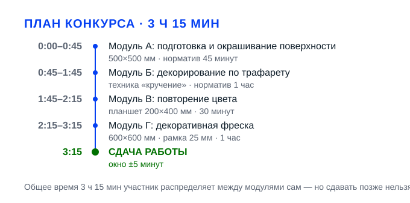
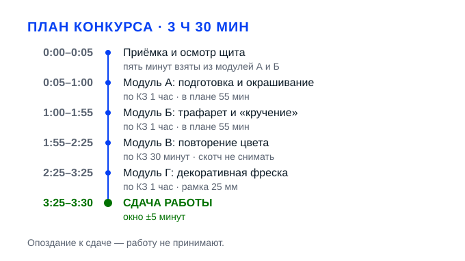
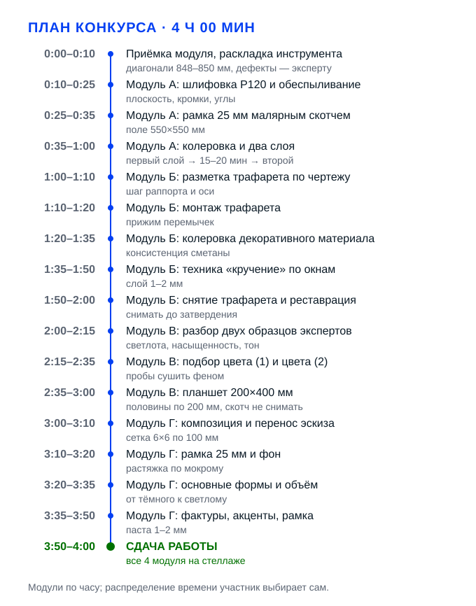

Декоративные работы (Р)
Задания ниже — официальные файлы «Абилимпикс» (источник: abilympics-russia.ru), разложенные по категориям. Решения написаны по тексту задания, регламенту и критериям оценки; в них указано, что именно проверяет эксперт.
Школьник
14–16 лет, базовый уровень заданияВыдержка из официального конкурсного задания: страницы, относящиеся к категории «Школьник» (стр. 4–7 источника).
Пошаговое решение
Четыре модуля за 3 часа 15 минут, и все они про одно: получить ровную окрашенную плоскость, положить на неё декор по трафарету, попасть в чужой цвет и собрать фреску. Модуль А — поверхность 500×500 мм за 45 минут, модуль Б — та же поверхность, но уже с трафаретом и техникой «кручение» за час, модуль В — планшет 200×400 мм, который нужно окрасить цветом, повторяющим образец экспертов, за 30 минут, и модуль Г — фреска 600×600 мм с рамкой 25 мм за час. Официально участник распределяет общее время сам, но нормативы модулей жёсткие, поэтому план важнее вдохновения. Три вещи решают исход: чистая подготовка поверхности, записанный рецепт колера и умение не трогать то, что должно сохнуть.

Задача 1. Подготовить и окрасить поверхность 500×500Модуль А · 45 минут · результат — поверхность, окрашенная цветным составом
Модуль А — фундамент всей работы: на эту поверхность в модуле Б ляжет трафарет и декоративное покрытие. За 45 минут нужно осмотреть планшет, снять неровности, обеспылить, заколеровать состав и уложить два слоя краски ровно, без полос и потёков. Цвет участник выбирает сам, и этот выбор потом оценивают на сдаче, поэтому он делается осознанно, а не наугад. Здесь же появляется привычка, которая спасёт в модуле В: записывать рецепт колера.
Действие 1.1. Войти в работу и принять планшет
Шаг 1.1.1
Слушаем вводный инструктаж до конца и ставим подпись в журнале: без подписи к работе не допускают. Сразу уточняем у эксперта три вещи — где вода и раковина, где сушильная зона и что делать, если планшет принесли с дефектом. Дальше надеваем фартук или рабочую куртку и резиновые перчатки: пигментные пасты на водной основе отмываются с кожи не сразу, а с пальцев они переезжают на кромку планшета.
Модуль А — самый короткий из четырёх: 45 минут на 0,25 м², то есть каждые пять минут здесь стоят дороже, чем в остальных модулях. Инструктаж и подпись — условие допуска, а не часть оценки за отделку, но нарушение техники безопасности останавливает работу целиком, и окрашенная поверхность уже никого не интересует. Перчатки нужны не для чистоплотности: отпечаток пальца на невысохшем слое остаётся навсегда и шлифовке не поддаётся.
Подпись в журнале есть, перчатки подобраны по руке и не болтаются на пальцах, фартук застёгнут. Проверьте, что вам показали сушильную зону: планшет с сырым покрытием нельзя нести через весь зал на вытянутых руках.
Кивнуть и не слушать, а потом искать раковину в чужой зоне, теряя десять минут из сорока пяти. Вторая ошибка — работать без перчаток: светлый пигмент не отмывается, и на белой поверхности остаются бурые мазки, которые эксперт видит при первом же осмотре.
Эксперт проверяет журнал до старта и смотрит первые минуты: как участник держится у планшета, не ставит ли на него банки с краской. Отдельно отмечается, задаёт ли участник вопросы по делу или ищет инструмент вслепую.
Шаг 1.1.2
Раскладываем инструмент по зонам, а не в общую кучу: слева шпатели 50 и 100 мм, шлифбрус с наждаком P120 и P180, справа ёмкость 0,5 л под колер, кювета с валиком 150 мм (ворс 8–10 мм) и флейц 50 мм, отдельно миксер-насадка, липкая салфетка и сухая ветошь. Краску и пигменты ставим на подложку, а не на планшет: капля пигмента на лицевой стороне стоит всей работы. Шпатели и банки не кладём на кромку — она рабочая.
Порядок на столе — единственная страховка от «ищу минуту, теряю пять»: в модуле А всего 45 минут, и на два слоя краски остаётся около двадцати. Шпатель, брошенный на планшет, оставляет вмятину, которую видно на готовой поверхности при боковом свете, а липкая салфетка под банкой приклеивается к свежему слою и снимает его кусками.
Проверьте, что до любой банки и любого шпателя вы дотягиваетесь не вставая и что на самом планшете ничего не лежит. Валик должен быть сухим и чистым: ворс от прошлой работы или засохшая краска на шейке испортят первый же слой.
Свалить всё в одну кучу — потом искать шпатель под краской и размешивать колер тем же ворсом, которым шлифовали. Вторая ошибка — поставить открытую банку пигмента на планшет: одно движение локтем, и тёмная капля уходит в светлый фон, а снять её без следа нечем.
Эксперт оценивает организацию места в первые пять минут: свободна ли рабочая зона, лежит ли инструмент по порядку, нет ли на планшете посторонних предметов. Аккуратный стол читается как понимание процесса и работает на общее впечатление от модуля.
Шаг 1.1.3
Берём планшет 500×500 мм, ставим на подкладку и проверяем геометрию: диагонали должны совпадать с точностью до 1 мм, углы — 90°, толщина одинаковая по всей площади. Проводим ладонью по лицевой стороне — она должна быть сухой, без масляных пятен, воска и следов клея. ФИО и номер рабочего места пишем на обороте карандашом сразу, пока лицевая сторона чистая.
Кривая заготовка не даёт ровной рамки в модуле Г и честной разметки в модуле Б: перекос в 2 мм на 500 мм превращается в клин по краю. Масляное пятно — место, где краска на водной основе не схватится и останется «лысиной», а исправить её после сушки можно только полной перекраской, на которую в 45 минутах нет запаса.
Диагонали одинаковые, углы прямые, поверхность сухая и однородная на ощупь. Если на планшете есть скол или вмятина — покажите эксперту до начала работы, а не после первого слоя. Проверьте и подложку: на мягкой планшет проминается под ладонью, и это чувствуется сразу.
Принять планшет без проверки и обнаружить перекос, когда половина поверхности окрашена. Вторая ошибка — не подписать оборот: работы сдаются обезличенно, и вашу поверхность легко перепутать с соседней, а спор о дефекте решается не в вашу пользу.
Эксперт фиксирует приёмку заготовки до старта. Если дефект был и участник о нём сказал — это плюс к организации; если дефект всплыл в конце, объяснение уже не принимается.
Действие 1.2. Подготовить поверхность к окраске
Шаг 1.2.1
Ставим планшет под углом к источнику света, чтобы отблеск шёл по поверхности, и смотрим вдоль неё: так видны вмятины, наплывы шпаклёвки, поднятый ворс и царапины, которых сверху не видно. Каждый дефект отмечаем мелком с обратной стороны — точкой напротив места. Отдельно проверяем кромки: заусенец на торце цепляется за валик и вытягивает ворс в краску.
Конкурсное задание прямо требует осмотреть поверхность на наличие неровностей и при необходимости прошлифовать, то есть оценивают не только цвет, но и то, остались ли под краской бугры. Краска не выравнивает: слой в 100 микрометров повторяет рельеф, и каждая вмятина на финише читается как тень, а не как «почти незаметно».
Отблеск идёт ровной полосой, без разрывов и волн; под ладонью нет ступенек. Отметок на дефекты столько же, сколько вы нашли: если считать «примерно», половина останется незамеченной и всплывёт после первого слоя.
Начать красить сразу, без осмотра: бугры и вмятины остаются, а второй слой только подчёркивает рельеф. Самая частая ошибка — не заметить поднятый ворс: после первого слоя он встаёт дыбом, и поверхность становится шершавой на всей площади.
Эксперт подходит к планшету в начале модуля и смотрит, осматривает ли участник поверхность на просвет или сразу берёт валик. Отмеченные дефекты — признак того, что работа идёт по плану, а не наугад.
Шаг 1.2.2
Шлифуем шлифбрусом с наждаком P120, затем проходим P180: сначала вдоль волокон, потом круговыми движениями без нажима, чтобы не сделать «тарелку» посередине. Кромки проходим с фаской 1 мм под 45°, держа брус под углом и не продавливая ребро. Шлифуем до матовости: поверхность должна стать ровной на ощупь и перестать блестеть на отблеске. Меняем наждак, как только он засалился: забитое зерно не режет, а полирует поверхность.
P120 снимает ворс и мелкие наплывы, P180 закрывает следы грубого зерна — если пропустить второй номер, под краской останутся царапины, которые проявятся на глянце. Фаска нужна потому, что острый угол не держит краску: она скалывается при первом касании, и скол виден на торце, куда эксперт смотрит при осмотре кромок.
Проведите ладонью поперёк поверхности: ступенек и задиров нет. Посмотрите на отблеск под углом — равномерная матовая поверхность без блестящих пятен, которые означают недошлифованное место. Кромки проверьте отдельно: фаска должна быть снята по всему периметру, без пропусков в углах.
Шлифовать только «пятнами» по видимым дефектам: граница перехода остаётся ступенькой и на финише читается тёмным кольцом. Вторая ошибка — давить на брус у кромки: ребро проваливается, и планшет перестаёт быть квадратом.
Эксперт проверяет поверхность на ощупь после шлифовки и смотрит на кромки. Продавленные рёбра он отмечает сразу: геометрию после окраски уже не вернуть.
Шаг 1.2.3
Снимаем пыль в три прохода: сухой щёткой или пылесосом с мягкой насадкой, потом липкой салфеткой, затем слегка влажной, хорошо отжатой тканью. Даём высохнуть 10–15 минут, не ускоряя феном: фен поднимает пыль из воздуха и сажает её обратно на поверхность. После сушки ещё раз проходим липкой салфеткой. Щётку ведём вдоль кромок, а не от края к центру, иначе пыль с торцов снова ложится на поле.
Пыль — главная причина шершавого покрытия: каждая пылинка остаётся в слое и видна на отблеске, а впитанная в краску пыль даёт серый оттенок даже на светлом фоне. Обеспыливание входит в последовательность задания отдельным пунктом, и его результат проверяется рукой, а не глазом.
Проведите по поверхности белой салфеткой — серого следа на ней остаться не должно. Поверхность сухая на ощупь, без тёмных влажных пятен, ворс не поднят. Отдельно проведите салфеткой по кромкам и углам: там пыли больше всего, и именно оттуда её выносит валик.
Пропустить обеспыливание и красить по пыли: поверхность получается «наждачной», и второй слой её не исправляет, а только закрепляет. Вторая ошибка — тереть влажной тряпкой без просушки: вода поднимает ворс, и он встаёт под краской.
Эксперт смотрит на этот переход отдельно: есть ли липкая салфетка в работе, не красит ли участник по пыли. Шершавость он проверяет ладонью после сушки первого слоя.
Шаг 1.2.4
Капаем на поверхность каплю воды и смотрим на секундомер: если капля уходит за 5 секунд, основание впитывает неравномерно и нужен тонкий грунт слоем «на сдир», около 30 г на 0,25 м². Наносим флейцем 50 мм вдоль и поперёк, сразу растирая до тонкой плёнки, и сушим 20–25 минут феном на тёплом режиме. Если капля стоит и не впитывается, грунт пропускаем: краска ляжет ровно и без него.
Конкурсное задание грунта не требует, и в 45 минутах модуля А на него нет запаса — поэтому решение принимается по факту, а не по привычке. На впитывающем основании краска сохнет пятнами: там, где впиталась глубже, цвет уходит в матовость, и равномерности, которую требуют от результата модуля, не будет.
Смотрите на каплю, а не на часы: ушла за 5 секунд — грунтуем, стоит дольше 30 секунд — не грунтуем. После грунта поверхность матовая, без блестящих луж, и не липнет к пальцу в перчатке. Если грунт всё же лёг лужами, пройдите по ним сухим флейцем, пока слой не схватился.
Грунтовать «на всякий случай» толстым слоем и не успеть высушить: краска ляжет на сырой грунт и пойдёт шагренью. Вторая ошибка — пропустить грунт на рыхлом основании и получить пятнистый первый слой, который уже не перекрыть.
Эксперт оценивает обоснованность решения, а не сам факт грунтовки. Лишняя операция, съевшая время модуля, — тоже минус, но меньший, чем пятнистый финиш.
Действие 1.3. Заколеровать окрасочный состав
Шаг 1.3.1
Выбираем цвет до того, как открыли банку: по заданию цвет окрасочного состава участник определяет сам, и менять его по ходу работы нельзя. Берём белую акриловую краску как базу и не больше двух-трёх пигментов из четырёх — красного, жёлтого, чёрного и синего: каждый лишний пигмент глушит цвет и уводит его в грязь. Цвет сверяем с будущим декором модуля Б: светлый фон под тёмное кручение читается лучше, чем два близких тона.
Цвет — первое, что видит эксперт на сдаче модуля, и он же задаёт всю дальнейшую работу: в модуле Б декоративный материал ляжет поверх фона, и если фон и декор одинаковы по светлоте, рисунок «слепнет». Ограничение в два-три пигмента практическое: смесь из четырёх паст почти всегда уходит в серо-коричневый, и вернуть чистоту нечем.
Назовите цвет словами до смешивания — «тёплый терракотовый», «приглушённый синий». Если внятно назвать не получается, цвет уже грязный, и его надо пересобрать на новой порции базы, а не спасать добавками.
Взять все четыре пигмента «для насыщенности»: смесь быстро сереет, и цвет приходится собирать заново, теряя пять-семь минут из сорока пяти. Вторая ошибка — выбрать цвет, не думая о декоре, и потом искать контраст на ходу.
Эксперт фиксирует выбранный цвет в начале модуля и сверяет с ним финал: подмена цвета по ходу работы видна сразу. Отдельно оценивается, сочетается ли фон с декоративным слоем.
Шаг 1.3.2
Наливаем в ёмкость 0,5 л около 200 г белой базы, оставляя место под пигмент, и вводим пасту по капле на деревянной палочке: сначала жёлтый или красный, затем синий, чёрный — последним и по половине капли. Перемешиваем миксер-насадкой на малых оборотах 1–2 минуты, даём постоять 5 минут и смотрим цвет заново. Пигмента обычно уходит 1–5 % от объёма базы.
Правило одно: затемнить проще, чем осветлить, поэтому паста идёт от светлого к тёмному и малыми порциями. Миксер на высоких оборотах загоняет воздух — в слое остаются пузыри, которые лопаются и оставляют кратеры. Пятиминутная выдержка нужна потому, что свежая смесь выглядит темнее, чем станет после высыхания.
На стенке ёмкости после перемешивания нет полос и комков пасты. Капля смеси, растёртая по светлому краю планшета, читается одним цветом без вкраплений и точек. Проверьте объём: если смеси меньше 150 г, на два слоя её не хватит и колеровать придётся заново.
Выдавить пасту «на глаз» из тюбика: одна лишняя капля чёрного превращает терракоту в грязно-коричневый, и осветлить её можно только удвоением объёма базы. Вторая ошибка — недомешать: на поверхности остаются тёмные прожилки, которые видны на отблеске.
Эксперт смотрит на дозирование: считает ли участник капли, размешивает ли до однородности. Работа «на глаз» из тюбика заканчивается перерасходом краски, а объём базы ограничен.
Шаг 1.3.3
Наносим пробу 50×50 мм на обрезок того же материала, что и планшет, тонким слоем и сушим феном 30–40 секунд, не поднося сопло ближе 15 см. Сухое пятно сравниваем с задуманным цветом при том же свете, при котором будем работать, и держим пробник рядом с краем планшета. Если после сушки цвет ушёл на полтона — корректируем в ёмкости, а не на планшете.
Мокрый слой всегда темнее сухого примерно на 10–15 %: если сверять цвет по банке, готовое покрытие окажется светлее задуманного. Пробник на том же материале нужен потому, что впитываемость основы меняет оттенок — на грунтованном обрезке и на голом планшете один и тот же колер выглядит по-разному.
Пробник высох полностью, не липнет и не блестит, по светлоте совпадает с задуманным цветом. Держите его у края планшета, а не в тени руки: сравнение при разном свете — самая частая причина промаха. Пробник подпишите числом капель: без подписи через двадцать минут все пробы выглядят одинаково.
Проверять цвет по мокрой капле в банке: после сушки покрытие светлеет, и сдать «не тот» оттенок легко. Вторая ошибка — сушить феном вплотную: на пробнике вскипает слой, и он показывает не тот цвет, который ляжет на планшет.
Эксперт обращает внимание на наличие пробника: это признак управления цветом, а не надежды. Пробник на обрезке, а не на самом планшете, — тоже показатель: лишние пятна на рабочей поверхности снимают баллы.
Шаг 1.3.4
Записываем рецепт на бумаге или на обороте планшета: сколько граммов базы, сколько капель каждого пигмента и в каком порядке. Тот же расчёт пересчитываем на второй слой — его понадобится примерно столько же, сколько ушло на первый. Запись держим на столе до конца конкурса: в модуле В придётся повторить чужой цвет, и привычка фиксировать состав экономит там целый подход.
Второй слой нужно получить точно того же цвета: долить пигмент «по памяти» почти всегда означает разницу в полтона, а граница между слоями при боковом свете видна полосой. Кроме того, рецепт — единственный способ воспроизвести цвет, если первый слой пришлось перекрывать.
В записи есть три числа: объём базы, капли по каждому пигменту и номер партии краски, если он есть на банке. Проверьте, что запись читается через час: карандаш на кромке стола стирается, а бумага пачкается пигментом.
Не записать состав и смешать второй слой «на глаз»: на одной поверхности получаются два оттенка, и стык виден даже без бокового света. Вторая ошибка — запомнить «примерно столько» и обнаружить, что банка базы уже пуста.
Эксперт редко смотрит записи прямо, но видит их результат: ровный цвет без стыков на всей площади. Работа по записи идёт быстрее и спокойнее, и это заметно по темпу.
Действие 1.4. Нанести состав и сдать модуль
Шаг 1.4.1
Наносим первый слой валиком 150 мм с ворсом 8–10 мм: окунаем в кювету, отжимаем о решётку и ведём «М»-образными движениями, сразу растушёвывая в одном направлении — сверху вниз. Кромки и торцы проходим флейцем 50 мм, не заходя кистью на лицевую сторону дважды. Слой тонкий, около 80–100 микрометров: краска должна лечь плёнкой, а не лужей. Валик ведём от сухого участка к мокрому, чтобы не тащить краску обратно.
Растушёвка в одном направлении задаёт направление следа ворса, и второй слой ложится поперёк — покрытие выходит ровным. Толстый слой сохнет неравномерно, тянется за валиком и оставляет полосы, а на торце собирается в каплю, которая потом отваливается вместе с краской.
На поверхности нет просветов основания и потёков, след ворса однородный. Проверьте угол: при взгляде вдоль поверхности полос от валика быть не должно. Проверьте и торцы: капель там быть не должно, иначе они отваливаются вместе с краской и оставляют скол.
Красить «пожирнее», чтобы закрыть за один раз: слой не просыхает, второй ложится на сырой и тянет первый за собой. Вторая ошибка — водить валиком туда-сюда на одном месте: краска начинает подсыхать и скатывается в комки.
Эксперт смотрит технику: отжимает ли участник валик, растушёвывает ли след, доходит ли до кромок. Полосы от валика на сдаче модуля он отмечает как дефект покрытия.
Шаг 1.4.2
Даём первому слою высохнуть 30–40 минут, при нехватке времени — 10–12 минут феном на тёплом режиме, держа сопло не ближе 20 см и постоянно двигая его. Второй слой наносим валиком поперёк направления первого, с перекрытием полос на 30–50 %. Колер берём из той же ёмкости, предварительно перемешав. Валик перед вторым слоем не мочим, а только отжимаем: вода разбавляет колер и меняет оттенок на площади.
Второй слой перекрывает просветы и выравнивает впитывание — именно он даёт равномерность, которую требует результат модуля. Перекрёстное направление убирает полосы: если красить в том же направлении, следы ворса складываются и усиливаются. Перекрытие в половину ширины валика не даёт стыков, видимых на боковом свете.
При боковом свете поверхность однородная, без тёмных и светлых полос. Нажмите пальцем в перчатке на пробном участке у кромки: если краска не липнет, слой готов к следующей операции. Пятен мокрого блеска остаться не должно ни у кромок, ни в центре.
Красить второй слой по сырому первому: валик снимает краску до основания и оставляет проплешины. Вторая ошибка — сушить феном вплотную: на поверхности вскипают пузыри, которые уже не заполировать. Третья ошибка — набирать краску из ведра, не перемешав её: пигмент оседает, и слой выходит бледнее.
Эксперт оценивает равномерность именно на втором слое и при боковом свете. Он также смотрит, не осталось ли у кромок непрокрашенных участков: их видно, если перевернуть планшет.
Шаг 1.4.3
Осматриваем покрытие при боковом свете, наклоняя планшет к источнику: смотрим просветы, полосы, ворс, пылинки и наплывы на кромках. Мелкий ворс снимаем сухой ладонью в перчатке после полной сушки, а не сразу — по сырому нельзя. Планшет переносим за торцы, двумя руками, и ставим в сушильную зону лицевой стороной вверх, не прислоняя к стене. Под низ подкладываем чистую подкладку, чтобы кромка не набрала пыли с пола.
Модуль А сдаётся по результату «поверхность, окрашенная цветным окрасочным составом», то есть оценивают ровность и чистоту, а не замысел. Наклон к свету — единственный способ увидеть дефекты, которые сверху не видны: полосы и шагрень проявляются только на отблеске. Перенос за торцы и сушка лицом вверх защищают свежий слой от отпечатков и пыли.
При наклоне к свету отблеск идёт ровной полосой, кромки чистые, на поверхности нет ворса и капель. Планшет стоит в сушильной зоне, подписанный с оборота, и до сдачи его никто не трогает. Подпись на обороте должна читаться, не отрывая планшет от подкладки.
Схватить планшет за лицевую сторону: отпечаток ладони в свежем слое не убрать, а подкрашивать пятно на ровном поле бессмысленно — станет заметнее. Вторая ошибка — поставить планшет к стене: пыль садится на лицевую сторону, а кромка упирается в опору.
Эксперт осматривает модуль А сразу после сдачи, при боковом свете, и оценивает равномерность, чистоту кромок, отсутствие потёков. Пятна, ворс и полосы он фиксирует до того, как планшет уйдёт в сушку.
Задача 2. Задекорировать поверхность по трафаретуМодуль Б · 1 час · результат — поверхность, задекорированная по трафарету
Поверхность та же, 500×500 мм, но теперь на окрашенный фон ложится рисунок: разметка по чертежу, монтаж трафарета, декоративное покрытие техникой «кручение», снятие трафарета и реставрация. На всё — час. Ошибка здесь дороже, чем в модуле А, потому что исправлять приходится поверх готового фона: подтёк под перемычку или смазанный завиток уже не перекрыть вторым слоем. Логика работы простая: сначала геометрия, потом материал, и только потом движение рукой.
Действие 2.1. Разметить поверхность по чертежу
Шаг 2.1.1
Кладём чертёж рядом с планшетом и читаем его до конца: где центр композиции, какие отступы от кромок, как ориентирован рисунок относительно вертикали. Находим на чертеже две-три привязки, от которых будем откладывать размеры, — обычно это центр и две смежные кромки. Если в чертеже стоит размер трафарета, сразу пересчитываем его в сантиметры и записываем на полях, чтобы не считать в уме под таймер.
Разметка — единственная операция модуля, которую нельзя исправить: карандашная линия под трафаретом останется видна в щелях рисунка, а смещённый на 5 мм трафарет даёт перекос всей композиции. Час на модуль Б рассчитан так, что на разметку уходит не больше десяти минут, и эти десять минут экономят потом полчаса на переделку.
На чертеже отмечены центр и две привязки, все размеры переведены в сантиметры и записаны. Проверьте, что вы поняли, где верх работы: у фрески и трафарета верх и низ часто путают, и рисунок ложится вверх ногами.
Начать монтировать трафарет «по глазомеру»: на 500 мм ошибка в 5 мм выглядит как съехавшая композиция, и это видно даже без линейки. Вторая ошибка — читать чертёж по частям и обнаружить, что размеры не сходятся, когда половина разметки уже нанесена.
Эксперт смотрит, работает ли участник с чертежом или «как чувствует». Наличие расчётных записей и понятная последовательность привязок — заметный плюс в оценке организации.
Шаг 2.1.2
Отбиваем оси: находим середину каждой кромки линейкой, соединяем противоположные точки тонкой карандашной линией под линейку, затем проверяем пересечение — оно должно дать центр. От центра откладываем половину габарита трафарета в четыре стороны и получаем его контур. Линии ведём твёрдым карандашом HB без нажима, чтобы не продавить окрашенный слой.
Оси дают симметрию: если трафарет ставится по центру, любое смещение сразу читается как перекос, а при разметке от кромки ошибка копится с двух сторон. Твёрдый карандаш без нажима нужен потому, что мягкий графит вдавливается в краску и остаётся серой полосой, которую не перекрыть декором в щелях.
Оси пересекаются в центре, расстояния от центра до каждой кромки одинаковые, контур трафарета замкнут. Проверьте диагонали контура: расхождение больше 1 мм означает, что угол не прямой и трафарет ляжет с перекосом.
Рисовать оси на глаз, без линейки: на пятистах миллиметрах рука уходит на 3–4 мм, и симметрия теряется. Вторая ошибка — давить карандашом: борозда от графита остаётся видимой на готовой поверхности при боковом свете.
Эксперт проверяет разметку до монтажа трафарета: смотрит диагонали и совпадение осей с центром. Кривая разметка — приговор всей композиции, поэтому её замечают раньше, чем декор.
Шаг 2.1.3
Ставим контрольные метки на кромках: тонкие засечки карандашом в местах, где трафарет должен касаться края, и метку верха стрелкой на обороте. Прогоняем пальцем по контуру и проверяем, что ни одна линия не уходит под малярный скотч, которым будем защищать поля. Если рисунок должен выходить на кромку — это фиксируем отдельно, чтобы не обрезать его скотчем.
Метки на кромках — страховка при монтаже: трафарет приклеивается и сдвигается на миллиметры, и без засечек это не заметить. Защитный скотч по периметру нужен, чтобы декоративный материал не ушёл за границу рисунка, но он же и главный враг композиции, если перекрывает то, что должно быть задекорировано.
Засечки видны, верх отмечен, ни одна линия разметки не попадает в зону оклейки. Проверьте, что скотч вы будете клеить поверх фона, а не поверх будущего рисунка. Засечки ставьте по две на сторону: одна у угла, вторая в середине, чтобы трафарет выставлялся по линии.
Забыть про верх и низ: рисунок ложится зеркально, и вся разметка оказывается бесполезной. Вторая ошибка — заклеить скотчем часть рисунка, а потом обнаружить ровную полосу без декора по краю композиции.
Эксперт обращает внимание на аккуратность засечек: мел и графит не должны быть видны на сдаче. Отдельно фиксируется, выходит ли рисунок на кромку так, как требует чертёж.
Действие 2.2. Подготовить и смонтировать трафарет
Шаг 2.2.1
Раскладываем трафарет на столе рисунком вверх и проверяем перемычки: они должны быть целыми, шириной 4–6 мм, без заломов и растянутых участков. Протираем его сухой салфеткой с обеих сторон, а если трафарет плёночный — выравниваем под грузом 2–3 минуты, чтобы он не «помнил» рулон. Края подрезаем только там, где они заходят за контур разметки. Мокрой тряпкой трафарет не протираем: размягчённая плёнка тянется под шпателем.
Перемычка 4–6 мм — то, что формирует рисунок: порванная или растянутая перемычка даёт слившийся декор, и рисунок читается как пятно. Пыль и засохшие капли материала на трафарете поднимают его над поверхностью на десятые доли миллиметра, и материал затягивается под край — получаются рваные границы.
Перемычки целые, трафарет ровный, приложенный к столу он лежит без волн и зазоров. Проведите ладонью: под плёнкой не должно быть пузырей и песчинок. Отдельно проверьте углы: там плёнка отходит чаще всего, и именно в углах рисунок получается смазанным.
Взять трафарет, который лежал в рулоне, и монтировать его с волной: край не прилегает, материал уходит под него, и граница рисунка получается размытой. Вторая ошибка — не заметить надрыв перемычки и получить слипшийся элемент, который потом придётся реставрировать кистью.
Эксперт осматривает трафарет до монтажа, если видит, что участник его готовит. Целостность перемычек он проверяет и на готовой работе — по чёткости внутренних границ рисунка.
Шаг 2.2.2
Монтируем трафарет по разметке: сначала совмещаем одну сторону с осевой линией и фиксируем её малярным скотчем 25 мм, затем, не отпуская, натягиваем противоположную сторону и приклеиваем. Свободные края проклеиваем скотчем внахлёст 5 мм, не заходя на окна рисунка. Прикатываем валиком или ладонью от центра к краям. Если трафарет большой, клеим в два приёма: сначала одну половину, затем вторую, совмещая по осевой.
Крепление сначала по одной стороне — способ не растянуть трафарет: если клеить сразу по всем углам, плёнка идёт волной, и в щелях появляются зазоры в миллиметр. Нахлёст скотча 5 мм закрывает край, но не перекрывает рисунок; прикатка от центра выгоняет воздух, иначе материал продавливает пузырь и рвёт границу.
Трафарет лежит без волн, зазоров и пузырей; скотч держит по всему периметру. Потяните пальцем за свободный край — трафарет не должен отходить от поверхности. Посмотрите на трафарет вдоль поверхности: волна видна как тень под плёнкой, её разглаживают до начала работы.
Приклеить трафарет за все четыре угла сразу: в середине остаётся волна, и материал затягивается под неё полосой. Вторая ошибка — крепить скотчем поверх окон рисунка: после снятия там остаются непрокрашенные участки.
Эксперт смотрит на плотность прилегания: проводит пальцем по краю трафарета. Зазор, который виден ему, виден и материалу — именно туда он и уйдёт. Зазор в миллиметр он считает браком монтажа.
Шаг 2.2.3
Закрываем зоны, которые не должны декорироваться: поля по периметру, если рисунок не выходит на кромку, и участки фона, которые остаются чистыми по чертежу. Клеим малярный скотч 25–50 мм полосами, прикатывая кромку ногтем, чтобы материал не подтекал под свободный край. Внутренние углы проклеиваем короткими отрезками, а не одним перегибом. Клеим от угла к середине стороны, а не наоборот: так скотч не тянется.
Декоративное покрытие ложится слоем 1,5–2 мм и растекается под давлением шпателя — под неприкатанный скотч оно уходит на 2–3 мм и оставляет на фоне языки, которые потом приходится срезать. Короткие отрезки в углах нужны потому, что скотч, перегнутый под 90°, отходит именно в вершине угла.
Все зоны, которые должны остаться чистыми, закрыты; кромки скотча прикатаны. Проверьте углы: под ними не должно быть просвета, видимого на отблеске. Проведите ногтем по кромке скотча по всей длине: там, где ноготь проходит под край, материал затечёт.
Клеить защиту «примерно по краю» и получить после снятия волнистую границу из подтёков. Вторая ошибка — закрыть скотчем часть рисунка, а потом не понять, почему в композиции появилась ровная полоса без декора.
Эксперт оценивает чистоту границ на сдаче: ровная линия перехода между декором и чистым фоном — прямой критерий аккуратности. Подтёки он фотографирует, если они заметны.
Действие 2.3. Подготовить декоративный материал
Шаг 2.3.1
Берём декоративный материал — структурную пасту или декоративную штукатурку — и перемешиваем его в ёмкости миксер-насадкой на малых оборотах до однородности, 1–2 минуты. Если материал колеруется, вводим пигмент по капле и вымешиваем до полного отсутствия прожилок, как в модуле А. Готовим сразу весь объём на 0,25 м²: около 400–600 г на слой 1,5–2 мм, чтобы не останавливаться на середине.
Неоднородный материал даёт пятна: комок, попавший под шпатель, оставляет бугор, а недомешанный пигмент — цветную полосу, которую видно на завитках. Готовить весь объём сразу нужно потому, что вторая порция, смешанная на ходу, почти всегда отличается по оттенку и вязкости, и стык двух порций читается как граница.
Материал однородный, без комков и прожилок, по консистенции — как густая сметана: держится на поднятом шпателе и медленно сползает. Проверьте объём: на 0,25 м² при толщине 2 мм нужно не меньше 500 г. Комков быть не должно даже мелких: каждый из них станет бугром на завитке.
Мешать на высоких оборотах: в пасту забивается воздух, и на поверхности открываются поры, которые не заполнить без второго прохода. Вторая ошибка — готовить материал «по мере»: вторая порция выходит другого оттенка и ложится заметным пятном.
Эксперт смотрит на консистенцию, если подходит в момент подготовки: материал должен держать форму, а не течь. Жидкая паста на трафарете — главная причина подтёков.
Шаг 2.3.2
Проверяем консистенцию практикой: набираем материал на шпатель 100 мм и держим вертикально 3–5 секунд — паста должна сползти на 1–2 см, не больше. Если течёт струёй, добавляем немного сухой смеси или даём постоять 5 минут; если крошится под шпателем — вводим воду по чайной ложке. Готовим пробный мазок на обрезке фанеры или картона. Пробный мазок делаем тем же шпателем, которым будем работать.
Вязкость определяет, останется ли рисунок: слишком жидкий материал уходит под трафарет и не держит завиток, слишком густой рвётся комками и не тянется за шпателем. Пробный мазок на обрезке стоит тридцати секунд и показывает поведение пасты до того, как она окажется на рабочей поверхности.
Паста сползает с вертикального шпателя на 1–2 см, пробный мазок ложится ровным слоем без разрывов и держит форму завитка. Если на пробе видны разрывы — материал жидкий. Проверьте и цвет пробы: если она светлее общей массы, материал размешан неравномерно.
Работать пастой «как есть», не проверяя: один и тот же материал в разных партиях ведёт себя по-разному, и завиток начинает плыть именно на трафарете. Вторая ошибка — разбавить пасту водой «чтобы легче было»: она потечёт под перемычки.
Эксперт смотрит на пробный мазок, если участник его делает: это признак того, что материал проверяют, а не надеются. Отдельно фиксируется, не разбавлен ли материал сверх меры.
Шаг 2.3.3
Готовим инструмент под «кручение»: шпатель 100 мм и мастихин с гибким полотном, кювета с водой и сухая ветошь, отдельная ёмкость для снятого излишка. Шпатель должен быть чистым и сухим, кромка — ровной, без заусенцев: заусенец оставляет борозду по всей длине завитка. Материал держим в ёмкости под плёнкой, чтобы не заветривался. Мастихин подбираем по ширине окна: слишком широкий не войдёт в угол, слишком узкий оставит полосы.
Кромка шпателя — рабочий орган: заусенец или щербина тянет за собой полосу, которую видно на каждом завитке, а исправить её можно только срезанием слоя. Плёнка на ёмкости нужна потому, что паста на воздухе схватывается за 10–15 минут, и корочка потом идёт в работу комками.
Кромка шпателя ровная на просвет, инструмент чистый, материал закрыт. Проведите шпателем по обрезку: след ровный, без борозд и задиров. Проверьте вторую кромку шпателя: щербина часто остаётся на той стороне, которой работали раньше.
Работать шпателем со щербиной: каждый завиток получает борозду, и весь рисунок выглядит бракованным. Вторая ошибка — оставить ёмкость открытой: корочка на поверхности пасты попадает под шпатель и рвёт завиток.
Эксперт обращает внимание на чистоту инструмента в работе. Засохшие комки на шпателе он видит по дефектам на поверхности — это одна из частых причин снижения оценки за декор.
Действие 2.4. Нанести покрытие техникой «кручение»
Шаг 2.4.1
Делаем пробное кручение на обрезке: набираем пасту на шпатель, ставим его к поверхности под углом 20–30° и ведём по кругу диаметром 8–10 см, одновременно поворачивая кисть и постепенно отрывая шпатель к концу движения. Смотрим, какой получается завиток — высота гребня, ширина витка, чёткость края. Подбираем нажим так, чтобы слой был 1,5–2 мм. Пробу делаем на том же материале, что и планшет, иначе нажим придётся искать заново.
Угол 20–30° — рабочий диапазон: при меньшем шпатель скользит и не тянет пасту, при большем срезает слой до основания. Отрыв к концу движения формирует тот самый завиток, ради которого техника и называется кручением; без отрыва получается просто круглое пятно. Пробное кручение на обрезке позволяет найти свой нажим до того, как ошибка ляжет на работу.
Завиток читается как спираль с гребнем по краю, слой 1,5–2 мм, край чёткий, без рваных языков. Сделайте два-три пробных завитка подряд: они должны быть одинаковыми по высоте. Если завитки выходят разной высоты, нажим ещё не найден: продолжайте на обрезке, а не на работе.
Начинать кручение сразу на планшете: первый завиток задаёт масштаб, и если он вышел крупным, вся композиция становится грубой. Вторая ошибка — держать шпатель плоско: паста размазывается, и вместо завитка получается пятно.
Эксперт смотрит на пробные движения: делает ли участник их до работы. Техника «кручение» оценивается по характеру рельефа, поэтому одинаковые завитки — прямой признак владения.
Шаг 2.4.2
Наносим пасту шпателем 100 мм на свободные окна трафарета: набираем небольшую порцию, ставим шпатель под углом 20–30° и распределяем круговыми движениями от центра окна к перемычке, не пересекая её. Движение одно, без возвратов: вернувшись по уже пройденному месту, вы снимете гребень. Работаем от верхнего окна к нижнему, чтобы не опираться рукой на свежий декор.
Порядок сверху вниз — единственный способ не испортить сделанное: рука при работе опирается на поверхность, и на свежем завитке остаётся вмятина от ладони. Движение в одну сторону сохраняет гребень, который и даёт рельеф; возврат шпателя по пройденному участку срезает его и превращает декор в гладкое пятно.
Все окна заполнены, в каждом читается завиток, слой одинаковый по высоте. Проверьте границы: паста не вышла за перемычку и не легла на скотч защиты. Проверьте и перемычки: паста на них остаться не должна, иначе после снятия там будет бугор.
Водить шпателем туда-сюда «чтобы ровнее»: гребень срезается, и декор теряет фактуру. Вторая ошибка — набирать слишком много пасты: излишек выдавливается под трафарет и оставляет наплыв по краю окна. Третья ошибка — не снимать излишек у перемычки: он выдавится под трафарет.
Эксперт оценивает именно рельеф: есть ли завиток, одинаков ли он по всей площади. Гладкие пятна вместо кручения он отмечает как невыполнение техники. Смотрит он и на темп: при медленной работе материал начинает подсыхать под шпателем.
Шаг 2.4.3
Проходим края окон аккуратно: у самой перемычки ведём шпатель параллельно ей, снимая излишек и не подрезая слой. Излишек снимаем шпателем на кювету и не возвращаем в общую ёмкость, если в нём уже есть пыль. Внутренние углы окон проходим мастихином с узким полотном, одним движением от угла. Снятый излишек складываем в отдельную кювету: капля на готовом завитке оставляет вмятину, которую не загладить.
У перемычки слой самый уязвимый: если провести шпателем поперёк, паста подрежется и граница получится рваной. Параллельное движение оставляет ровный край и одновременно снимает излишек, который иначе выдавится под трафарет. Снятый материал с пылью в общей ёмкости даёт комки во всей оставшейся пасте.
Края окон ровные, без рваных языков, угол заполнен полностью. Проведите пальцем по перемычке: на ней не должно быть пасты, иначе после снятия там останется полоса. Посмотрите на окна вдоль поверхности: тень должна ложиться одинаково, без выступов у края.
Подрезать слой у перемычки поперёк: граница получается рваной, и рисунок теряет чёткость. Вторая ошибка — вернуть снятый излишек в ёмкость: пыль и засохшие комки попадают в декор и оставляют бугры. Третья ошибка — снимать излишек прямо на поле фона: там остаётся размазанный след.
Эксперт смотрит на чёткость внутренних границ: ровный край окна читается как аккуратность. Рваные края он относит к дефектам декорирования. Отдельно он смотрит, не подрезана ли фактура у краёв окон.
Шаг 2.4.4
Проверяем толщину и равномерность: смотрим на планшет сбоку, при отражённом свете, и ищем места, где слой просел или, наоборот, выпирает бугром. Просадки аккуратно добираем шпателем с малым количеством пасты, бугры срезаем под углом 15–20°, не задевая соседние завитки. Работаем быстро: у пасты открытое время около 10–15 минут. Инструмент держим чистым: паста на шпателе тянет за собой слой и оставляет борозду.
Просадка после сушки станет тёмным пятном, а бугор — светлым, и оба читаются на фоне ровного рельефа. Открытое время ограничено: паста схватывается, и подрезать её после начала полимеризации уже нельзя — слой начинает скалываться кусками вместе с гребнем.
Слой одинаковый по высоте, завитки читаются, бугров и провалов нет. Наклоните планшет к свету: рельеф должен выглядеть однородным по всей площади рисунка. Проходите окна поочерёдно: сравнивать соседние участки проще, чем всю площадь сразу.
Добирать просадку поверх начавшей схватываться пасты: свежая не схватывается со старой и отслаивается коркой. Вторая ошибка — срезать бугор, задев соседний завиток: вместо одного дефекта получается два.
Эксперт осматривает рельеф при боковом свете, где дефекты видны лучше всего. Толщина слоя и однородность фактуры — основные признаки качества в этом модуле.
Действие 2.5. Снять трафарет и восстановить рисунок
Шаг 2.5.1
Снимаем трафарет, пока материал эластичен: через 15–25 минут после нанесения, когда паста перестала липнуть, но ещё не схватилась. Тянем за свободный край под углом 45° к поверхности, медленно и равномерно, придерживая второй рукой поверхность рядом. Скотч защиты снимаем сразу после трафарета, тоже под углом и от себя. Снятый трафарет кладём на подложку рисунком вверх, не комкая: он ещё понадобится для сверки.
Слишком рано — материал течёт и тянется за трафаретом, слишком поздно — паста уже схватилась, и вместе с плёнкой отрываются куски завитка. Угол 45° даёт ровный отрыв без рывка: если тянуть вверх, край поднимается вместе с декором. Скотч снимают сразу, потому что подсохшая краска на его кромке отламывается и осыпается на свежий рельеф.
Трафарет снят целиком, без разрывов; границы рисунка чёткие, без рваных языков. Защитный скотч снят, поля чистые, на декор не осыпалось ничего. Проверьте перемычки: оставшиеся «язычки» пасты снимают сразу, пока материал эластичен, иначе они отломятся кусками.
Ждать до полного высыхания: паста схватывается с трафаретом, и при снятии вырываются целые фрагменты рисунка. Вторая ошибка — рвануть плёнку вверх: край поднимается и тянет за собой весь завиток у границы.
Эксперт может подойти в момент снятия: смотрит на скорость и угол отрыва. Рваные границы он видит сразу и относит их к дефектам, даже если потом была реставрация.
Шаг 2.5.2
Осматриваем результат при боковом свете, обходя планшет по кругу: ищем подтёки под перемычки, незаполненные углы, смазанные завитки и следы пальцев. Дефекты отмечаем мелком на обороте, чтобы не забыть, и оцениваем, что можно исправить без следа, а что лучше оставить. Даём пасте досохнуть 10–15 минут перед реставрацией. Дефекты на обороте нумеруем: так проще не забыть, что уже исправлено.
Осмотр с разных сторон нужен потому, что рельеф по-разному читается вдоль и поперёк источника света: то, что не видно спереди, видно сбоку. Реставрация по сырому материалу только размазывает дефект, поэтому пауза на досыхание — часть работы, а не простой.
Все дефекты отмечены, ни один не пропущен; паста не липнет к пальцу в перчатке. Проверьте углы окон — там чаще всего остаются пустоты. Пройдите рисунок по часовой стрелке, окно за окном: при таком обходе ни один участок не выпадает из осмотра.
Начать реставрацию сразу после снятия трафарета: свежая паста размазывается, и дефект становится больше. Вторая ошибка — не осматривать работу сбоку и не увидеть подтёк, который потом заметит эксперт.
Эксперт осматривает работу после снятия трафарета, при боковом свете. Именно на этом этапе он фиксирует, какие дефекты остались после реставрации. Он же смотрит, не размазана ли граница рисунка после снятия плёнки.
Шаг 2.5.3
Реставрируем точечно: подтёк под перемычкой снимаем мастихином с узким полотном, подрезая по границе; пустоту в углу добираем пастой тем же колером и заглаживаем круглым движением, повторяющим соседний завиток. Подсохшие края приглаживаем влажным пальцем в перчатке, но не мочим сам рельеф. Каждый исправленный участок сразу сверяем с соседними по высоте и цвету.
Реставрация — обязательный пункт модуля: она есть в последовательности задания, и её результат входит в оценку. Точечное исправление сохраняет общий рельеф, а попытка переделать целый фрагмент почти всегда видна как заплатка другого оттенка. Влажный палец приглаживает край, не размывая фактуру, если касаться только границы.
Исправленные участки не отличаются от соседних ни по высоте, ни по цвету, ни по характеру завитка. Посмотрите на работу с расстояния вытянутой руки: мест реставрации не должно быть видно. Сравнивайте при том же боковом свете, при котором осматривали дефекты.
Размазать дефект пальцем и получить пятно другого тона — самая частая ошибка: вместо одной точки появляется область, которую уже не исправить. Вторая ошибка — добирать пустоту пастой из другой порции: цвет не совпадёт, и заплатка будет видна.
Эксперт оценивает, заметна ли реставрация: аккуратно исправленный участок считается плюсом, грубая заплатка — минусом. Он смотрит на границы рисунка и на однородность рельефа по всей площади.
Задача 3. Повторить цвет экспертов на планшете 200×400Модуль В · 30 минут · результат — поверхность, окрашенная повторённым цветом
Самый короткий модуль и самый честный: эксперты заранее смешали краску четырьмя пигментами — красным, жёлтым, чёрным и синим — и нанесли её на планшет 200×400 мм. Ваша задача — получить тот же оттенок и окрасить свой планшет, не снимая малярный скотч по краям. Тридцать минут не хватает на импровизацию, зато хватает на три подхода с пробниками. Оценивают не красоту цвета, а попадание в него, поэтому работа идёт по числам и замерам, а не по интуиции.
Действие 3.1. Разобрать образец и подготовить планшет
Шаг 3.1.1
Ставим образец экспертов и свой планшет рядом, на одну линию, под нейтральный свет: лампа 5000–6500 K или окно без прямого солнца. Смотрим на образец 10–15 секунд, не дольше: глаз адаптируется и начинает «подгонять» оттенок под ожидание. Сразу называем три параметра — тон (тёплый, холодный), светлоту (светлее или темнее среднего) и насыщенность (чистый или приглушённый).
Повторение цвета оценивают сравнением двух планшетов, поставленных вплотную, поэтому условия освещения — половина результата: под жёлтой лампой тёплый оттенок уходит в оранжевый, и вы будете подбирать не тот цвет. Три параметра нужны потому, что ошибка по светлоте и ошибка по тону исправляются разными пигментами, и путать их нельзя.
Образец и планшет стоят рядом в одинаковом свете. Вы можете словами описать оттенок: «приглушённый тёплый, средней светлоты, ближе к охре». Если описание расплывается — смотрите ещё раз, но не дольше двадцати секунд.
Смотреть на образец под своей лампой с жёлтым светом или на солнце: оттенок читается неверно, и весь подбор уходит в сторону. Вторая ошибка — разглядывать образец минуту: глаз адаптируется, и вы начинаете видеть желаемое вместо реального.
Эксперт следит, сравнивает ли участник при одном свете. Планшет, окрашенный под другим освещением, при оценке рядом с образцом сразу выдаёт разницу. Разницу в полтона он видит сразу, без всяких приборов.
Шаг 3.1.2
Подписываем планшет с обратной стороны до начала работы: ФИО и номер рабочего места печатно, простым карандашом или маркером по сухому. Проверяем, что планшет 200×400 мм лежит лицевой стороной вверх и по периметру наклеен малярный скотч. Скотч не трогаем и не подрезаем: его снимут эксперты при оценке соответствия цветов. Планшет ставим на подкладку, чтобы кромка не набрала пыли с пола.
Подпись на обороте — обязательное требование задания, и делается она до окраски, потому что после работы руки в краске, а переворачивать сырой планшет нельзя. Скотч по периметру нужен как рамка сравнения: эксперты снимают его сами, и если участник снял его раньше, края окрасятся в другой тон и сравнение теряет смысл.
ФИО и номер читаются, написаны на сухой поверхности, скотч по всему периметру на месте и прикатан. Проверьте, что подпись не смажется, когда планшет будут переворачивать. Проверьте торец: скотч должен закрывать его край, а не свисать с него.
Подписать планшет после окраски: сырая краска смазывается, а перевернуть планшет, чтобы написать, уже невозможно. Вторая ошибка — снять скотч «для аккуратности»: это прямое нарушение условия модуля, и края получат другой оттенок.
Эксперт проверяет подпись на обороте при сдаче: без неё работа обезличивается. Наличие скотча по периметру он тоже фиксирует — это условие корректного сравнения цветов.
Шаг 3.1.3
Готовим инструмент подбор: белую базу в ёмкости 0,25 л, четыре пигмента — красный, жёлтый, чёрный, синий, пипетки или деревянные палочки для каждого, отдельные пробные полоски 5×5 см из того же материала, что и планшет, фен и чистые кисти. Всё раскладываем так, чтобы до пигментов можно было дотянуться, не переставляя банки: в тридцати минутах каждое лишнее движение заметно.
Отдельная палочка на каждый пигмент — правило, без которого цвет «загрязняется»: чёрный, попавший в банку красного на кончике палочки, уводит весь красный в грязь. Пробные полоски из того же материала нужны потому, что впитываемость основы меняет оттенок, и проба на бумаге ничего не скажет о планшете.
Четыре пигмента открыты, у каждого свой инструмент, полоски нарезаны, фен под рукой. Проверьте, что база именно белая: цветная база делает подбор бессмысленным. Проверьте, что пипетки не перепутаны: на каждой банке свой инструмент, и это видно по цвету на кончике.
Брать пигмент одной палочкой из разных банок: цвета перепутываются, и вернуть чистоту оттенка уже нельзя. Вторая ошибка — пробовать на газете или на белой бумаге: результат на планшете будет другим. Третья ошибка — работать без пробных полосок и проверять цвет прямо на планшете.
Эксперт смотрит на организацию подбора: отдельные инструменты, наличие пробных полосок. Работа «одной кистью из всех банок» почти всегда даёт грязный оттенок.
Действие 3.2. Подобрать цвет пробниками
Шаг 3.2.1
Начинаем с базы: наливаем 50 г белой краски в небольшую ёмкость и добавляем первый пигмент — тот, что задаёт тон, обычно жёлтый или красный. Считаем капли вслух и записываем: одна капля на 50 г — это уже заметный сдвиг, поэтому первые порции идут по половине капли с конца палочки. Перемешиваем круговыми движениями 30–40 секунд до однородности. Порцию замешиваем в прозрачной ёмкости: по стенкам видно, размешано ли всё до дна.
Малый объём пробы — ключ к скорости: на 50 г краски одна капля даёт заметное изменение, и вы успеваете сделать три-четыре подхода за десять минут. На большой порции первые капли не видны, и участник добавляет ещё — а потом уже не может вернуться назад.
Проба однородная, без прожилок, тон читается. Записи капель ведутся с самого начала: без них третий подход превращается в угадывание. В записи должны быть два числа — объём базы и капли по каждому пигменту: без второго повтор невозможен.
Начать сразу с большого объёма «чтобы хватило на планшет»: первые капли не читаются, краска уходит в насыщенный цвет, и осветлить её нечем. Вторая ошибка — не записывать дозировку: подобрать цвет и не суметь его повторить для второго слоя.
Эксперт наблюдает за подходом: идёт ли работа от базы к оттенку или сразу «в густое». Пошаговое добавление пигмента видно по цвету проб. Он отмечает и то, не мешает ли участник пигменты одной палочкой.
Шаг 3.2.2
Наносим пробу 5×5 см на полоску тонким слоем, сушим феном 20–30 секунд с расстояния 15–20 см и прикладываем полоску вплотную к образцу экспертов, а не на расстоянии. Смотрим на стык: глаз точнее всего ловит разницу на границе двух цветов. Оцениваем сначала светлоту, потом тон, потом насыщенность — в этом порядке, потому что светлота ошибки не прощает.
Сухая проба темнее мокрой на 10–15 %, именно поэтому сравнение идёт только по сухой полоске — иначе вы подберёте цвет, который после высыхания окажется темнее образца. Прикладывание вплотную — приём из колориметрии: на границе разница видна там, где разнесённые образцы кажутся одинаковыми.
Проба высохла, не блестит, приложена вплотную к образцу. Разница по светлоте — не больше одного шага, тон совпадает, насыщенность близка. Смотрите на стык под углом: если граница пробы «исчезает», цвет попал, если читается полосой — разница ещё есть.
Сравнивать мокрую каплю и сухую полоску: цвет после высыхания уходит, и подбор заканчивается промахом на полтона. Вторая ошибка — держать пробу на расстоянии 10 см от образца: разница размывается, и глаз её не ловит.
Эксперт смотрит на методику сравнения: сухая проба вплотную к образцу — признак понимания задачи. Сравнение «на глаз издалека» почти всегда даёт ошибку.
Шаг 3.2.3
Корректируем по результату: если проба светлее — добавляем пигмент того же тона по четверти капли; если темнее — разбавляем базой, а не белым «на глаз»; если ушла в холод — добавляем красный или жёлтый, если в тепло — синий или чёрный по капле с конца палочки. Каждый шаг фиксируем в записи и сразу проверяем новой пробой. Каждую пробу подписываем числом капель, иначе через десять минут они выглядят одинаково.
Порядок исправлений экономит подходы: светлота правится базой или пигментом, тон — противоположным по температуре, насыщенность — чёрным, который одновременно гасит яркость. Если начать с насыщенности, придётся заново править светлоту, и тридцати минут не хватит.
Новая проба стала ближе к образцу по светлоте и тону. Держите все пробы подряд на столе: по ним видно направление движения, и это быстрее, чем вспоминать. Разложите пробы по порядку подходов: видно, в какую сторону уходит цвет, и следующий шаг становится очевидным.
Пытаться исправить тёмную пробу добавлением белого в большом количестве: цвет теряет насыщенность и уходит в пастель. Вторая ошибка — гасить яркость чёрным до того, как исправлена светлота: оттенок становится серым.
Эксперт обращает внимание на последовательность исправлений. Хаотичное добавление всех четырёх пигментов он видит по итоговому цвету — он уходит в грязь.
Шаг 3.2.4
Делаем контрольный подход: замешиваем финальную порцию по записанному рецепту, пересчитанному на объём под планшет, — на 200×400 мм нужно около 60–70 г на два слоя. Наносим пробу на уголок планшета, под скотч, или на полоску того же материала, сушим и сравниваем вплотную к образцу. Если совпадение в пределах полутона — фиксируем рецепт и переходим к окраске.
Пересчёт на объём — обязательный шаг: проба на 50 г и рабочий объём на 70 г при том же числе капель дадут разные оттенки, и это самая обидная ошибка модуля. Контроль на уголке планшета под скотчем нужен потому, что там впитываемость и фактура точно такие же, как на рабочей площади.
Финальная проба совпадает с образцом при прикладывании вплотную, рецепт записан в пересчёте на рабочий объём. Убедитесь, что капель хватит: пигмента должно быть с запасом на два слоя. Проверьте объём на глаз: в ёмкости должна остаться не меньше половины.
Смешать финальную порцию «по памяти» без пересчёта: на большем объёме цвет светлеет, и планшет получается бледнее образца. Вторая ошибка — проверять финальную порцию только на палочке, не сделав пробы на материале.
Эксперт может наблюдать контрольную пробу. Наличие пересчёта и записи — признак того, что участник управляет процессом, а не надеется на удачу. Он также смотрит, не меняет ли участник рецепт после контрольной пробы.
Действие 3.3. Окрасить планшет и сдать модуль
Шаг 3.3.1
Наносим первый слой флейцем 50 мм или валиком 100 мм: короткими движениями в одном направлении, тонко, 60–80 микрометров, сразу растушёвывая к краям. До скотча доходим, но на сам скотч краску не заводим: она нужна только на рабочем поле. Торцы не трогаем — они остаются чистыми, чтобы подпись на обороте читалась. Валик отжимаем о решётку кюветы: с избытком краски слой выходит толстым и сохнет дольше.
Тонкий первый слой сохнет за 10–12 минут, и за это время можно успеть второй — в тридцати минутах модуля это критично. Краска на скотче при снятии потянет за собой плёнку и оставит рваный край именно там, где эксперты будут сравнивать цвета. Краска на скотче сохнет заметно дольше самого планшета.
Первый слой ровный, без потёков, до скотча не доходит, торцы чистые. Проверьте угол зрения: при взгляде вдоль поверхности нет полос от кисти. Проверьте кромку у скотча: там слой тоньше всего, и светлые проплешины появляются именно там.
Красить «пожирнее», чтобы успеть за один слой: краска не просыхает, второй слой её стягивает, а на скотче остаётся валик, который потом рвёт край. Вторая ошибка — заводить краску на скотч «для ровности»: после снятия там остаётся ступенька.
Эксперт оценивает равномерность и чистоту края. Краска на скотче и рваный край после снятия — заметный дефект, который снижает оценку за аккуратность.
Шаг 3.3.2
Даём первому слою высохнуть 10–15 минут, при нехватке времени — 5–6 минут феном на тёплом режиме, держа сопло не ближе 20 см. Второй слой наносим поперёк первого, тем же колером из той же ёмкости, снова не заходя на скотч. Следим, чтобы слой оставался тонким: два тонких слоя дают ровный цвет, один толстый — пятна. Кисть ведём от середины к краям, чтобы не ставить лишний мазок у скотча.
Второй слой закрывает просветы и выравнивает цвет по всей площади — именно его сравнивают с образцом. Перекрёстное направление убирает полосы, а тонкость слоя важна потому, что толстая краска сохнет неравномерно и даёт разные оттенки на одном планшете.
Поверхность однородная, без полос и проплешин, скотч чистый, торцы сухие. Наклоните планшет к свету: отблеск должен идти ровно, без тёмных участков. Сравните цвет в центре и у кромок: если он гуляет, второй проход нужен точечно.
Красить второй слой по сырому: кисть снимает краску и оставляет светлые проплешины, которые на цветной поверхности читаются как разводы. Вторая ошибка — сушить феном вплотную и вскипятить слой. Третья ошибка — не прокрасить кромку у скотча: после снятия там останется светлая полоса.
Эксперт оценивает однородность цвета по всей площади: пятна и полосы он видит при сравнении с образцом, потому что они меняют оттенок на разных участках.
Шаг 3.3.3
Сдаём планшет правильно: не снимая скотч, не переворачивая лицевой стороной вниз и не прислоняя к стене. Ставим его на стеллаж или в сушильную зону горизонтально, лицевой стороной вверх, и говорим эксперту, что работа готова. Скотч снимут эксперты при оценке соответствия цветов — это их операция, а не ваша. Переносим планшет за торцы: отпечаток на цветном поле виден так же, как на белом.
Снятие скотча — часть процедуры сравнения: эксперты снимают его одновременно с образца и с вашего планшета, чтобы края совпали. Если снять самому, край получит другой тон, и сравнение пойдёт не в вашу пользу. Горизонтальная сушка защищает свежий слой от сползания и отпечатков.
Скотч на месте, планшет лежит горизонтально лицевой стороной вверх, подпись на обороте читается. Работа передана эксперту, время сдачи зафиксировано. Проверьте, что на планшете нет капель и ворса: на цветной поверхности они заметнее и снимаются только после сушки.
Снять скотч «чтобы было аккуратно»: это прямое нарушение условия модуля, и край окрасится иначе. Вторая ошибка — поставить планшет вертикально: краска сползает к нижней кромке и даёт тёмную полосу. Третья ошибка — поставить планшет на сквозняк: сохнет неравномерно, и цвет идёт пятнами.
Эксперт проверяет наличие скотча и подписи при приёмке. Работа со снятым скотчем сравнивается иначе, и участник теряет баллы не за цвет, а за процедуру.
Задача 4. Выполнить декоративную фреску 600×600Модуль Г · 1 час · результат — фреска декоративными материалами и красками
Фреска — модуль, где видно всё сразу: подготовку, владение материалом, чувство композиции и умение работать в срок. Поверхность 600×600 мм, рамка 25 мм по периметру отбивается малярным скотчем, эскиз разрешён как черновик и сам не оценивается. Обязательное условие — декоративные покрытия и краски, и вся площадь должна быть использована, а не закрашена по центру. Час на такой формат — это жёсткий план: сначала фон, потом крупные формы, потом детали, и ни одного возврата к уже высохшему.
Действие 4.1. Спланировать композицию и отбить рамку
Шаг 4.1.1
Достаём эскиз и разбираем его по слоям: что идёт фоном, что крупными формами, что деталями, и в каком порядке это будет наноситься. Отмечаем на эскизе, где композиционный центр и как работа держит углы — по заданию нужно использовать всю поверхность, значит пустых зон быть не должно. Проверяем, что материалов хватает на задуманное: пересчитываем объёмы под 0,36 м².
Эскиз не оценивается и служит черновиком, поэтому его ценность в другом: он заставляет принять решения до того, как краска легла на поверхность. Работа без плана на формате 600×600 почти всегда начинается с центра и заканчивается пустыми полями по краям — а использование всей площади в этом модуле оговорено отдельно.
На эскизе отмечены слои и порядок работы, посчитан объём материалов на 0,36 м². Проверьте, что ни один элемент не выходит за рамку 25 мм: она отбивается по периметру и должна остаться чистой. Проверьте запас материалов: треть объёма должна остаться на подчистку и реставрацию.
Начать сразу с центра фрески: дальше не хватает времени и краски на периферию, и работа выходит с пустыми полями. Вторая ошибка — рисовать элементы, выходящие за линию рамки: они обрежутся скотчем, и композиция станет обрубленной.
Эксперт смотрит на эскиз в начале модуля и на готовую фреску в конце. Совпадение замысла и результата — признак управляемой работы, а не случайной. Он смотрит и на распределение элементов по площади, а не только на сам замысел.
Шаг 4.1.2
Отбиваем рамку: отмеряем 25 мм от каждой кромки, ставим засечки в нескольких точках и наклеиваем малярный скотч 25 мм так, чтобы его внутренний край шёл точно по линии, а наружный закрывал полосу до кромки. Углы формируем внахлёст, лишнее подрезаем ножом по линейке. Прикатываем скотч ногтем и ладонью по всей длине. Скотч берём шириной ровно 25 мм: более узкий придётся клеить в два ряда, и линия выйдет ступенькой.
Рамка 25 мм — не декоративная кайма, а техническая граница: она задаёт поле, которое должно остаться чистым, и одновременно защищает кромку от декоративного материала. Внутренний край скотча — это линия будущей границы, поэтому его и ведут по разметке, а не «примерно вдоль кромки». Внахлёст в углах нужен потому, что скотч, согнутый под 90°, отходит именно в вершине.
Ширина полосы 25 мм в четырёх точках на каждой стороне, внутренний край ровный, углы прямые. Прикатка проверяется пальцем: под скотчем не должно быть пузырей и песчинок. Ширину полосы проверяют линейкой в четырёх точках на каждой стороне: 25 мм — требование задания, а не пожелание.
Клеить скотч на глаз: полоса выходит 20 мм в одном месте и 30 в другом, и рамка читается как кривая. Вторая ошибка — не прикатать кромку: материал затекает под скотч и после снятия оставляет языки на чистом поле.
Эксперт измеряет рамку линейкой на сдаче: 25 мм — требование задания, и отклонение видно сразу. Ровность внутренней линии он оценивает вместе с аккуратностью кромок.
Шаг 4.1.3
Проверяем готовность основания под фреску: поверхность обеспылена, при необходимости прошлифована и загрунтована тонким слоем, паста и краски перемешаны, инструмент разложен по слоям работы. Отдельно готовим ветошь и воду для подчистки, а также ёмкость для снятого материала. Всё, что нужно в первые двадцать минут, ставим в пределах вытянутой руки. Мастихин и шпатель кладём на подставку, а не на планшет.
Фреска пишется быстро, и любая остановка на поиск инструмента стоит дороже, чем в модуле А: пока вы ищете мастихин, фон подсыхает, и следующий слой ложится неровно. Подготовка основания важна потому, что декоративное покрытие на 600×600 ложится толстым слоем и подчёркивает все неровности, которые на тонком слое краски были незаметны.
Основание сухое и чистое, паста и краски перемешаны до однородности, инструмент под рукой. Проверьте, что ёмкости с колером подписаны: на фреске используется несколько оттенков, и путать их нельзя. Подпишите крышки маркером — «фон», «акцент», «деталь»: на фреске используется несколько оттенков.
Начать без подготовки основания: на шероховатой поверхности декоративный слой ложится пятнами, а подчистка съедает время. Вторая ошибка — смешать все оттенки в одну ёмкость: фреска теряет глубину и становится плоской.
Эксперт оценивает организацию перед началом: чистое ли основание, готовы ли материалы. Порядок на столе он видит и по ходу работы — он влияет на общее впечатление от модуля.
Действие 4.2. Выполнить фон фрески
Шаг 4.2.1
Наносим фон декоративным покрытием: набираем пасту на широкий шпатель 250 мм и распределяем по площади движениями в одном направлении, слоем 1–2 мм, не доходя 2–3 мм до скотча рамки. Работаем участками примерно 30×30 см, растушёвывая границу между ними сразу, пока материал свежий. До кромки скотча доводим мастихином, аккуратно и без нажима. Шпатель держим под углом 30–40° к плоскости и не наклоняем кромку к скотчу.
Фон задаёт фактуру, на которой будут читаться все остальные слои, поэтому он должен быть ровным по толщине и направлению: разнонаправленные мазки дают «лоскутное» поле, и декор на нём теряется. Границу участков растушёвывают сразу потому, что подсохшая паста не схватывается со свежей и остаётся видимым швом.
Фон ровный по толщине, направление мазков единое, швов между участками нет. Проверьте на просвет: отблеск идёт одинаково по всей площади. Проверьте края у скотча: там слой тоньше, и если он просвечивает, фон добирают до схватывания.
Наносить фон «как получится», меняя направление: фактура выходит пятнистой, и верхние слои на ней не читаются. Вторая ошибка — заводить пасту на скотч рамки: после снятия там остаётся наплыв, и рамка получается неровной.
Эксперт оценивает фон как основу композиции: равномерность фактуры и отсутствие швов. Пятнистый фон он считает дефектом даже при хорошем декоре. Он обращает внимание и на толщину слоя у рамки: там чаще всего перелив.
Шаг 4.2.2
Пока фон не схватился, добавляем в него цветовые акценты: набираем колер на губку или широкую кисть и вбиваем в пасту пятнами, слегка вращая инструмент, чтобы границы были мягкими. Цвет берём на тон-два темнее или светлее фона — резкий контраст забьёт декор. Работаем от краёв к центру, оставляя центр спокойнее. Губку отжимаем о край палитры: с избытком колера пятно выходит плотным и плоским.
Акценты в фоне дают глубину: однотонное поле выглядит как заготовка, а пятна создают ощущение пространства, на котором декор читается объёмно. Мягкие границы важны потому, что жёсткие пятна конкурируют с основными формами. Спокойный центр оставляют для композиционного центра — там будет главный элемент.
Пятна легли мягко, без резких границ, фон остался читаемым как единое поле. Отойдите на два шага: фактура должна выглядеть живой, а не пёстрой. Посмотрите на фон в перевёрнутом виде: так лучше видно, не собираются ли пятна в случайные группы.
Вбивать колер жёстко, не растушёвывая: пятна читаются как кляксы и спорят с декором. Вторая ошибка — перекрыть акцентами весь фон: глубины не остаётся, и работа становится плоской. Третья ошибка — набирать колер на сухую губку: он ложится полосами и не растушёвывается.
Эксперт оценивает цветовое решение фона: работает ли оно на композицию. Пёстрый фон считается ошибкой композиции, а не смелостью. Он смотрит и на количество оттенков: больше трёх в фоне уже читается как шум.
Шаг 4.2.3
Даём фону подсохнуть 10–15 минут до состояния «не липнет, но продавливается ногтем», и проверяем плоскость: проведите ладонью в перчатке, найдите бугры и провалы. Бугры снимаем шпателем под углом 15°, провалы добираем тонким слоем, растушёвывая края. До полного высыхания ждать не нужно: декор ложится на слегка сырой слой лучше. Шпатель при выравнивании держим почти плоско, под углом 10–15°, иначе снимаем слой до основания.
Степень подсыхания определяет, как ляжет следующий слой: по сырому декор поплывёт, по пересохшему — не схватится и отслоится коркой. Проверка ногтем — самый надёжный способ поймать этот момент без приборов. Выравнивание плоскости сейчас дешевле, чем попытка исправить рельеф после нанесения декора.
Фон не липнет, но ноготь оставляет вдавленный след; бугров и провалов нет. Наклоните планшет к свету: отблеск идёт ровной полосой. Проверьте рукой в перчатке углы: там паста ложится толще, и угол даёт тень, которой нет на остальной площади.
Ждать полного высыхания фона: декор ложится на сухую корку и отслаивается вместе с ней. Вторая ошибка — начинать декор по сырому: мастихин тянет фон за собой, и вместо рисунка получается смазанное пятно.
Эксперт проверяет плоскость фона при боковом свете. Бугры и провалы он видит как искажения отблеска, и на сдаче это засчитывается как дефект фактуры. Он оценивает и толщину: перелив виден по тени, а не по цвету.
Действие 4.3. Выполнить декор по эскизу
Шаг 4.3.1
Наносим крупные формы: переносим с эскиза контуры, размечая их тонкой кистью или карандашом по сухому фону, и заполняем пятнами колера широкой кистью или мастихином. Крупные формы ставим первыми, потому что они задают масштаб: мелкие детали потом подстраиваются под них, а не наоборот. Краску берём густо, но без луж, и не размываем границы больше чем на 2–3 мм.
Иерархия слоёв — основа фрески: если начать с деталей, крупные формы потом некуда ставить, и композиция рассыпается на отдельные пятна. Масштаб задаётся именно крупными пятнами, и по ним эксперт первым делом оценивает, использована ли вся площадь и держится ли композиция.
Крупные формы читаются с расстояния двух шагов, их границы совпадают с эскизом, пропорции соблюдены. Проверьте, что формы не сбились в центр: они должны распределяться по всей площади. Сверьте с эскизом количество крупных форм и их положение относительно центра.
Начинать с мелких деталей: потом некуда ставить крупные формы, и работа выглядит как россыпь мелочи. Вторая ошибка — размывать границы до состояния пятна: форма теряет очертания, и декор превращается в цветовое поле.
Эксперт оценивает композицию целиком: распределение форм по площади, масштаб, равновесие. Сбитые в центр формы читаются как незаполненная поверхность.
Шаг 4.3.2
Добавляем фактурные элементы: кручение, оттиски губкой, рельеф мастихином — то, что уже отработано в модуле Б. Каждый элемент наносим локально, не перекрывая крупные формы целиком, и следим за направлением движения: у завитков и оттисков оно должно совпадать с логикой композиции. Толщина фактурных элементов — 1–2 мм, не больше. Инструмент после каждого элемента протираем, иначе паста тянется за шпателем.
Фактура в этом модуле обязательна: задание требует применения декоративных покрытий, и плоская роспись краской его не выполняет. Локальность важна потому, что фактура поверх всей работы превращает композицию в шум, а совпадение направлений связывает элементы в единое движение.
Фактурные элементы читаются на фоне, но не перекрывают крупные формы, рельеф одинаков по высоте. Проверьте при боковом свете: элементы должны давать тени, а не выглядеть наклейками. Сравните высоту рельефа с фоном: элементы должны выступать, а не утопать.
Покрыть фактурой всю фреску: рельеф забивает рисунок, и работа становится однообразной. Вторая ошибка — делать элементы разной толщины: одни дают глубокую тень, другие исчезают, и композиция разваливается.
Эксперт смотрит на сочетание техник: сколько разных приёмов применено и насколько они уместны. Один приём на всей площади он считает слабым владением материалом.
Шаг 4.3.3
Дорабатываем детали тонкой кистью: акценты, линии, мелкие элементы по эскизу — тем, что связывает крупные формы в единое целое. Кисть держим под углом, краску берём немного и ведём линию одним движением, без остановок: прерванная линия видна как утолщение. Детали ставим только там, где они поддерживают композицию, а не заполняют пустоты. Кисть держим вертикально, на весу, опираясь только на мизинец у края работы.
Детали — это то, что делает фреску работой, а не набором пятен, но их избыток убивает крупную форму. Линия, проведённая с остановкой, утолщается в месте касания кисти, и на фактурном фоне это заметно. Детали, поставленные «чтобы заполнить пустое место», читаются как неуверенность.
Детали связывают формы, не перекрывая их, линии ровные, без утолщений. Отойдите на три шага: работа должна читаться целиком, а детали — поддерживать общий рисунок. Проверьте, что ни одна деталь не «висит» в пустоте: каждая должна опираться на форму.
Рисовать детали «на всякий случай» по всей площади: композиция становится дробной. Вторая ошибка — вести линию с остановками: на фактуре это даёт утолщения и кляксы, которые уже не исправить. Третья ошибка — брать краску с избытком: линия начинается с кляксы.
Эксперт оценивает качество исполнения деталей: ровность линий, соразмерность. Именно на деталях видно, владеет ли участник кистью. Он смотрит и на количество деталей: перегруз читается как суета, а не как мастерство.
Шаг 4.3.4
Проверяем, что использована вся поверхность: проходим взглядом по краям, углам и полям до рамки, отмечаем пустые зоны и заполняем их элементами в той же логике, что и центр. Следим, чтобы заполнение не было механическим — повторять один и тот же элемент по периметру хуже, чем продолжить движение композиции. За 10–12 минут до сдачи останавливаем добавление нового.
Требование использовать всю поверхность прямо записано в задании, и пустые поля считываются как незаконченная работа. При этом механическое заполнение по периметру эксперт отличает от продолжения композиции: ритм должен развиваться, а не повторяться. Остановка за 10–12 минут нужна, чтобы успеть снять скотч и подчистить края.
Пустых зон нет, движение композиции продолжается к краям, поля до рамки заполнены осмысленно. Проверьте углы: они чаще всего остаются незаполненными. Пройдите по периметру на расстоянии вытянутой руки: с него пустоты видны лучше, чем вблизи.
Оставить пустые поля по краям: работа выглядит недоделанной, и это прямое нарушение условия модуля. Вторая ошибка — заполнять периметр одним и тем же штампом: композиция становится механической. Третья ошибка — заполнять углы спешно, одним штампом: это видно сразу.
Эксперт первым делом смотрит на использование площади: пустые зоны он отмечает как незавершённость. Соразмерность заполнения краёв и центра он тоже оценивает.
Действие 4.4. Снять рамку, подчистить и сдать фреску
Шаг 4.4.1
Снимаем малярный скотч, пока материал по его краю не высох окончательно: тянем под углом 45° к поверхности, медленно, от угла к середине стороны, придерживая край работы пальцем. Если материал успел схватиться, предварительно подрезаем границу ножом по линейке, ведя лезвие вдоль кромки, а не поперёк. Скотч снимаем целиком, не оставляя полос на рамке.
Рамка 25 мм — то, что эксперт измеряет, и её граница должна быть ровной: пока материал эластичен, он отходит от скотча чисто, а подсохший — рвётся и уносит куски декора. Угол 45° даёт ровную линию отрыва; подрезание вдоль кромки отделяет слой от скотча, не задевая работу.
Рамка чистая, шириной 25 мм по всему периметру, граница ровная, без рваных языков и наплывов. Проверьте углы: там отрыв чаще всего идёт неровно. Линейку прикладывайте к самой работе, а не к краю стола: наклон планшета даёт ложные 2–3 мм.
Рвануть скотч вверх: вместе с ним поднимается слой декора по всей стороне, и граница становится рваной. Вторая ошибка — ждать до полного высыхания: подрезать материал придётся по схватившемуся слою, и он начнёт скалываться.
Эксперт измеряет рамку и осматривает её границу. Рваная кромка и наплывы на поле считаются дефектом оформления, даже если сама фреска хороша. Он смотрит и на чистоту поля у рамки, а не только на её ширину.
Шаг 4.4.2
Подчищаем края и рабочее поле: снимаем случайные капли краски, следы пальцев и пыль, подрезаем неровности у границы мастихином с узким полотном. Пятна на чистом поле убираем влажной, хорошо отжатой тканью, но только там, где нет декора. Проверяем, что на самой фреске нет ворса и сора, и убираем его сухой кистью после подсыхания. Нож держим под углом к слою, а не вертикально, и ведём по линейке.
Подчистка — последняя операция, которая либо приводит работу в порядок, или портит её: мокрой тряпкой по фактуре нельзя, потому что вода размывает верхний слой и оставляет светлое пятно. Пыль и ворс на рельефе особенно заметны при боковом свете, а именно так работу и осматривают.
Поле рамки чистое, границы ровные, на декоре нет ворса и капель. Наклон к свету: поверхность должна выглядеть одинаково аккуратной по всей площади. Проверьте рамку на просвет: ни капли колера, ни отпечатка — эти мелочи эксперт видит первыми.
Тереть мокрой тряпкой по фактуре: вода размывает верхний слой, и на этом месте остаётся светлое пятно, которое уже не восстановить. Вторая ошибка — снимать пыль ладонью: на сыром рельефе остаются отпечатки.
Эксперт осматривает работу при боковом свете и с расстояния. Пятна на рамке и сор на рельефе — первые дефекты, которые он отмечает. Он также смотрит, нет ли подтёков под рамкой на торце.
Шаг 4.4.3
Сушим фреску горизонтально, лицевой стороной вверх, в сушильной зоне, не накрывая плёнкой: под плёнкой образуется конденсат, и на поверхности выступают капли. Перед сдачей проверяем три вещи — рамка 25 мм, вся площадь использована, подпись на обороте. Сдаём работу в срок, укладываясь в окно сдачи, и называем эксперту, какие материалы применены. Сдаём работу до истечения окна, а не в последнюю минуту.
Горизонтальная сушка без укрытия — условие сохранения фактуры: на вертикальной поверхности толстый слой сползает, а под плёнкой конденсат оставляет кратеры. Проверка трёх пунктов перед сдачей закрывает требования модуля: рамка, площадь, идентификация работы.
Фреска лежит горизонтально, рамка 25 мм, пустых зон нет, подпись читается. Время сдачи зафиксировано в окне, работа передана эксперту. Проверьте, что фреска не касается соседних работ: при переносе легко задеть чужой планшет.
Сушить вертикально или под плёнкой: слой сползает или покрывается кратерами от конденсата. Вторая ошибка — сдавать без проверки рамки: скошенная полоса в 20 мм стоит баллов, хотя исправляется за минуту.
Эксперт принимает работу по формальным признакам и осматривает её при боковом свете. Рамка, использование площади и целостность фактуры — три вещи, которые он проверяет первыми.
Студент
учащиеся колледжей и техникумовВыдержка из официального конкурсного задания: страницы, относящиеся к категории «Студент» (стр. 4–8 источника).
Пошаговое решение
Задание для студентов — четыре модуля за 3 часа 30 минут: окрашивание щита 600×600, декорирование по трафарету техникой «кручение», повторение цвета экспертов на планшете 200×400 и декоративная фреска 600×600 с рамкой 25 мм по периметру. По конкурсному заданию участник распределяет общее время между модулями на своё усмотрение, поэтому выигрывает не тот, кто быстрее красит, а тот, кто заранее решил, где остановится: час на модуль в среднем означает, что сушка идёт параллельно работе, а не вместо неё. Цвет окрасочного состава и декоративного материала вы выбираете сами, опираясь на сочетание оттенков, — и это решение оценивается наравне с техникой. Ниже — порядок шагов с размерами, выдержками и признаками, по которым видно, что операция выполнена.

Задача 1. Подготовить и окрасить поверхностьМодуль А · 1 час
Модуль А задаёт основание для всего остального: если плоскость 600×600 не выведена, любая декоративная техника ляжет с волной и залысинами, а на трафарете проступит рельеф основания. Здесь вы проходите полный цикл маляра — осмотр, шлифовка, обеспыливание, грунт, колерование и два тонких слоя краски. Результат модуля в конкурсном задании сформулирован коротко: поверхность, окрашенная цветным окрасочным составом, — то есть оценивают не замысел, а ровную, чистую, равномерно закрытую плоскость.
Действие 1.1. Осмотреть и вывести поверхность
Шаг 1.1.1
Ставим щит вертикально, отходим на полтора метра и смотрим на плоскость под углом 15–20 градусов к свету: боковой свет вытягивает тени от каждой неровности, и на плоскости сразу видно, где шпаклёвка легла «волной», где торчит ворс, где остался след от клея или отвёртки. Затем проводим ладонью в двух направлениях — вдоль и поперёк — и отмечаем карандашом всё, что цепляет руку: сколы по кромке, вспученные волокна, капли застывшей краски, шурупы, утопленные ниже плоскости.
Осмотр — не формальность: конкурсное задание прямо начинается с удаления неровностей, и оценивается именно подготовленное основание. Пропущенная шляпка самореза или капля старой краски после двух слоёв превращается в бугор с тенью, который видно на фреске при первом же боковом свете, а исправить его уже нельзя без перекраски всего модуля.
На плоскости не осталось неотмеченных дефектов: карандашных меток столько, сколько реальных неровностей, и каждая понятна без пояснений. Проверьте кромки отдельно — они выглядят ровной линией, а не «пилой», и не имеют сколов глубиной больше половины толщины щита.
Самая частая ошибка — смотреть на щит сверху, при верхнем свете: тени уходят под неровность, и плоскость кажется идеальной. Вторая — осматривать только лицевую сторону: скол с торца вылезет на лицевую кромку после шлифовки, и рамка 25 мм в модуле Г ляжет по рваной линии.
Эксперт подходит к рабочему месту в первые минуты и смотрит, осматривает ли участник плоскость инструментально или сразу берёт валик. Отдельно отмечается, размечены ли дефекты — по меткам видно, что работа идёт по плану.
Шаг 1.1.2
Шлифуем эксцентриковой машинкой с тарелкой 125 мм, зерно P120: держим машинку плашмя, без нажима, ведём перекрывающимися полосами по 10–15 см в двух направлениях, пока поверхность не станет равномерно матовой и на ней не останется ни глянцевых пятен, ни тёмных вмятин. Локальные сколы и углубления подмазываем акриловой шпаклёвкой тонким слоем, даём 30–40 минут и снимаем излишки вровень с плоскостью, добивая вручную бруском P150–P180 по кромкам: машинкой кромку легко «съесть» и получить скругление вместо прямого угла.
Ровная матовая поверхность даёт одинаковую впитываемость: без неё краска встаёт пятнами, и на просвет получается «облако» вместо однотонного поля. Шпаклёвка обязательна там, где есть углубление, потому что краска его не заполнит — она повторяет рельеф с точностью до десятых долей миллиметра, а декоративное покрытие в модуле Б добавляет ещё и блеск, который подчёркивает каждую впадину.
Проведите ладонью: поверхность должна быть тёплой на ощупь от шлифовки и однородной, без «ступенек» на переходах шпаклёвки. Посмотрите на просвет — нет ни глянца, ни бугров. Кромка осталась прямой: приложите к ней линейку, просвет не больше 1 мм на всей длине 600 мм.
Обычно шлифуют только «на глаз», с нажимом и одним зерном: наждак забивается, поверхность получает неравномерные риски, и после первого слоя краски проступают полосы. Вторая ошибка — снять шпаклёвку машинкой и оставить кромку скруглённой: на модуле Г рамка из скотча по такой кромке не приклеится герметично.
Эксперт смотрит на щит в проходящем свете и на ощупь, а также проверяет, осталась ли геометрия 600×600 — при перешлифовке кромок размер уходит, и это фиксируется.
Шаг 1.1.3
Обеспыливаем в два приёма: сначала пылесосом с мягкой щёткой по всей плоскости и особенно по кромкам и торцам, затем проходим липкой салфеткой (такт-салфеткой) в одном направлении, без круговых движений — круговая тряпка размазывает пыль по площади. Тканевую ветошь не используем: она оставляет ворс, который потом проступает в краске. Салфетку переворачиваем после каждых 15–20 см и меняем целиком, как только она посерела.
Пыль — главный враг тонкого слоя: краска на валике собирает её и катит по плоскости, оставляя шершавые дорожки и «катыши», которые видны на фреске как грязь под лаком. Плюс пыль снижает адгезию грунта: плёнка держится на частицах, а не на основании, и при снятии малярного скотча в модуле Г отходит вместе с краской.
Проверка простая: проведите по плоскости сухой тыльной стороной ладони — на коже не должно остаться серого следа, а на тёмной поверхности не видно мучнистого налёта. Посмотрите на щит против света: пылинки дают искру, чистая плоскость ровно матовая.
Частая ошибка — пылесосить и сразу грунтовать, не сняв пыль с торцов и кромок: именно оттуда она сыплется на плоскость во время работы. Вторая — протирать влажной тряпкой: вода поднимает ворс на МДФ, и после сушки поверхность становится шершавой, как наждак.
На этом шаге эксперт проверяет чистоту рабочего места и то, не поднимается ли пыль в зону соседних участников — запылённость бокса считается нарушением организации работы.
Действие 1.2. Загрунтовать основание
Шаг 1.2.1
Берём акриловый грунт глубокого проникновения для МДФ и фанеры, разводим водой не более чем на 10 % и перемешиваем до однородности. Наливаем в малярную ванночку на высоту 1–1,5 см, чтобы валик набирал состав, но не тонул. Для кромок и торцов готовим отдельную кисть-флейц 50 мм: торец впитывает в разы больше, чем плоскость, и без промазки кистью он останется сухим под краской.
Грунт закрывает поры и выравнивает впитываемость — без него первый слой краски уходит в основание неравномерно, и на плоскости появляются матовые «проплешины», которые не перекрываются даже вторым слоем. Для МДФ это ещё и защита от влагопоглощения: кромка без грунта вспухает от водной краски и даёт заметный валик по периметру.
Грунт после перемешивания однородный, без сгустков и плёнки на стенках, консистенция — как жидкие сливки. Проведите пальцем по внутренней стенке ванночки: след должен заплывать за 2–3 секунды. На тёмной подложке видно и равномерность: разводы грунта читаются как облака.
Ошибка — лить концентрат без разведения: он ложится толстой плёнкой, долго сохнет и даёт «кожу», под которой краска не схватывается. Вторая — грунтовать только плоскость, забыв торцы: именно по торцам потом идёт отслоение, а на сдаче видно белёсую кромку.
Эксперт смотрит, какой грунт выбран и разведён ли он: работа «на глаз» с концентратом — типичный признак неподготовленного участника. Проба грунта на обрезке щита для него тоже показатель: после высыхания она не блестит.
Шаг 1.2.2
Наносим грунт валиком с ворсом 6–8 мм в одном направлении, затем сразу «раскатываем» поперёк — так состав ложится без полос. Ведём полосами по 40–50 см с перекрытием 30 %, не отрывая валик от плоскости до конца полосы. Кромки и торцы проходим кистью, промазывая торец дважды с интервалом в пару минут. Один слой при 20 °C сохнет 1–2 часа; если плоскость «пьёт», второй слой наносим только после полного высыхания первого, а не «по сырому».
Грунт должен закрыть поры, а не создать плёнку: тонкий равномерный слой впитывается и связывает волокна, толстый — лежит сверху и потом отслаивается вместе с краской. Перекрытие 30 % нужно потому, что валик отдаёт состав неравномерно: на краях полосы его меньше, и без перекрытия остаются полосы разной впитываемости.
Высохший грунт ровный, матовый, без глянцевых наплывов и без сухих пятен, которые впитывают воду мгновенно. Капните воду на плоскость: она должна собираться каплей и не впитываться за минуту. Торцы на ощупь плотные, не шершавые.
Спешка со вторым слоем по сырому грунту — самая частая: верх сохнет, низ остаётся влажным, и краска потом «кипит» пузырями. Вторая ошибка — грунтовать валиком с длинным ворсом: он оставляет ворсинки, каждая из которых под краской превращается в бугорок.
Эксперт проверяет равномерность грунта рукой и на просвет, а также смотрит, просушен ли слой перед окраской — мокрый грунт под краской даёт пятна и снимает баллы за качество покрытия.
Шаг 1.2.3
Пока грунт сохнет, готовим инструмент под краску: валик с ворсом 8–10 мм для водно-дисперсионной краски, кисть-флейц 50–60 мм для кромок, ванночка, чистая вода для промывки. Валик перед работой прокатываем по липкой салфетке, чтобы снять свободный ворс, а затем смачиваем водой и отжимаем — влажный ворс не забирает краску из ванночки в себя. Сушим плоскость не феном, а временем: фен поднимает ворс на МДФ и оставляет волны.
Инструмент подбирается под состав, а не наоборот: короткий ворс даёт гладкую плёнку, но плохо держит краску, длинный — тянет за собой полосы. Прокатка по липкой салфетке снимает ворс, который иначе остаётся в первом слое и потом проступает «щёткой» на финише, а на декоративном покрытии модуля Б это видно особенно резко.
Валик ровный, ворс не торчит пучками, шов шубки не разошедшийся. Плоскость к моменту окраски сухая на ощупь и не холодная: при температуре ниже 15 °C водная краска сохнет втрое дольше и не набирает прочность.
Начинать красить по недосушенному грунту — плёнка получается мутной, с «кратерами» от пузырьков. Вторая ошибка — взять валик, которым грунтовали: в нём остаётся грунт, и первый слой краски выходит разбавленным, с полосами.
Эксперт отмечает, готовит ли участник инструмент заранее или ищет валик в середине работы: организация и темп входят в оценку модуля. К моменту окраски весь набор уже на столе, и это видно по темпу первых минут.
Действие 1.3. Заколеровать состав
Шаг 1.3.1
Отливаем в чистую ёмкость 300–400 мл белой акриловой краски — этого хватает на два слоя по 0,36 м² с запасом. Пигменты вводим по одному, начиная с самого светлого: сначала жёлтый, потом красный или синий, и только в конце чёрный — он «съедает» цвет мгновенно, и одна лишняя капля уводит оттенок в грязь. Каждую каплю записываем на бумажке: «жёлтый 4, красный 1, синий 0,5», чтобы можно было повторить состав, если не хватит краски.
Колерование — единственный шаг модуля, где цвет выбираете вы, и оценивается он по сочетанию с декоративным покрытием следующего модуля. Записанные пропорции — это страховка: краски всегда не хватает на последний угол, а долить «на глаз» тот же оттенок почти невозможно, разница видна на границе слоёв.
Размешайте пробу и капните на белую бумагу: цвет должен быть однородным, без тёмных вкраплений пигмента. Проведите мазок кистью — на бумаге не должно оставаться полос от неразмешанного колера. Мазок на стекле должен быть одинаковым по цвету и на просвет, и на белом.
Сыпать сухой пигмент в краску и мешать «как получится»: крупинки не расходятся и потом идут по плоскости тёмными точками. Вторая ошибка — начинать с чёрного: оттенок сразу уходит в серый, и вернуть чистоту цвета уже нечем.
Эксперт смотрит на порядок введения пигментов и на записи пропорций: по ним видно, умеет ли участник повторять результат, а не получать его случайно. Записи он может посмотреть: разборчивый список капель говорит о повторяемости результата.
Шаг 1.3.2
Проверяем оттенок на пробной полоске того же материала, что и щит: мажем небольшой участок 5×10 см, сушим феном 30–40 секунд и прикладываем полоску к образцу цвета, который выбрали. Мокрая краска выглядит на тон-два темнее и глуше, чем высохшая, поэтому сравнивать «из ведра» нельзя — только сухую пробу. Смотрим при дневном свете у окна, а не под жёлтой лампой: под ней любой оттенок кажется теплее и чище.
Проба на материале щита обязательна: МДФ и фанера дают разный подтон, и краска на них читается по-разному. Сушка феном имитирует финальный вид за минуту вместо двух часов, а сравнение при дневном свете убирает главную причину промахов — цветовую адаптацию глаза под лампой накаливания.
Проба высохла, оттенок совпадает с задуманным и с декоративным материалом модуля Б: приложите пробу и образец декоративной пасты рядом — граница должна читаться как контраст или как родство, но не как случайность. На просвет проба укрывистая, основание не проступает.
Ошибка — колеровать «до красивого» и не проверять на просушке: на щите цвет выходит бледнее, и участник начинает добавлять пигмент прямо в ванночку, теряя пропорции. Вторая — сравнивать мокрую краску с сухим образцом, после чего оттенок всегда «не тот».
Эксперт смотрит на пробные выкрасы: наличие сухой пробы на материале щита — признак профессионального подхода к колерованию. Проба сохнет у него на глазах, поэтому «мокрый» оттенок в ванночке его не убедит.
Шаг 1.3.3
Процеживаем готовый состав через малярную сетку или капроновый чулок в чистую ёмкость и даём постоять 5 минут, чтобы вышли пузырьки воздуха. Если краска загустела, разводим водой до консистенции жидкой сметаны: она должна стекать с палочки ровной струёй и не капать комками. Густую краску не разгоняем разбавителем «на глаз» — при передозировке плёнка теряет укрывистость и блестит пятнами.
Процеживание убирает сгустки и плёнку, которые валик вытягивает на плоскость полосами. Пузырьки — отдельная проблема: лопнув в слое, они оставляют кратеры, и при боковом свете поверхность выглядит рябой. Выдержка в 5 минут стоит дешевле, чем перекраска модуля заново.
Краска стекает с палочки ровно, без комков; на дне ёмкости нет осадка и сгустков; на поверхности не осталось пены. Капля на ногте растекается, а не лежит бугорком. Если на поверхности осталась пена, подождите ещё пару минут: пузырьки выходят сами, а не палочкой.
Разводить краску «пока не станет удобно» и наливать в грязную ванночку: старые комки растворяются не полностью и выходят на плоскость тёмными крошками. Вторая ошибка — работать пенящейся краской сразу после интенсивного размешивания.
Эксперт может заглянуть в ёмкость: чистый процеженный состав и отсутствие комков на ванночке говорят о культуре работы больше, чем сам результат. Отдельно смотрит, не осталось ли на ванночке засохших комков от прошлых замесов.
Действие 1.4. Нанести краску на плоскость
Шаг 1.4.1
Начинаем с кромок: кистью-флейцем 50 мм проходим полосу 3–4 см по периметру, не заходя дальше, и сразу ведём валиком от кромки внутрь, пока краска на кромке не подсохла. Валик загружаем на треть ворса, прокатываем по ребристой части ванночки, чтобы снять излишек, и ведём полосами 40–50 см. Первый слой кладём тонко, «на сцепление» — задача закрыть основание, а не набрать толщину.
Кромка, пройденная кистью, даёт ровную границу и не «съедает» край щита, а валик, начатый от сухой кромки, оставляет там утолщение и потёк. Тонкий первый слой сохнет быстрее и держится крепче: толстый сохнет сверху, остаётся мягким внутри и потом «садится» полосами.
Слой закрыл основание на 80–90 %, видны отдельные просветы — это нормально для первого прохода. Толщина на ощупь не липкая, полосы валика читаются равномерно, без тёмных «заливов» у кромок. Проверьте, нет ли у кромки наплыва: он читается как тёмная полоса по всему периметру.
Макать валик в краску до половины и катить сразу на щит: первый метр идёт толстым слоем с потёками, дальше — почти сухим. Вторая ошибка — начинать с середины и уходить к кромке, оставляя на краю необработанную полосу, которую потом видно как рамку другого тона.
Эксперт наблюдает за техникой: загрузка валика, направление полос, работа у кромок — это и есть проверяемый навык окрашивания. Он отмечает, держит ли участник валик под одним углом и не «прилипает» ли к кромке.
Шаг 1.4.2
Первый слой сохнет 1–2 часа при 20 °C; готовность проверяем касанием тыльной стороны пальца у кромки — не липнет и не тянет краску. Второй слой наносим поперёк направления первого: если первый шёл сверху вниз, второй ведём слева направо. Движение — «W»-образное: ставим валик, прокатываем зигзаг на участке 50×50 см, затем разравниваем его прямыми полосами в одном направлении, не отрывая валик.
Перекрёстное нанесение перекрывает полосы первого слоя и микрорельеф основания — именно так получается ровное поле, которое требует задание. Финишное разравнивание в одном направлении убирает следы валика: если оставить зигзаг, под боковым светом читается «ёлочка», а на декоративном покрытии она усиливается блеском.
Плоскость однотонная, без полос и «облаков»; посмотрите вдоль неё под углом 15 градусов к свету — не должно быть ни тёмных дорожек, ни светлых пропусков. Краска не тянется за пальцем через 2 часа сушки.
Наносить второй слой «по сырому», торопясь уложиться в час: валик снимает полусырую краску и оставляет проплешины, которые невозможно закрыть. Вторая ошибка — доливать в ванночку свежую краску другого замеса: на плоскости появляется граница двух оттенков.
Эксперт оценивает равномерность при боковом свете и отсутствие полос — это ключевой критерий результата модуля А. Второй слой он сравнивает с первым по тону: разница в оттенке читается сразу.
Шаг 1.4.3
Пока краска свежая, снимаем капли и наплывы у кромок сухой кистью, а случайные ворсинки выбираем пинцетом, не дожидаясь высыхания. Проверяем плоскость в проходящем свете: подсвечиваем фонариком вдоль щита — тени покажут волну и пропуски. Полная полимеризация водно-дисперсионной краски — 24 часа, поэтому щит не трогаем и не ставим на ребро до сдачи: свежая плёнка продавливается ногтем и не восстанавливается.
Мелкие дефекты дешевле убрать за минуту, пока краска сырая: после сушки ворсинка превращается в бугор, который снимается только шлифовкой с перекраской участка, а на модуле с рамкой 25 мм это гарантированный заметный след. Ранний подъём щита на ребро даёт задиры по кромке — именно по ней пойдёт рамка следующего модуля.
Плоскость ровная на просвет, кромки чистые, посторонних включений нет. Угол щита не продавливается пальцем через сутки. Площадь закрыта полностью, включая торцы. Осмотрите торцы: потёк на торце означает, что слой положен толсто и будет сохнуть сутками.
Ставить щит сушиться у стены или на пол — пыль садится в сырую плёнку и остаётся в ней навсегда. Вторая ошибка — «поправить» подтёк пальцем: остаётся смазанный след, который видно на фреске. Поправлять дефект после полной полимеризации: краска вокруг шлифовки светлеет и даёт ореол.
Эксперт осматривает модуль А перед началом модуля Б и фиксирует дефекты плёнки: они не исчезнут под следующим слоем, а только усилятся. Его интересует и тыльная сторона: потёки на торце означают, что слои положены толсто.
Задача 2. Задекорировать поверхность по трафаретуМодуль Б · 1 час
Второй модуль — проверка техники: разметка по чертежу, монтаж трафарета, колерование декоративного материала и нанесение его «кручением», затем снятие трафарета и реставрация. Результат в конкурсном задании назван прямо: поверхность, задекорированная по трафарету. Здесь важно всё сразу — симметрия разметки, герметичность прилегания плёнки, консистенция покрытия и скорость рук: покрытие сохнет быстро, и трафарет нужно успеть снять до того, как плёнка схватится по контуру.
Действие 2.1. Разметить поверхность под трафарет
Шаг 2.1.1
Находим оси щита: рулеткой отмеряем 300 мм от каждой кромки и ставим по две метки на противоположных сторонах, затем соединяем их отбивочным шнуром или длинной линейкой 1 м — так получаем вертикальную и горизонтальную оси. Диагонали проверяем шнуром: расстояние от угла до центра по всем четырём направлениям должно быть одинаковым, расхождение больше 2 мм означает, что щит не квадратный и разметку надо строить от центра, а не от кромок.
Разметка по чертежу — первое, что оценивают в модуле: симметрия рисунка держится только на осях, и любая погрешность в 3 мм на периферии превращается в заметный перекос на 600 мм. Строить от центра нужно потому, что кромки после шлифовки могли уйти, а центр у щита один.
Оси пересекаются в одной точке, диагонали равны, метки видны и не смазаны. Проверьте угольником: угол между осями 90 градусов, просвет не больше 1 мм на длине 300 мм. Метки ставьте мягким карандашом, а не маркером: по ним потом пойдёт декоративное покрытие.
Чертить разметку прямо по свежей краске жирным маркером: он просвечивает через декоративное покрытие и остаётся на сдаче. Вторая ошибка — строить оси от кромок, не проверив диагонали: на щите с перекошенной геометрией трафарет садится с перекосом, и рисунок уходит в сторону.
Эксперт подходит и проверяет рулеткой расстояния от кромок до осей — это измеримый критерий, который нельзя «на глаз» подтянуть. Одного замера от кромки до оси хватает, чтобы понять, строилась разметка от центра или от края.
Шаг 2.1.2
Переносим контур трафарета по чертежу: откладываем от центра размеры по осям, ставим точки и соединяем их тонкой линией карандаша 2H — она не размазывается и легко стирается ластиком. Для криволинейных элементов используем шаблон из плотной бумаги или циркуль с иглой, а не рисуем от руки: линия должна быть непрерывной и замкнутой. Контур наносим с припуском 1–2 мм наружу, потому что трафарет перекрывает границу рисунка своей кромкой.
Чертёж задаёт геометрию, и отклонение от него видно на готовой работе сразу: глаз читает симметрию лучше, чем линейку. Припуск нужен технически — кромка плёнки всегда чуть шире линии реза, и без него рисунок «съедается» на 1–2 мм по всему периметру, а на мелких элементах это половина формы.
Контур замкнут, линии тонкие и не двоятся, все размеры совпадают с чертежом при проверке рулеткой в трёх-четырёх характерных точках. Ластиком убраны вспомогательные линии, чтобы они не путались с основными.
Рисовать контур от руки «по памяти» — геометрия плывёт, и на сдаче видно, что стороны не параллельны. Вторая ошибка — чертить мягким карандашом с сильным нажимом: графит въедается в краску и проступает сквозь покрытие.
Эксперт сверяет контур с чертежом линейкой и на глаз: расхождение по осям больше 3 мм фиксируется как ошибка разметки. Он смотрит и на припуск: контур без припуска после монтажа «съедает» рисунок по периметру.
Шаг 2.1.3
Проверяем симметрию до монтажа: складываем размеры пополам по каждой оси, сравниваем расстояния от контура до кромок слева и справа, сверху и снизу — они должны совпадать с точностью до 2 мм. Отдельно смотрим, попадает ли рисунок в поле, которое останется после рамки: в модуле Г по периметру пойдёт полоса 25 мм, и элементы, залезшие в эту зону, будут перекрыты.
Симметрия — то, что эксперт видит первым и без инструмента. Проверка до монтажа дешевле: снять и переклеить трафарет — это 10–15 минут из часа, отведённого на модуль, а переделка после нанесения покрытия невозможна без полной перекраски щита. Проверка занимает минуту, а переделка разметки под трафаретом — четверть модуля.
Расстояния до кромок по обеим осям совпадают, контур не выходит в зону 25 мм от края, вспомогательные метки не мешают. Сфотографируйте щит сверху — на фото перекос виден лучше, чем вживую. Проверьте ещё и совпадение осей с центром щита: смещение на 5 мм видно на готовой работе.
Пропускать этот контроль и сразу клеить трафарет: перекос обнаруживается уже на нанесённом покрытии, когда снимать его поздно. Вторая ошибка — проверять только одну ось и не смотреть, как рисунок соотносится с полем будущей рамки.
Эксперт может спросить, как участник проверял симметрию: конкретный ответ с цифрами ценится выше, чем «посмотрел, вроде ровно». Ответ «проверял рулеткой, расхождение 1 мм» звучит убедительнее слов о симметрии.
Действие 2.2. Смонтировать трафарет
Шаг 2.2.1
Готовим трафарет: если он из плёнки ПВХ 0,2–0,3 мм, протираем его с двух сторон и проверяем кромки реза — заусенцы и «бороду» снимаем ножом под углом к плоскости, иначе по ним пойдёт затёк. Трафарет из бумаги или картона предварительно пропитываем с изнанки лаком или олифой и сушим: без пропитки он разбухает от водного покрытия и ведёт себя непредсказуемо. Клеевую сторону проверяем на уголке щита — плёнка должна держаться, но сниматься без усилия.
Заусенец на кромке трафарета — это канал, по которому покрытие затекает под плёнку: на готовой работе появляется грязный «ореол» вдоль контура, и реставрация его уже не убирает. Пропитка бумажного трафарета решает ту же задачу с другой стороны: не даёт ему напитываться водой и коробиться по краям.
Кромки реза чистые, без волосяных язычков; трафарет лежит на плоскости без волн; пробная наклейка на уголке держится и снимается без следов и без отрыва краски. На просвет в плёнке нет трещин. Прогладьте плёнку рукой от центра: волна под ней означает, что кромка не приляжет.
Клеить трафарет с засохшими брызгами краски на изнанке: они не дают плёнке прилечь, и покрытие затекает под все неровности. Вторая ошибка — использовать трафарет с надорванной перемычкой: рисунок теряет элемент, и восстановить его можно только кистью на реставрации.
Эксперт осматривает трафарет до монтажа: подготовленность материала — часть оценки технологической грамотности. Он смотрит на кромки реза вблизи: заусенец в 0,5 мм уже даёт затёк по всему контуру.
Шаг 2.2.2
Клеим от центра к периферии: совмещаем центр трафарета с пересечением осей, прижимаем ладонью, затем разглаживаем от центра к краям мягким шпателем или ребром ладони, выгоняя воздух. Свободные края фиксируем малярным скотчем шириной 50 мм, заводя его на трафарет на 10–15 мм и на щит — на 30–40 мм, с натягом, но без деформации плёнки. Если трафарет на клеевой основе — после разглаживания ещё раз проходим все перемычки пальцем в направлении от центра. Поле вокруг закрываем полосой того же скотча и клеим только на сухую краску: со свежей плёнки он снимается вместе с ней.
Воздух под плёнкой — главная причина затёков: в пузыре покрытие продавливается под кромку и оставляет пятно за контуром. Разглаживание от центра не даёт плёнке растянуться и собраться складкой, а скотч по краям страхует от подъёма кромки, когда по ней идёт щётка с покрытием.
Плёнка прилегает по всей площади, пузырей и отлипов нет: проведите пальцем по контуру — не должно быть «хлопков» и подвижных участков. Края проклеены сплошной полосой, без разрывов на углах. Скотч в углах прижат дважды: там натяжение выше всего, и отлип появляется первым.
Разглаживать от краёв к центру — воздух загоняется в середину и остаётся пузырём ровно там, где рисунок. Вторая ошибка — приклеивать края скотчем с большим натягом: плёнка натягивается, и после снятия рисунок «садится», а перемычки деформируются.
Эксперт проверяет прилегание рукой и смотрит на углы: именно там чаще всего остаются отлипы. Он поднимает угол плёнки: если под ним пузырь, покрытие уйдёт под кромку.
Действие 2.3. Заколеровать декоративное покрытие
Шаг 2.3.1
Берём декоративную пасту или густую акриловую краску объёмом 250–300 мл — на поле 0,36 м² при слое 1–1,5 мм этого хватает с запасом. Колеруем в той же логике, что и краску модуля А: белая база, затем пигменты от светлого к тёмному, каждая капля записывается. Цвет выбираем так, чтобы он читался на фоне: либо контраст по светлоте на 2–3 тона, либо родственный оттенок с разницей в насыщенности, но не «почти такой же».
Задание прямо требует, чтобы цвет декоративного материала участник выбрал сам, опираясь на сочетание цветов и оттенков, — то есть оценивается осознанный выбор, а не случайный. Покрытие того же тона, что и фон, визуально уничтожает всю работу по трафарету: рисунок есть, но его не видно, и модуль теряет смысл.
Проба на обрезке щита: покрытие перекрывает фон и рисунок читается с расстояния 1,5 метра. Прищурьтесь — если контраст пропадает, оттенок слишком близок к фону. Посмотрите на пробу с двух метров, а не вблизи: решение о контрасте принимается с дистанции.
Выбирать цвет «чтобы красиво» в отрыве от фона: на щите получается пятно, которое спорит с окрашиванием. Вторая ошибка — брать слишком тёмный материал на светлом фоне: кручение даёт тонкий слой, и тёмное покрытие проступает грязными разводами вместо узора.
Эксперт оценивает именно сочетание: покрытие должно работать вместе с фоном, а не поверх него. Он ставит пробу рядом с фоном: контраст должен читаться с двух метров, а не вблизи.
Шаг 2.3.2
Доводим консистенцию до состояния густой сметаны: масса держится на шпателе и медленно сползает, но не стекает струёй. Если паста слишком плотная, добавляем по 5–10 мл воды и перемешиваем, а не льём сразу. Перемешиваем медленно, лопаткой, поднимая массу со дна: быстрый миксер на высоких оборотах загоняет воздух, и потом пузыри лопаются прямо в слое, оставляя кратеры по всему полю.
Густота определяет, как ведёт себя «кручение»: жидкое покрытие растекается и не держит след щётки, слишком густое — тянется комками и рвёт рисунок на перемычках. Воздух в массе — скрытый дефект: он проявляется через 20–30 минут, когда исправлять уже нечего.
Масса однородная по цвету, без комков и без пены на поверхности; шпатель оставляет ровную борозду, которая заплывает за 3–4 секунды. Капля, взятая на палец, не стекает сразу. Наклоните шпатель: масса должна сползать цельным языком, а не рваться на куски.
Работать пастой прямо из банки, не размешивая: сверху она плотнее, снизу жиже, и первая половина поля выходит гуще второй. Вторая ошибка — разбавлять «на глаз» целой лейкой воды: покрытие теряет укрывистость и после сушки выглядит полупрозрачным.
Эксперт может проверить консистенцию шпателем: ровная борозда и отсутствие комков — критерий готовности материала. Он переворачивает шпатель: масса должна сползать, а не стекать струёй.
Шаг 2.3.3
Проверяем расход и рабочее время: на 0,36 м² при слое 1–1,5 мм уходит примерно 0,5 кг пасты, и лучше иметь на 20 % больше, чем не хватить на последний угол. Водно-дисперсионное покрытие при 20 °C остаётся подвижным 15–20 минут, акриловое на растворителе — 8–12; исходя из этого планируем: сначала наносим весь объём, потом сразу снимаем трафарет, и только затем реставрируем. Держим рядом влажную тряпку для рук и сухую — для инструмента.
Время подвижности — то, что определяет всю последовательность модуля: пока покрытие сырое, трафарет снимается чисто, а реставрация занимает минуты. Как только плёнка начала «тянуться», снятие рвёт её по контуру, и вместо ровной границы получается рваная кромка, которую видно на расстоянии.
Проверьте на пробном мазке: через 5 минут покрытие ещё липкое и снимается пальцем, через 15 — уже держит форму. По этому тесту понятно, сколько у вас времени на всё поле. Засеките время первого мазка: от него отсчитывается остаток модуля, а не от начала работы.
Наносить покрытие частями с большими паузами: первая часть уже схватилась, вторая сырая, и на стыке видна граница. Вторая ошибка — начинать с реставрации, не закончив нанесение: время уходит, и покрытие схватывается под трафаретом.
Эксперт следит за темпом: успел ли участник снять трафарет до схватывания, видно по характеру кромки рисунка. Он засекает время от первого мазка до снятия трафарета — это и есть темп модуля.
Действие 2.4. Нанести покрытие техникой «кручение»
Шаг 2.4.1
Берём круглую щётку-макловицу с синтетическим ворсом длиной 40–50 мм или валик-«ёжик» — инструмент должен давать вращательный след, а не полосу. Загружаем ворс на треть, снимаем излишек о край ёмкости и проворачиваем щётку в воздухе, чтобы распределить массу по ворсу. Работаем в резиновых перчатках: паста с пигментом въедается в кожу и потом переносится на светлые участки.
Кручение — техника следа: узор создаётся вращением ворса, и от формы инструмента зависит характер рисунка. Плоская кисть даёт полосы, и вместо декоративного вихря получается обычная покраска — это функциональная ошибка, за которую снимают баллы за владение техникой.
На пробном участке вращение оставляет чёткие вихревые следы шириной 3–5 мм, без полос и без капель. Ворс не склеен в комки, масса распределена равномерно. Проверьте инструмент на сухой плоскости: щётка оставляет ровный веер ворса, а не пучки.
Брать малярный валик с длинным ворсом и «крутить» им: получаются хаотичные полосы, узор не читается. Вторая ошибка — набирать пасту на весь ворс: первый круг выдавливает излишек за трафарет, и контур заливается.
Эксперт смотрит на инструмент в руках участника: правильная щётка видна сразу, как и её отсутствие. Щётка с плоским ворсом для него равна отсутствию техники: вихрей она не даёт.
Шаг 2.4.2
Наносим участками 30×30 см, начиная от центра трафарета и уходя к краям: ставим щётку ворсом на плоскость под углом 40–45 градусов, слегка прижимаем и делаем 3–4 оборота по часовой стрелке диаметром 12–15 см, затем сдвигаемся на половину диаметра и повторяем. Следим, чтобы ворс не поднимался над плоскостью: отрыв щётки оставляет «хвост» и капли. Слой держим 1–1,5 мм — ворс должен оставлять борозды, но не прорезать покрытие до фона.
Один оборот — один элемент узора; перекрытие в половину диаметра убирает стыки между участками и даёт непрерывное поле вихрей. Угол 40–45 градусов не даёт ворсу «вставать» и плеваться, а контроль толщины слоя важен потому, что тонкое покрытие после сушки становится пятнистым, а толстое — трескается по перемычкам трафарета.
Вихри читаются по всему полю, нет участков с полосами и с пропусками до фона. По краю трафарета покрытие лежит ровным слоем, без наплыва на 2–3 мм за контур. Пройдите поле ещё раз «на сухую» щёткой в конце: это убирает стыки и выравнивает толщину.
Крутить в одном месте по 10–15 оборотов: покрытие перетирается, начинает тянуться за ворсом и рвётся. Вторая ошибка — вести щётку зигзагом, как валиком: узор теряет характер, вместо кручения получается «чёсаное» поле.
Эксперт наблюдает за движением руки: амплитуда, угол, скорость — по ним видно, владеет ли участник техникой или имитирует её. Он смотрит на перекрытие: при движении в половину диаметра стыков не видно.
Шаг 2.4.3
Заканчиваем у краёв трафарета: последние 5 см проходим щёткой с меньшим количеством массы, почти «на сухую», чтобы не выдавить излишек под кромку. Стыки между участками проходим ещё раз короткими вращениями, пока покрытие подвижное. Если на перемычках трафарета скопилась паста, снимаем её щёткой вдоль перемычки, а не поперёк — поперёк плёнка поднимается и открывает канал для затёка.
Именно у кромки трафарета возникает 80 % затёков: щётка с полным ворсом продавливает массу под плёнку, и на готовой работе появляется тёмная кайма вокруг рисунка. Уплотнение стыков нужно потому, что два прохода по одному месту дают разную толщину, и на границе видна полоса.
Покрытие у краёв лежит без наплыва, перемычки чистые, стыки не видны как полосы. Проведите пальцем в перчатке по кромке трафарета — масса не должна выдавливаться наружу. Осмотрите перемычки на просвет: тёмная полоса по ним означает, что масса продавилась под плёнку.
Проходить кромку «на полную» и потом подтирать: подтирание снимает и часть покрытия внутри, кромка рисунка становится рваной. Вторая ошибка — оставлять на перемычках наплывы: при снятии трафарета они отваливаются кусками и пачкают фон.
Эксперт осматривает кромку рисунка под углом: чистая граница — прямой показатель аккуратности нанесения. Он проводит пальцем по кромке: выдавленная масса — признак перегруза щётки.
Действие 2.5. Снять трафарет и отреставрировать
Шаг 2.5.1
Снимаем трафарет, пока покрытие сырое: берём угол плёнки, отгибаем на 2–3 см и тянем под углом 45 градусов к плоскости, медленно и равномерно, придерживая второй рукой поле. Тянем по направлению «от рисунка наружу», а не поперёк перемычек: тогда плёнка уходит цельными полосами. Если трафарет на скотче, сначала снимаем скотч, начиная с дальнего угла, и только потом плёнку.
Снятие — самый необратимый шаг модуля: пока масса подвижная, она расходится по контуру ровно, а плёнка уносит с собой только лишнее. Рывок или снятие «через перемычку» рвёт покрытие и оставляет на фоне пятна, которые потом приходится закрывать реставрацией, а она никогда не бывает невидимой на 100 %.
Кромка рисунка ровная, без «бахромы» и без подтёков за контур; перемычки прорисованы полностью. На месте плёнки не осталось клеевых следов, а фон чистый. Проверьте кромку сразу после снятия: пока покрытие сырое, наплывы снимаются сухой кистью за секунды.
Ждать, пока покрытие схватится, «чтобы не смазать»: через 20 минут плёнка отрывается вместе с коркой и по контуру остаётся рваная ступенька. Вторая ошибка — тянуть перпендикулярно плоскости: плёнка лопается по рисунку, и мелкие элементы теряются.
Эксперт может подойти именно в момент снятия: техника снятия трафарета — отдельный проверяемый навык. Он смотрит, тянет ли участник плёнку на себя или от себя: от себя кромка остаётся чище.
Шаг 2.5.2
Сразу после снятия проходим кромку сухой кистью №6–8 по направлению «от рисунка к фону», убирая наплывы и размазанные капли, пока они не схватились. Затем даём покрытию набрать прочность: водно-дисперсионное при 20 °C — 2–4 часа до состояния «не липнет», полная полимеризация — 24 часа. До этого щит не наклоняем и не трогаем кромку пальцем: свежая плёнка продавливается и не восстанавливает форму.
Наплыв, размазанный по фону, после сушки снимается только шлифовкой с подкраской участка, и граница заплатки видна. Ранний осмотр и правка по сырому — единственный способ убрать дефект без следа. Выдержка до прочности нужна потому, что реставрация по мягкой плёнке тянет за собой весь слой.
Кромка чистая на всём протяжении, фон не испачкан, рисунок читается целиком. Через 2 часа при касании тыльной стороной пальца покрытие не липнет и не тянется. Осмотрите фон в 10–15 мм от контура: именно там остаются размазанные капли и следы пальцев.
Тереть кромку влажной тряпкой: вода размывает пигмент и оставляет светлый ореол. Вторая ошибка — «поправить» наплыв пальцем: остаётся отпечаток, который на декоративном покрытии невозможно замаскировать.
Эксперт проверяет фон вокруг рисунка: чистота фона — половина впечатления от модуля. Он смотрит на фон в 10–15 мм от контура: там видны размазанные капли.
Шаг 2.5.3
Реставрируем точечно: берём кисть №2–4, набираем тот же колерованный состав, снимаем излишек о палитру до состояния «сухой кисти» и наносим короткими движениями от края дефекта к центру, не заходя на чистую часть рисунка. Крупные сколы закрываем в два тонких прохода с просушкой феном 20–30 секунд между ними, а не одним толстым мазком. Если дефект на стыке двух цветов, сначала восстанавливаем тёмный, потом светлый, и границу ведём по контуру трафарета.
Реставрация — обязательный пункт задания, и оценивается она по принципу «невидимости»: заплатка не должна читаться ни по цвету, ни по толщине. «Сухая кисть» даёт тонкий слой, который сливается с соседним, а толстый мазок создаёт бугор с другим блеском — именно он и выдаёт реставрацию на сдаче.
Дефект закрыт, граница заплатки не видна ни при прямом, ни при боковом свете; толщина на ощупь совпадает с соседними участками; цвет совпадает при дневном свете. Приложите к заплатке линейку: бугор выше 0,2 мм даёт тень при боковом свете.
Закрашивать дефект «пятаком» с резкой границей: получается более тёмное пятно, чем всё поле. Вторая ошибка — реставрировать мокрым составом поверх полусырого: слои смешиваются, и цвет уходит. Реставрировать цветом «на глаз», без пробы: заплатка отличается на тон и читается как пятно.
Эксперт ищет реставрированные участки целенаправленно: аккуратная реставрация оценивается выше, чем отсутствие дефектов при грубых кромках. Он прикладывает к заплатке линейку: бугор в 0,2 мм уже даёт тень.
Задача 3. Повторить цвет экспертовМодуль В · 30 минут
На планшете 200×400 мм вы получаете образец, который эксперты заколеровали заранее из четырёх пигментов — красного, жёлтого, чёрного и синего. Нужно подобрать состав того же оттенка и закрыть планшет ровным слоем, не снимая малярный скотч по краю: скотч снимут эксперты при сравнении. Тридцать минут — самый короткий модуль, и почти всё это время уходит на подбор, а не на окраску, поэтому порядок действий здесь важнее скорости рук.
Действие 3.1. Разобрать образец на составляющие
Шаг 3.1.1
Ставим образец и планшет рядом на белую подложку и смотрим на них при дневном свете, у окна: под жёлтой лампой накаливания любой оттенок кажется теплее, и подбор уходит в сторону. Определяем три параметра — светлоту (светлый, средний, тёмный), насыщенность (чистый цвет или приглушённый, «землистый») и температуру (тёплый с уходом в жёлто-красный или холодный с уходом в сине-зелёный). Эти три ответа задают, какие пигменты вообще нужно открывать.
Четыре пигмента дают ограниченную, но широкую гамму: тёплые оттенки собираются на жёлтом с красным, холодные — на синем, а чёрный работает только на затемнение и приглушение. Если сразу начать капать всё подряд, цвет быстро уходит в грязь, и вернуть чистоту уже нельзя — придётся начинать новый замес, а времени на него нет.
Вы можете словами назвать образец: «светлый тёплый бежевый», «средний холодный серо-зелёный». Если описание не складывается, значит образец не разобран и подбирать ещё рано. Проверьте себя ещё раз через две минуты: первое впечатление точнее, чем адаптированный глаз.
Начинать сразу с пипетки, минуя разбор: получаются десятки итераций «темнее — светлее», и в отведённые 30 минут участник не укладывается. Вторая ошибка — оценивать цвет под лампой: на сдаче при дневном свете оттенок читается иначе, и разница видна невооружённым глазом.
Эксперт следит, у окна ли работает участник и смотрит ли он на образец целиком, а не на отдельный участок вблизи. Он проверяет, смотрит ли участник на образец с 40–50 см, а не вплотную к поверхности.
Шаг 3.1.2
Готовим тест-полосу из того же материала, что и планшет: нарезаем 8–10 полосок 3×6 см или используем один лист, разделённый карандашом на клетки. Каждая проба наносится отдельно и подписывается: номер и пропорция. Полоски кладём рядом с образцом, но не вплотную — на расстоянии 2–3 см, чтобы цвета не «подтягивали» друг друга за счёт одновременного контраста.
Пробы на материале планшета обязательны: бумага и грунтованный МДФ дают разный подтон и разную впитываемость, и цвет на них читается по-разному. Подписи нужны потому, что через пять проб глаз перестаёт различать оттенки, и без пометок участник повторяет уже сделанный замес, теряя время.
Полоски нарезаны ровно, клетки подписаны, первая проба нанесена тонким слоем без потёков. Образец и полоски не соприкасаются. Первая полоса наносится до того, как открыта банка с пигментом: так видно, что сравнение идёт с образцом.
Мазать пробы на газете или на картоне: подтон подложки меняет восприятие цвета, и подобранный оттенок на планшете выглядит иначе. Вторая ошибка — делать пробы в одном большом пятне, закрашивая предыдущую: сравнить не с чем.
Наличие тест-полос и подписей эксперт оценивает как методичность — это видно за пять секунд. Он смотрит на подписи: номер пробы и пропорция рядом с мазком — признак системы.
Шаг 3.1.3
Проверяем, как образец меняется при разном освещении: подносим его к окну, к настольной лампе и смотрим под углом 30 градусов, а не только перпендикулярно. Заодно проверяем, ровно ли окрашен сам образец: у краёв он может быть темнее из-за наплыва, и за эталон нужно брать середину поля. Если на образце есть участок с явным отклонением, обводим его карандашом и в сравнении не используем.
Один и тот же оттенок под разными источниками читается по-разному, и эксперты сравнивают работу при своём свете — чаще всего при дневном. Плюс сам образец не идеален: он окрашен вручную, у кромок слой толще, и если брать за эталон край, можно целенаправленно уйти в более тёмный тон.
Середина образца окрашена равномерно, эталонный участок выбран и запомнен. При переходе от окна к лампе оттенок меняется незначительно — значит, пигменты в образце перекрывающие, а не лессирующие. Сравнивайте в одном и том же месте подоконника: у самого стекла свет холоднее и оттенок уходит.
Сравнивать по краю образца, где наплыв: подобранный цвет получается темнее на тон-полтора. Вторая ошибка — игнорировать метамеризм: цвет, идеально совпавший под лампой, при дневном свете уходит в зелень.
Эксперт оценивает соответствие при дневном освещении и с расстояния около метра — именно так смотрят сдачу. Он сравнивает при том свете, при котором сдают работу, — обычно у окна.
Действие 3.2. Подобрать состав
Шаг 3.2.1
Отливаем базовую белую краску порциями по 50 мл — так удобнее вносить поправки и не жалко выбросить неудачный замес. В первую порцию вводим ведущий пигмент: если образец тёплый, это жёлтый, если холодный — синий. Капаем по одной капле из пипетки, размешиваем и наносим мазок на тест-полосу, а не смотрим на цвет в ёмкости: в банке краска выглядит темнее и глуше, чем на поверхности.
Порционность — главный приём в подборе: маленький объём позволяет двигаться по цвету шагом в одну каплю, а не «пол-ложки». Ведущий пигмент задаёт направление оттенка, и пока он не попал, добавлять остальные бессмысленно — получится грязь вместо цвета.
Ведущий пигмент определён, первый мазок лежит на полосе, направление оттенка совпадает с образцом по температуре. Если мазок ушёл в противоположную сторону — начинаем новую порцию, а не «исправляем» добавлением второго пигмента.
Пытаться попасть в цвет сразу тремя пигментами: глаз не различает, что именно перебор, и замес уходит в серо-коричневый. Вторая ошибка — оценивать цвет в ёмкости: на планшете он выйдет светлее на тон-два.
Эксперт смотрит на порядок введения: сначала ведущий пигмент, потом уточняющие — это базовая технология колерования. Он смотрит на объём порции: 50 мл говорят о расчётливом подходе, литр — о работе наугад.
Шаг 3.2.2
Уточняем оттенок вторым и третьим пигментом, двигаясь шагом в полкапли: не хватает тепла — добавляем красный (он же углубляет и «садит» цвет), не хватает чистоты — синий или жёлтый, не хватает глубины — чёрный в количестве не больше 1/20 от общей массы. Чёрный вводим ватной палочкой или кончиком зубочистки, а не пипеткой: капля чёрного на 50 мл — это уже почти серая краска.
Красный в смеси работает на тепло и глубину одновременно, поэтому его почти всегда меньше, чем кажется. Чёрный — самый мощный и самый опасный пигмент: он не только затемняет, но и снижает насыщенность, и после двух лишних капель оттенок становится «пыльным» и необратимо грязным.
Каждый следующий мазок всё ближе к образцу: сравнение вплотную, на границе, без зазора. Разница читается как «мой светлее и холоднее» — значит, следующий шаг понятен и целенаправлен. Сравнивайте мазки между собой, а не только с образцом: так видно направление движения по цвету.
Доливать чёрный «чтобы сравнялось» — самая частая причина провала модуля: цвет уходит в серый, и участник начинает добавлять жёлтый, чтобы вернуть теплоту, после чего получает грязь. Вторая ошибка — вводить пигмент без размешивания: мазок выходит полосатым.
Эксперт может попросить назвать пропорции замеса: участник, который их помнит и записал, демонстрирует управляемость процесса. Он просит назвать, сколько капель чёрного ушло в замес: ответ показывает контроль.
Шаг 3.2.3
Доводим укрывистость и консистенцию: состав должен закрывать планшет в один-два тонких слоя, поэтому при необходимости добавляем немного белой базы, а не воды. Разбавляем водой не больше 5 %, до состояния «жидкой сметаны», процеживаем через капрон и даём постоять 3–4 минуты. Если подобранный оттенок при разбавлении светлеет, добавляем пигмент непосредственно перед окраской и снова проверяем мазком.
Разбавление водой меняет не только вязкость, но и цвет: больше воды — светлее и прозрачнее, а на планшете это читается как «не попал в тон». Процеживание убирает крупинки, которые на маленьком поле 200×400 заметны гораздо сильнее, чем на щите 600×600.
Состав стекает с палочки ровной струёй, без комков и пены; мазок перекрывает подложку в один слой; цвет мазка после сушки феном совпадает с образцом. Проведите мазок на стекле: на прозрачной подложке видно, перекрывает ли состав в один слой.
Разводить готовый цвет водой «чтобы легче ложилось»: после сушки планшет выходит бледнее образца, а времени на повторный подбор уже нет. Вторая ошибка — не процедить состав: на маленьком планшете крупинки видны как тёмные точки.
Эксперт оценивает не только попадание в цвет, но и качество плёнки: комки и пена на планшете — отдельный минус. Он проверяет мазок на просвет: крупинки видны сразу, как и полосы от плохого размеса.
Действие 3.3. Окрасить планшет и подписать
Шаг 3.3.1
Перед окраской проверяем планшет: он закрашен экспертами в тот же цвет, который нужно повторить, и по краю идёт полоса малярного скотча. Скотч не снимаем — его снимут эксперты при сравнении. Протираем поверхность сухой салфеткой от пыли и обезжириваем только при явных следах пальцев: спирт может снять слой экспертов, и тогда сравнение будет не с чем.
Край, закрытый скотчем, — это поле для сравнения: после снятия скотча под ним открывается исходный цвет экспертов, и эксперт видит границу «образец — ваша работа». Если скотч снять самому, сравнение станет невозможным, и модуль оценивается как невыполненный по формальному признаку.
Скотч на месте, кромка приклеена по всему периметру, под ним нет подтёков краски. Поверхность чистая, без пыли и ворса. Проверьте, что под скотчем нет пузырей и складок: через них краска затекает, и граница сравнения рвётся.
Снять скотч «чтобы ровнее покрасить»: сравнение цветов становится невозможным, и теряются баллы за весь модуль. Вторая ошибка — клеить свой скотч поверх чужого: граница сравнения сдвигается, и разница цветов читается неверно.
Эксперт проверяет наличие скотча до и после окраски — это формальное требование задания. Он смотрит на кромку скотча: затёк под него означает, что границу сравнения испортили.
Шаг 3.3.2
Наносим состав тонким слоем: валик с коротким ворсом 4–6 мм или кисть-флейц 40 мм, полосами по длинной стороне 400 мм, с перекрытием 30 %, не доходя 2–3 мм до скотча, чтобы не подтекало под кромку. Первый слой — «на сцепление», второй — после высыхания 15–20 минут (или фена на тёплом режиме с расстояния 20 см). Толщина каждого слоя — не больше 0,1 мм, иначе на планшете появляется шагрень.
На площади 200×400 мм любой дефект заметен: полоса валика, шагрень или просвет читаются как небрежность, потому что смотреть на планшет эксперт будет с расстояния 30–40 см. Два тонких слоя дают ровную матовую плёнку, один толстый — «апельсиновую корку» и неравномерный блеск, из-за которого цвет кажется другим.
Плёнка ровная, без полос и кратеров; на просвет основание не проступает; у скотча нет наплыва. При боковом свете поверхность матовая, одинаковой толщины по всей площади. Осмотрите планшет с торца: полосы валика читаются как тёмные линии по длинной стороне.
Красить в один толстый слой, чтобы сэкономить время: плёнка морщится, и на сдаче видно «апельсиновую корку», которая искажает цвет. Вторая ошибка — доводить валик до скотча: краска затекает под кромку, и после снятия остаётся неровная граница.
Эксперт осматривает планшет на просвет и под углом — именно так выявляется шагрень. Он смотрит на планшет сбоку: шагрень и полосы валика видны под углом 20 градусов.
Шаг 3.3.3
Пока второй слой сохнет, пишем на обратной стороне планшета ФИО и номер рабочего места — простым карандашом или тонким маркером, разборчиво, в верхнем левом углу, не ближе 10 мм к краю. Если планшет уже подписан организаторами, ничего не переписываем и не заклеиваем: только проверяем, что данные читаются. Надпись делаем до полной полимеризации краски, чтобы не переворачивать планшет лицом вниз на сырое покрытие.
Обратная сторона — единственная идентификация работы: без подписи планшет обезличивается, и при сравнении цветов эксперт не может соотнести его с участником. Кроме того, подпись, сделанная заранее, освобождает последние минуты модуля, когда руки заняты окраской.
ФИО и номер места читаются без напряжения, надпись не смазана, расположена на свободном поле и не перекрывает край. Планшет не переворачивали лицом вниз до высыхания. Проверьте, что надпись не попала под малярный скотч: при снятии он уносит часть букв.
Подписывать маркером, который течёт под линейку, или писать на самом краю, где надпись срезается при обработке кромки. Вторая ошибка — вспомнить о подписи в момент сдачи, когда планшет уже унесли на оценку.
Эксперт проверяет подпись при приёмке: отсутствие ФИО и номера места фиксируется отдельно от качества окраски. Он переворачивает планшет и читает надпись — на это уходит пара секунд.
Задача 4. Выполнить декоративную фрескуМодуль Г · 1 час
Фреска — модуль, который показывает уровень владения техниками: здесь нужно соединить окрашивание, декоративные покрытия и работу кистью в одну композицию на поле 600×600 мм с рамкой 25 мм по периметру. Эскиз, привезённый с собой, не оценивается и считается черновиком — оценивают саму поверхность, поэтому переносить эскиз нужно точно, а не «примерно». Обязательное условие задания: использовать всю плоскость модуля, без пустых углов и незакрытых полей.
Действие 4.1. Спланировать композицию и палитру
Шаг 4.1.1
Раскладываем эскиз на столе и переводим его в масштаб 1:1 на кальку или миллиметровку: поле 600×600 минус рамка 25 мм с каждой стороны даёт рабочую зону 550×550. Делим её на три плана — дальний (фон), средний (основные объёмы) и передний (акценты) — и отмечаем, какая техника работает в каждом. Если эскиз меньше формата, увеличиваем его по клеткам, а не на глаз: пропорции при увеличении «по памяти» уезжают на 10–15 %.
Масштаб 1:1 нужен потому, что на эскизе А4 любой элемент кажется мелким, а на 550 мм он вырастает втрое, и композиция расползается: то, что было акцентом, становится пустым полем. Три плана задают порядок нанесения — от дальнего к переднему, иначе передний план придётся перекрывать, а на декоративных покрытиях это невозможно без потери фактуры.
Калька совпадает по размеру с рабочей зоной, все элементы вписаны в 550×550, ничего не выходит за рамку. Каждый план подписан и имеет свой набор техник. Проверьте, что эскиз читается в зеркале: перевёрнутая композиция сразу показывает перекос.
Работать прямо по эскизу А4, приложив его к щиту: пропорции не переносятся, и на щите композиция «съезжает» в угол. Вторая ошибка — начинать с переднего плана: фон придётся обходить кистью, и стык будет виден.
Эксперт смотрит, есть ли у участника эскиз в масштабе: подготовка композиции видна до первого мазка. Он сверяет кальку с полем: если эскиз не вписан в 550×550, композиция уже потеряна.
Шаг 4.1.2
Собираем палитру из 4–5 составов, которые уже проверены в предыдущих модулях: фон, основной цвет, акцент и два промежуточных. Каждый состав записываем по пропорциям и наливаем в отдельную ёмкость с крышкой — чтобы не искать цвет в середине работы. Под каждую технику определяем инструмент: щётка-макловица для кручения, губка для тампонирования, флейц для заливки, кисть №4–8 для деталей.
Пять цветов — предел, за которым композиция теряет цельность: фреска на 0,36 м² с десятью оттенками читается как пёстрое пятно, а не как работа. Готовые составы в закрытых ёмкостях решают главную проблему часового модуля — невозможность точно повторить оттенок, когда краски не хватило на угол.
На палитре пять ёмкостей, каждая подписана, цвета не дублируют друг друга и читаются на расстоянии двух метров. Инструмент подобран под каждую технику и лежит отдельно. Подпишите ёмкости по крышке: на белом пластике надпись не стирается от рук.
Смешивать цвета «по ходу» прямо на щите: на фактурной поверхности они не смешиваются, а ложатся грязными разводами. Вторая ошибка — брать десять оттенков «для богатства»: времени на них нет, и половина останется неиспользованной.
Эксперт оценивает цветовую цельность: 4–5 согласованных цветов выглядят профессиональнее, чем случайная радуга. Он считает цвета на палитре: больше шести — и работа читается как пёстрое пятно.
Шаг 4.1.3
Раскладываем час модуля по операциям и записываем на бумаге: 10 минут — рамка и фон, 25 минут — средний план и основные объёмы, 15 минут — детали и акценты, 10 минут — снятие рамки, ретушь и сушка. Ставим таймер на телефоне на каждый отрезок с запасом 2–3 минуты. Если к концу отрезка операция не закончена, переходим к следующей, а не «дочищаем» — недоделанная деталь дешевле, чем неснятая рамка.
Час на фреску — это жёсткий лимит, и проваливаются чаще не на технике, а на распределении времени: участник увлекается деталью, а на снятие рамки и ретушь остаётся три минуты, когда покрытие уже схватилось. Резерв 2–3 минуты на операцию закрывает неизбежные задержки на сушку и на замену инструмента.
Тайминг записан и лежит на виду; на каждом отрезке понятно, что делать. К моменту 45-й минуты фон и средний план закрыты, детали в работе. Сверьтесь с часами в середине отрезка: если сделано меньше половины, сокращайте деталировку, а не фон.
Работать «по вдохновению» без плана: на 40-й минуте выясняется, что не закрыта треть поля, и приходится заливать её наспех, поверх сырого. Вторая ошибка — оставить снятие рамки на последнюю минуту: скотч уходит вместе с краской.
Эксперт отмечает темп: равномерная работа без аврала в конце видна по качеству всех зон, а не только центра. Он смотрит на часы участника: таймер на виду говорит о плане, а не о надежде успеть.
Действие 4.2. Отбить рамку и защитить поле
Шаг 4.2.1
Отмеряем 25 мм от каждой кромки в нескольких точках — по два замера на сторону, у углов и в середине, потому что кромка могла уйти после шлифовки. Соединяем метки отбивочным шнуром: натягиваем, оттягиваем на 5–7 см и отпускаем, чтобы получилась ровная линия. Без шнура используем длинную линейку 1 м и держим карандаш под одним углом к плоскости, иначе линия уходит на 2–3 мм на длине 600 мм.
Рамка 25 мм задана в задании буквально, и её ширина — измеримый критерий: эксперт проверяет линейкой в нескольких местах. Ровная линия разметки определяет, насколько чисто ляжет граница после снятия скотча, а «гуляющая» на 2 мм рамка читается как небрежность даже при хорошей живописи.
Линия замкнута по периметру, ширина в четырёх углах и в середине каждой стороны — 25 мм с точностью до 1 мм. На просвет линия не двоится. Проверьте ширину рамки на противоположных сторонах: разница больше 1 мм видна как перекос.
Отмерять 25 мм «на глаз» от кромки: на одной стороне выходит 22, на другой 28, и рамка визуально перекошена. Вторая ошибка — чертить мягким карандашом с нажимом: графит остаётся под краской и проступает после снятия скотча.
Эксперт измеряет рамку рулеткой в двух-трёх местах — это одна из немногих проверок с точной цифрой. Он измеряет рамку в двух углах и посередине стороны — этого достаточно.
Шаг 4.2.2
Клеим малярный скотч 25 мм точно по линии: сначала по двум противоположным сторонам, затем по двум другим, с нахлёстом в углах 5–10 мм. Проглаживаем ногтем или ребром шпателя по всей длине, особенно в углах и на стыках, — там чаще всего остаются каналы для затёка. Скотч берём бумажный, средней липкости: он держится на грунте и снимается, не подрывая краску, если её слой выдержан не меньше суток.
Скотч — это и защита рамки, и шаблон границы: любая волна при наклейке станет волной края фрески, а плохо проглаженный угол даст затёк, который потом придётся срезать ножом. Бумажный скотч средней липкости выбран потому, что плёночный тянется и при снятии подрывает тонкую плёнку краски.
Скотч лежит по линии без пузырей, края прижаты, в углах нахлёст и полное прилегание. При подъёме уголка краска остаётся на щите, а не на скотче. Прогладьте скотч там, где он пересекает фактуру предыдущего модуля: на вихрях он не прилегает.
Клеить на пыльную поверхность, не сняв пыль: скотч отходит в первую минуту, краска затекает под него, и рамка выходит рваной. Вторая ошибка — натягивать скотч: он стягивается обратно и уводит границу внутрь на 1–2 мм.
Эксперт проверяет прилегание скотча до начала живописи — по углам видно, будет затёк или нет. Он смотрит на углы: там нахлёст 5–10 мм, и именно там чаще всего идёт затёк.
Шаг 4.2.3
Проверяем основание под живопись: плоскость должна быть сухой и матовой. Если фреска идёт на том же щите, что модули А и Б, с момента декоративного покрытия проходит не меньше 2 часов; на свежем щите сначала грунтуем и сушим 1–2 часа. Капли и наплывы снимаем шлифовальной губкой P240 и обеспыливаем липкой салфеткой, не задевая кромку, по которой пойдёт рамка.
Фреска ложится на подготовленное основание, и всё, что было пропущено раньше, здесь вылезает: капля под тонким слоем даёт бугор с тенью, а недосохшая краска при нажатии кистью «плывёт» и мешает покрытию схватиться. Механическая зачистка капель дешевле, чем попытка перекрыть их слоем.
Плоскость однородная на ощупь, пыли нет, капли сняты без повреждения окраски, кромка под рамку не тронута шлифовкой. Скотч держится по всему периметру. Проверьте кромку ногтем: если скотч поддевается с усилием, краска ещё сырая и работать по ней нельзя.
Начинать живопись по сырому покрытию предыдущего модуля: краска смешивается с новым слоем, и на фреске появляются мутные пятна. Вторая ошибка — шлифовать кромку без защиты скотча: край рамки сминается, и граница теряет линию.
Эксперт оценивает, готова ли поверхность к живописи: чистота основания напрямую определяет качество финиша. Он проводит ладонью по полю: шероховатость под живописью читается как грязь.
Действие 4.3. Заложить фон и подложку
Шаг 4.3.1
Заливаем фон валиком с ворсом 8 мм или флейцем 60 мм, начиная от верхнего угла и ведя полосами по 40 см с перекрытием 30 %. Работаем внутри рамки, не заходя на скотч: сначала проходим кистью полосу вдоль скотча, потом валиком от неё внутрь. Фон кладём в два тонких слоя с просушкой 10–15 минут, второй — поперёк первого. Если композиция предполагает градиент, второй слой наносим с добавлением белого к одному краю.
Фон — это 60–70 % площади фрески, и именно он задаёт глубину композиции: на неровном фоне все декоративные элементы читаются хуже, а на сдаче видно полосы. Два тонких слоя вместо одного толстого дают ровную матовую плёнку, на которую нормально ложится фактура — по толстому слою щётка «скользит» и не оставляет вихрей.
Фон однотонный, без полос и просветов; на просвет основание не проступает; граница со скотчем ровная, без наплыва. Через 15 минут плёнка не липнет к тыльной стороне пальца. Проведите тыльной стороной ладони: на матовом фоне не должно быть прохладных «мокрых» пятен.
Заливать фон одним слоем «пожирнее», чтобы сэкономить время: через 20 минут он остаётся мягким, и декоративная фактура на нём продавливается в кашу. Вторая ошибка — начинать с углов: кисть с краской доходит до центра уже почти сухой, и там появляются светлые проплешины.
Эксперт оценивает фон первым: ровное поле — база, на которой видно мастерство в деталях. Он смотрит на фон под углом: полосы валика видны именно так, а не вблизи.
Шаг 4.3.2
Прокладываем средний план: крупные объёмы (небо, вода, земля, силуэты) закрываем заливкой или тампонированием губкой, не дожидаясь полного высыхания фона — работаем «по полусырому», чтобы границы смягчались естественно. Губку отжимаем почти насухо и прикладываем вертикально, с поворотом кисти руки, а не растираем: тампонирование даёт зернистую фактуру, которая читается как воздух или камень.
Средний план собирает композицию: без него фреска выглядит как раскрашенный фон. Работа по полусырому — приём, который даёт мягкие переходы без аэрографа, а вертикальное прикладывание губки оставляет фактуру, которая при боковом свете выглядит объёмно.
Крупные объёмы закрыты полностью, границы мягкие, фактура зернистая и равномерная. Поле использовано целиком: пустых углов не осталось. Смотрите на границы планов с расстояния: вблизи мягкий переход кажется пятном, а с двух метров читается.
Растирать губкой по плоскости: получаются мутные разводы вместо фактуры, и цвет уходит в грязь. Вторая ошибка — ждать полного высыхания фона: границы становятся жёсткими, и переходы приходится «размывать» кистью, теряя время.
Эксперт смотрит на использование всей поверхности: незакрытые углы — прямое нарушение условия модуля. Он смотрит на углы и края: именно там остаются незакрытые участки поля.
Шаг 4.3.3
Проверяем средний план на просвет и в зеркало: зеркало или телефон с фронтальной камерой переворачивают изображение и сразу показывают перекос композиции, который глаз в прямом виде не замечает. Смотрим, не «уехал» ли центр тяжести, нет ли пустого поля больше 10 % площади, читаются ли силуэты на расстоянии двух метров. Правки вносим сразу, пока слой подвижный.
Приём с зеркалом — самый быстрый способ поймать ошибку композиции: мозг «достраивает» знакомое изображение и не видит перекоса, а перевёрнутое читается как новая картинка. Пустое поле больше 10 % площади — это уже нарушение требования использовать всю поверхность модуля.
В зеркале композиция уравновешена, силуэты читаются с двух метров, пустых зон нет. Границы планов переходят мягко, без жёстких стыков. Отойдите на два метра и прищурьтесь: так видно, держит ли композиция центр и не распадается ли.
Оценивать работу только вблизи и прямо: перекос виден на фотографии уже после сдачи. Вторая ошибка — «дорисовать потом»: на схватившемся слое новый мазок ляжет поверх и будет читаться заплаткой. Дорисовывать недостающее после схватывания слоя: новый мазок ложится поверх и виден как заплатка.
Эксперт отходит на два метра — оценка идёт с дистанции, а не вблизи. Он отходит на два метра и смотрит молча — по его лицу видно, читается ли композиция.
Действие 4.4. Выполнить декоративные элементы
Шаг 4.4.1
Основной объём декоративной фактуры набираем кручением: щётка-макловица с ворсом 40 мм, покрытие слоем 1–1,5 мм, движения по кругу диаметром 12–15 см под углом 40–45 градусов к плоскости, 3–4 оборота на точку, с перекрытием в половину диаметра. Начинаем с дальнего плана и уходим к переднему, чтобы не задеть готовые акценты. Фактуру кладём пятнами по форме объекта, а не сплошным полем.
Кручение — заявленная в задании техника, и её присутствие в работе проверяется: вихревой след должен читаться, а не растворяться в общей мазне. Пятна по форме объекта дают объём — фактура, повторяющая силуэт, работает как светотень, тогда как сплошное поле превращает фреску в декоративную штукатурку.
Вихри читаются на всех участках, где задуманы, слой одинаковый, наплывов нет. Фактура ложится по форме объекта, а не поперёк него. Проверьте слой фонариком: там, где он тоньше, фон просвечивает и фактура выглядит вытертой.
Крутить «на полную щётку»: первый же оборот выдавливает излишек, и фактура превращается в комки. Вторая ошибка — работать кручением по всему полю одинаково: композиция теряет планы, всё становится однородным.
Эксперт ищет в работе конкретные техники: наличие кручения, тампонирования, сухой кисти фиксируется отдельно. Он ищет вихри в разных зонах: одна фактура по всему полю — признак шаблона.
Шаг 4.4.2
Детали и контуры прорабатываем кистью №4–8 «сухой кистью»: набираем краску, снимаем излишек о палитру до почти сухого ворса и ведём короткими мазками по форме, без заливки. Каждый мазок — один элемент: листва, черепица, блик. Кисть держим под углом 60 градусов, нажим к концу мазка ослабляем, чтобы получился «хвост» — он даёт ощущение объёма. Мазок ведём по форме объекта, а не поперёк: так деталь держит объём.
Сухая кисть — техника, которая отличает фреску от плаката: она оставляет зерно и работает на фактуре, не закрывая нижние слои. Ослабление нажима к концу мазка имитирует светотень без отдельной подсветки, и на сдаче такая деталировка читается как ручная работа, а не как раскраска.
Мазки ложатся с зерном, нижний слой просвечивает, контуры читаются с двух метров. Нет «жирных» заливок, перекрывающих фактуру. Посмотрите на деталь с расстояния метра: если мазки сливаются в пятно, добавляйте контраст, а не толщину.
Набирать краску как для заливки: деталь превращается в плотное пятно, и вся фактура под ней исчезает. Вторая ошибка — вести длинный мазок через всю деталь: он не держит форму и «разваливает» объект. Вести мазок от края к центру: краска собирается в середине детали и образует бугор.
Эксперт смотрит на характер мазка вблизи: зерно и сход нажима — признак владения кистью. Он смотрит на сход нажима в конце мазка: без него деталь выглядит плоской.
Шаг 4.4.3
Ставим акценты: 2–3 светлых пятна в смысловом центре композиции и 1–2 тёмных, поддерживающих равновесие. Светлое наносим точечно торцом кисти или тампоном, тёмное — тонкой кистью по контуру. Акцент должен занимать не больше 5 % площади, иначе он перетягивает внимание с целого. Если по эскизу предполагался набрызг, делаем его жёсткой щёткой с расстояния 20–25 см, закрыв остальное бумагой.
Акценты — это то, что держит взгляд: без них фреска выглядит ровной, но невыразительной, а с избытком — пёстрой. Правило 5 % работает потому, что глаз выделяет малое из большого, и три световых пятна читаются сильнее, чем десять. Акценты задают взгляду маршрут: без них зритель не знает, куда смотреть в первую очередь.
Акценты читаются с двух метров, но не спорят с композицией. Набрызг мелкий и равномерный, без крупных клякс; лишние капли сняты сразу. Проверьте, не перекрыл ли набрызг готовые участки: капли на деталях читаются как грязь.
Ставить десять акцентов «чтобы было ярче»: работа распадается на пятна, и взгляд не находит центра. Вторая ошибка — набрызг без защиты остального поля: капли ложатся на готовые участки и не убираются.
Эксперт оценивает целостность: акценты должны поддерживать композицию, а не перекрывать её. Он считает акценты: больше пяти — и целостность композиции распадается.
Действие 4.5. Снять рамку и закончить работу
Шаг 4.5.1
Снимаем скотч, пока краска по его краю ещё не схватилась: тянем медленно под углом 45 градусов к плоскости, в направлении «от рисунка наружу», придерживая рамку второй рукой. Если покрытие уже схватилось, сначала проходим по границе ножом с новым лезвием под углом 30 градусов, едва касаясь, и только потом снимаем — тогда плёнка не подрывается и край остаётся ровным.
Граница рамки — самая заметная линия работы: по ней видно, аккуратно ли сделан модуль. Снятие под 45 градусов распределяет усилие и не даёт плёнке рваться, а подрезка ножом по схватившемуся слою — единственный способ получить чистый край без сколов. Именно эта линия показывает, насколько точно участник держал границу на всей площади.
Рамка 25 мм ровная по всему периметру, без сколов и «бахромы». Краска не зашла за границу, клейких следов от скотча нет. Проверьте рамку на просвет у окна: неровность в 1 мм даёт тень по всей длине. Клейких следов быть не должно: на них потом садится пыль, и полоса темнеет.
Снимать скотч рывком: вместе с ним уходит полоса краски по всему периметру, и рамка становится рваной. Вторая ошибка — снимать поперёк плоскости: плёнка лопается по границе, и сколы идут вглубь рисунка.
Эксперт осматривает рамку по периметру — это первое, что видно на сдаче. Он смотрит на рамку с расстояния метра: сколы в 1 мм видны как зазубрины. Отдельно он смотрит углы: там скотч снимается тяжелее всего.
Шаг 4.5.2
Ретушируем то, что открылось после снятия: сколы по границе подкрашиваем кистью №2–4 тем же составом «сухой кистью», затёки за линией рамки снимаем шлифовальной губкой P400 с последующей подкраской фона. Работаем точечно, по 5–10 мм, с просушкой феном между проходами. Если дефект на стыке двух цветов, сначала восстанавливаем тёмный, потом светлый. Пятно от затёка снимаем с водой почти насухо, чтобы не размыть соседний цвет.
Ретушь — обязательная часть задания: после снятия скотча всегда остаются 2–4 мелких дефекта, и именно они бросаются в глаза на контрасте с ровной рамкой. Точечная работа «сухой кистью» сливает заплатку с соседним слоем, а широкая закраска создаёт пятно другого тона.
Граница рамки чистая, заплатки не видны ни при прямом, ни при боковом свете, цвет совпадает. На ощупь толщина не отличается от соседних участков. Сравните заплатку с соседним участком на просвет: разница в толщине читается как тёмное пятно.
Закрашивать скол широким мазком: получается тёмное пятно, которое видно больше, чем сам скол. Вторая ошибка — ретушировать по мокрому: слои смешиваются, и цвет уходит. Исправлять скол шпаклёвкой поверх краски: под ней остаётся воздух, и заплатка отходит через час.
Эксперт целенаправленно ищет следы ретуши на границе рамки: аккуратная ретушь оценивается выше, чем её отсутствие при сколах. Он ищет разницу в блеске: заплатка на матовом поле всегда чуть глянцевее.
Шаг 4.5.3
Даём работе набрать прочность и сдаём её правильно: 20–30 минут на воздухе без сквозняка, затем осмотр при боковом свете — фонарик вдоль плоскости показывает волну, пропуски и следы пальцев. Щит не наклоняем, не переносим за кромку и не накрываем плёнкой: свежая плёнка «дышит» и под покрытием остаётся конденсат. Полная полимеризация — 24 часа, до неё работу не трогают.
Последние минуты решают впечатление: пыль, севшая в сырую плёнку, и отпечатки пальцев на рамке видны на сдаче так же хорошо, как ошибки композиции. Перенос за кромку даёт задиры, а укрытие плёнкой — мутные пятна от конденсата, которые невозможно убрать без перекраски.
Плоскость чистая, отпечатков нет, при боковом свете нет волны и пропусков. Все четыре модуля стоят на своих местах, ничего не смещено. Проверьте, не осталось ли на рамке отпечатков: на светлом поле они видны как серые мазки.
Ставить щит на ребро для просушки: краска по кромке стекает и образует валик, а на рамке появляются потёки. Вторая ошибка — накрыть работу, чтобы «не запылилась»: под плёнкой остаётся конденсат. Осматривать работу, наклонив щит к свету: тень скрывает волну, и дефект остаётся до сдачи.
Эксперт подходит к работе в последние минуты модуля: чистота плоскости и отсутствие потёков фиксируются до сдачи. Он смотрит работу при боковом свете — так видны волна и пыль в плёнке.
Задача 5. Сдать работу без потерьМодули А–Г · последние 10 минут
Сдача — не формальность, а отдельный отрезок времени, который нужно оставить заранее. Работа, снятая с подставки слишком рано, перенесённая за кромку или накрытая плёнкой, теряет баллы, которые уже были набраны. Здесь важно привести место в порядок, не трогая поверхности, и показать эксперту все четыре модуля сразу — щит, планшет и фреску, — чтобы оценка шла по комплекту, а не по тому, что попалось на глаза первым.
Действие 5.1. Привести место в порядок, не тронув работу
Шаг 5.1.1
Убираем инструмент и материалы, начиная с тех, что дальше всего от поверхностей: ванночки, щётки, кисти, ёмкости с колером, скотч, ветошь. Кисти промываем и ставим ворсом вверх, краску закрываем крышками — открытая банка на столе к моменту сдачи читается как незаконченная работа. Всё, что касалось поверхности, убираем в последнюю очередь и не над работающим щитом, а сбоку, чтобы не стряхнуть пыль на сырую плёнку.
Порядок на месте входит в оценку организации работы, а главное — уборка над щитом поднимает пыль, которая садится в покрытие и остаётся там навсегда: снять её можно только шлифовкой с перекраской. Инструмент, убранный ворсом вверх, сохраняет форму, и по нему видно, что участник умеет обращаться с материалом.
На столе не осталось открытых ёмкостей и грязной ветоши, инструмент сложен отдельно от работы. Поверхности не тронуты, пыль не поднята. Проверьте, не осталось ли на столе капель колера: они пачкают всё, что положит рядом эксперт.
Складывать всё в кучу рядом со щитом и стряхивать крошки над работой: пыль ложится в сырое покрытие. Вторая ошибка — оставить открытую банку с колером: она сохнет плёнкой, а на сдаче выглядит как брошенная работа.
Эксперт обходит боксы перед приёмкой и смотрит на порядок: чистое место фиксируется как часть культуры труда. Он смотрит на стол: закрытые банки и промытые кисти — часть оценки организации.
Шаг 5.1.2
Проверяем все четыре результата по очереди, не касаясь поверхностей руками: щит модуля А — равномерность окраски при боковом свете; щит модуля Б — чистота фона вокруг рисунка и целостность кромки трафарета; планшет модуля В — наличие малярного скотча по краю и подписи на обратной стороне; фреска модуля Г — рамка 25 мм и использование всей плоскости. Смотрим стоя, с расстояния полтора-два метра, и только потом подходим вплотную. Сам щит не сдвигаем за лицевую сторону и не ставим на ребро: свежая плёнка не держит нагрузку, и на кромке остаются задиры, а по рамке — потёки.
Комплект оценивают целиком, и любая недоделка в одном модуле перевешивает удачу в другом: отсутствие подписи на планшете обесценивает весь модуль В, а незакрытый угол фрески нарушает условие использовать всю поверхность. Осмотр с дистанции показывает то, что не видно вблизи, — общий тон, перекосы, пустые зоны. А перенос за кромку или установка на ребро добавляет дефекты, которых до этого не было.
Все четыре позиции на месте, подпись на планшете читается, скотч не снят, рамка фрески целая по периметру. Работа стоит устойчиво, не свисает с края стола, вокруг неё остаётся не меньше 15 см свободного места, чтобы эксперт мог посмотреть под углом.
Смотреть только на фреску и забыть про планшет: подпись и скотч проверяются формально, и их отсутствие стоит дороже, чем мелкий дефект живописи. Вторая ошибка — трогать поверхности пальцем «проверить сухость»: остаётся отпечаток, который не убрать.
Эксперт проверяет комплект по списку, и формальные признаки (подпись, скотч, рамка) идут первыми. Он проверяет подпись и скотч первыми, до живописи: формальные признаки решают судьбу модуля.
Действие 5.2. Сдать работу эксперту
Шаг 5.2.1
За 3–5 минут до окончания времени сообщаем эксперту, что работа готова, и называем номер рабочего места. Не ждём, пока подойдут: сдача идёт по очереди, и последние минуты уходят на ожидание. Если что-то ещё сохнет, честно говорим, какая поверхность сырая и сколько нужно времени, — это лучше, чем молчать и получить отпечаток при осмотре. Говорим спокойно и коротко, без оправданий и объяснений, что не успели.
Окно сдачи ограничено: опоздание к приёмке означает, что работу не принимают. Предупреждение заранее даёт возможность подойти к вашему месту первым и оценить работу в её лучшем состоянии, а честная информация о сырых участках снимает риск случайного повреждения при осмотре.
Эксперт знает о готовности, время сдачи зафиксировано, номер места назван. Работа к этому моменту не требует доработок, кроме естественной сушки. Проверьте, что все четыре работы на месте и их не сдвинули соседи: комплект оценивают целиком.
Молчать до последней минуты и «догонять» в спешке: последние мазки кладутся на мокрое, и вместо улучшения получается дефект. Вторая ошибка — продолжать работу после сигнала: по правилам это фиксируется как нарушение.
Эксперт отмечает время сдачи и то, в каком состоянии принята работа: спешка в последние минуты видна по свежим мазкам. Он фиксирует время и подходит по очереди — раннее предупреждение экономит минуты.
Шаг 5.2.2
Показываем работу по порядку: сначала щит модуля А, затем модуль Б, планшет модуля В и фреску. Держим руки за спиной или на виду, не поправляем ничего в момент осмотра, на вопросы отвечаем коротко и по делу — какая техника, какие пропорции колера, сколько слоёв. Если эксперт просит повернуть работу, берём за торцы двумя руками и поворачиваем медленно, без рывка.
Осмотр идёт по протоколу, и последовательность помогает эксперту не пропустить модуль: работы, показанные «как получится», оцениваются по тому, что попалось на глаза. Спокойные ответы с цифрами — слои, пропорции, время сушки — подтверждают, что результат получен осознанно.
Все четыре модуля показаны, вопросы закрыты, работа не повреждена во время осмотра. Ответы совпадают с тем, что видно на поверхности. Смотрите на работу вместе с экспертом, а не в сторону: так видно, на что он обращает внимание.
Начинать с фрески и забыть про планшет: модуль В остаётся непредъявленным. Вторая ошибка — оправдываться и объяснять, что «не хватило времени»: это слышат как отсутствие плана. Отвечать на вопрос «это всё?» молчанием: эксперт отмечает неуверенность как незнание технологии.
Эксперт задаёт один-два вопроса по технологии: ответ по существу ценится, развёрнутая жалоба на условия — нет. Он слушает ответ и смотрит, совпадает ли он с тем, что видно на поверхности.
Специалист
работающие профессионалыВыдержка из официального конкурсного задания: страницы, относящиеся к категории «Специалист» (стр. 5–9 источника).
Пошаговое решение
Конкурсное задание категории «Специалисты» — четыре модуля по часу: подготовка и окрашивание поверхности, декорирование по трафарету техникой «кручение», повторение двух цветов экспертов на планшете 200×400 мм и декоративная фреска на модуле 600×600 мм. Общее время — 4 часа 00 минут, и распределять его по модулям участник может сам, но сдавать нужно всё сразу. В отличие от школьников и студентов, у специалистов с первого модуля вводится белая рамка 25 мм по периметру: её отбивают малярным скотчем до окраски и открывают в конце, поэтому аккуратность кромки видна сразу и стоит отдельных баллов. Второе отличие — модуль В: повторять нужно не один цвет, а два, каждый на своей половине планшета, и скотч между ними снимают эксперты, а не вы. Ниже — вся последовательность по шагам, с размерами, консистенциями и признаками, по которым видно, что этап закрыт.

Задача 1. Подготовить и окрасить поверхность модуля — модуль АМодуль А · 28 баллов · 1 час
Модуль А даёт 28 баллов, из них 23 — за подготовку поверхности под окраску и 5 — за технику безопасности и эргономику. За час нужно успеть четыре вещи: снять неровности, обеспылить, отбить скотчем рамку 25 мм и положить два слоя заколерованного состава так, чтобы не было просветов и полос от валика. Результат модуля — ровно окрашенная поверхность 600×600 мм с чистой белой рамкой по периметру; именно рамка показывает, умеете ли вы работать со скотчем.
Действие 1.1. Принять модуль и разложить инструмент
Шаг 1.1.1
Берём модуль за боковые кромки, ставим на подкладку лицевой стороной вверх и осматриваем при боковом свете: ведём лампой или фонарём вдоль плоскости под углом 15–20 градусов, чтобы тени показали волны, вмятины и сколы. Проверяем геометрию рулеткой по диагоналям — у квадрата 600×600 мм обе диагонали равны 848–850 мм, расхождение больше 3 мм означает, что модуль поведён и рамка 25 мм получится клином. Отдельно проходим пальцем по всем четырём кромкам: заусенцы и сколы глубиной больше 1 мм записываем и показываем эксперту до начала работы.
Осмотр — не формальность: по критерию «Подготовка поверхности под окраску» (23 балла) оценивают именно то, насколько поверхность стала ровной, а не то, сколько слоёв краски вы положили. Если дефект модуля не зафиксирован до старта, дальше считается, что его сделали вы, и баллы снимают за неровность, которую вы физически не могли убрать. Пять минут осмотра экономят потом полчаса споров.
Диагонали совпадают в пределах 3 мм, на плоскости нет волн выше 1 мм, кромки целые. Проведите ладонью по всей поверхности: рука не должна «запинаться» на буграх, а ноготь не цепляется за скол. Все найденные дефекты у вас записаны и показаны эксперту.
Самая частая ошибка — сразу начать шлифовать, не посмотрев на просвет: тогда половина неровностей остаётся, а на них уходит краска, и через слой видны бугры. Вторая — не проверить диагонали и отбить рамку по кривому модулю: рамка сойдётся клином, и 10 баллов за края по периметру уйдут почти целиком.
Эксперт подходит к модулю в первые минуты и смотрит, осматривал ли участник поверхность и фиксировал ли дефекты, — это часть критерия подготовки. Отдельно он отмечает, показаны ли дефекты до начала работы: незафиксированный скол потом записывают в минус участнику.
Шаг 1.1.2
Разбиваем рабочее место на три зоны, не двигая модуль: слева на подкладке — инструмент для подготовки (брусок, наждак Р120 и Р180, щётка, липкая салфетка), справа — малярный скотч, нож, рулетка и угольник, перед собой на кювете — краска и валик. Надеваем нитриловые перчатки, очки закрытого типа и респиратор FFP2, когда открываем банку с колером: акрил и пигментная паста дают пыль и брызги, а пигменты на масляной основе не смываются с кожи и переносятся на светлую рамку.
Соблюдение ТБ и эргономики рабочего места — 5 баллов модуля А, причём эксперт смотрит не на наличие перчаток в сумке, а на то, надеты ли они в момент работы с краской. Три зоны нужны ещё и технологически: если скотч лежит рядом с кюветой, на его клеевой слой попадает пигмент, и полоса потом не держится на кромке — краска затекает под неё и портит белую рамку.
Перчатки, очки и респиратор надеты до открытия банки; на столе нет лишних предметов; инструмент не мешает движениям рук. Проверьте, что до розетки и прохода вы дотягиваетесь, не переступая через модуль.
Класть инструмент прямо на окрашиваемую поверхность: остаются царапины и тёмные пятна, которые придётся перекрывать лишним слоем. Вторая ошибка — работать без перчаток «аккуратно»: пигмент всё равно остаётся на пальцах и потом отпечатывается на белой рамке, а это минус 5 баллов за ТБ.
Эксперт фиксирует ТБ в начале модуля и возвращается к нему в процессе — особенно к работе с пигментами и к порядку на столе. Если пигмент всё же попал на кожу, работа останавливается до устранения — это правило площадки, а не пожелание.
Шаг 1.1.3
Проверяем инструмент до первого движения: валик нужен с ворсом 5–6 мм и шириной 100–150 мм, сухой и чистый, без засохших комков; кисти — флейц 50 мм для углов и кромок и круглая щетина 30–40 мм для декоративного материала; кювета чистая, без остатков старой краски. Наждак берём двумя номерами: Р120 для съёма неровностей и Р180 для выглаживания перед окраской, навернув на деревянный брусок — пальцами шлифовать нельзя, получится яма под ладонью.
Качество подготовки поверхности на 23 балла набирается инструментом, а не усилием: жёсткий наждак на мягкой подложке вырезает канавы, а тупой валик оставляет полосы, которые видны на просвет. Проверка инструмента занимает две минуты, а засохший комок в ворсе или песчинка под клеевой лентой скотча стоят переделки целого слоя.
Валик прокатывается по ладони без крошек, ворс ровный; кисти не лезут; на кювете нет сухих наростов; наждак не осыпается при сгибе. Скотч проверяем на липкость: полоска должна держаться на кромке модуля, не сползая под собственным весом.
Брать валик «какой дали», с ворсом 15–20 мм: он оставляет пузыри и фактуру, которая не закрывается двумя слоями. Вторая ошибка — шлифовать наждаком без бруска и «на глаз», продавливая поверхность пальцами: под краской остаются волнистые вмятины, и балл за подготовку снижается.
Эксперт смотрит на инструмент в начале модуля и на то, меняется ли наждак по мере засаливания. Засаленный наждак он проверяет на ощупь: зерно должно быть острым, иначе шлифовка превращается в разглаживание пыли.
Действие 1.2. Снять неровности и обеспылить поверхность
Шаг 1.2.1
Шлифуем всю плоскость наждаком Р120 на бруске, двигаясь по длинным ходам вдоль одного направления — так видно, где снято, а где нет. Давление умеренное, вес ладони без нажима: задача — срезать ворс и бугры, а не выровнять модуль на полмиллиметра. Через 3–4 минуты стираем пыль ладонью и смотрим на просвет: блестящие пятна — это бугры, матовые — снятая поверхность. Заканчиваем наждаком Р180 короткими круговыми движениями, чтобы не оставить направленных царапин.
Критерий «Подготовка поверхности под окраску» — 23 балла, основная масса баллов модуля А, и оценивают его именно по ровности, а не по цвету. На нешлифованной поверхности краска ложится неравномерно: ворс поднимается, слой получается шершавым, и второй слой уже не спасает — он повторяет рельеф. Два номера наждака нужны потому, что Р120 оставляет риски, которые видны на глянцевом слое.
Поверхность на ощупь как плотная бумага, без задиров; на просвет нет блестящих бугров; по диагонали нет полос от крупного зерна. Проведите по плоскости белой сухой тряпкой — на ней не должно оставаться заметного количества пыли после обеспыливания, но до него пыль будет всегда.
Шлифовать только пятнами, где «видно неровность»: остальная плоскость остаётся с ворсом, и краска на ней сохнет иначе. Вторая ошибка — давить изо всех сил на наждак Р120: под ладонью появляется впадина, которую видно боковым светом, и вывести её уже нечем — модуль тонкий.
Эксперт проводит по поверхности тыльной стороной ладони и смотрит на неё под углом к свету — это самый быстрый способ увидеть волну. Волна на просвет — самый частый повод снизить балл за подготовку, и объяснить её потом нечем.
Шаг 1.2.2
Отдельно проходим четыре кромки: снимаем заусенцы наждаком Р180 под углом 45 градусов, два-три коротких движения на кромку, чтобы получилась фаска не шире 1 мм. Углы модуля не закругляем — оставляем острыми, иначе рамка 25 мм по периметру на углу станет шире и «поплывёт». Если на кромке скол глубиной больше 1 мм, показываем эксперту до окраски, а не замазываем краской.
Кромки — самое уязвимое место: на них краска держится хуже всего и чаще всего скалывается при переносе, а скол на кромке читается как небрежность и снимает баллы за качество окраски. Фаска 1 мм нужна, чтобы слой краски не заворачивался за острый край и не рвался. Ровные углы прямо влияют на критерий «Края по периметру поверхности» в модуле Б — 10 баллов.
Проведите пальцем по кромке — она не цепляет кожу и не оставляет заноз. Угол острый, не закруглённый. Сколов и задиров нет либо они зафиксированы экспертом до начала работы. Кромку проверяйте по всей длине, а не только в середине.
Круглить кромку наждаком «чтобы не было остро»: фаска получается 3–4 мм, краска ложится на неё тонко, и после снятия скотча на ребре видна светлая полоса. Вторая ошибка — шлифовать кромку, держа модуль на весу: он прогибается, и вместо фаски получается зализанная волна по всей длине.
Эксперт смотрит кромки на просвет и проверяет, не завалены ли углы, — это видно сразу, без измерений. Заваленный угол он находит, приложив угольник: расхождение больше 2 мм уже читается как брак кромки.
Шаг 1.2.3
Обеспыливаем в три прохода. Сначала сухой мягкой щёткой сметаем пыль с плоскости и с кромок движением от центра к краям, потом проходим пылесосом с мягкой насадкой на малой мощности, держа сопло в 10–15 мм от поверхности, и в конце собираем остаток липкой салфеткой — прокатываем ею плоскость, прижимая ладонью, и меняем салфетку, как только она забилась. Мокрую тряпку используем только если поверхность не боится воды, и тогда даём полностью высохнуть.
Пыль — главный враг адгезии: краска ложится на пылинки, а не на основание, и через сутки такой слой снимается ногтем. В критерии подготовки поверхности это прямо не выделено отдельной строкой, но именно из-за пыли появляются «кратеры» и шершавые точки, за которые снимают баллы за качество окраски. Три прохода нужны потому, что щётка поднимает пыль из пор, а пылесос собирает только то, что уже на поверхности.
Проведите белой сухой тряпкой по диагонали — она остаётся чистой. Посмотрите на плоскость под углом к свету: пылинки дают матовую «пудру», которой быть не должно. Углы и кромки проверяем отдельно, там пыль копится сильнее всего.
Смахнуть пыль рукой и сразу красить: рука оставляет жировой след, краска на нём собирается в капли и не растекается — получаются проплешины. Вторая ошибка — мыть модуль мокрой тряпкой и не дать просохнуть: вода поднимает ворс, и поверхность становится шершавой, как после Р80.
Эксперт смотрит на поверхность перед окраской под углом к свету и проверяет ладонью — пыль чувствуется как мелкий песок. Пыль на ладони после касания — прямой минус по подготовке, даже если окраска легла ровно.
Шаг 1.2.4
Грунтуем только там, где нужно: заводски загрунтованный модуль повторно не грунтуют, а прошлифованные пятна и сколы проходят акриловым грунтом кистью 25–30 мм в один тонкий слой. Если модуль негрунтованный, грунтуем всю плоскость валиком, движениями в двух направлениях, слоем «на сдир» — без луж и наплывов. Даём высохнуть 30–40 минут при 20 °C: на ощупь грунт не липнет и не даёт блеска.
Грунт выравнивает впитываемость: без него краска на разных участках сохнет по-разному, и на одном модуле получаются и светлые, и тёмные пятна — типичная потеря баллов за равномерность. Кроме того, грунт снижает расход колера, а его у вас ограниченное количество на все четыре модуля. Полностью высохший грунт важен потому, что на сыром краска не держится и скатывается валиком.
Грунт сухой на ощупь, без липкости, равномерно матовый, без наплывов у кромок. Проверьте угол: там слой часто толще и сохнет дольше. Если сомневаетесь — проведите тыльной стороной ногтя, след не должен оставаться.
Грунтовать «пожирнее, чтобы лучше держалось»: толстый слой сохнет больше часа, съедает время модуля, а внутри остаётся мягким, и валик потом его подрывает. Вторая ошибка — не грунтовать прошлифованные пятна: они впитывают краску сильнее и после высыхания видны как матовые острова.
Эксперт проверяет, грунтовали ли участник вообще и не осталось ли мокрых участков к моменту окраски. Мокрый грунт перед окраской он проверяет тыльной стороной пальца: липкость означает, что слой ещё не готов.
Действие 1.3. Отбить рамку 25 мм малярным скотчем
Шаг 1.3.1
Отмеряем 25 мм от каждой кромки и ставим карандашом метки через 100–150 мм: рулетку держим перпендикулярно кромке, а не «на глазок», иначе линия уйдёт. Соединяем метки по линейке или угольнику, ставим угольник в угол модуля и проверяем прямой угол — расхождение больше 1 мм на 600 мм уже заметно. Разметку делаем по всем четырём сторонам и сразу проверяем внутренний квадрат: он должен получиться 550×550 мм, а диагонали — 778 мм плюс-минус 2 мм.
Рамка 25 мм — обязательный элемент задания для специалистов, и её геометрия входит в критерий «Края по периметру поверхности» (10 баллов в модуле Б). Карандашная линия нужна как ориентир для кромки скотча: клеить по глазомеру нельзя, потому что полоса скотча шириной 25 мм легко уходит на 2–3 мм, а на углах эти миллиметры складываются в заметный клин.
Внутренний квадрат 550×550 мм, все четыре полосы одинаковой ширины 25 мм, углы прямые. Проверьте диагонали внутреннего квадрата рулеткой — они должны быть равны. Посмотрите на рамку от угла к углу: ширина не должна «дышать».
Отмерять от кромки, держа рулетку под углом: на 600 мм ошибка наклона даёт 1,5–2 мм, и рамка получается трапецией. Вторая ошибка — размечать только две стороны и потом «дотягивать» остальные: на углах полосы не сходятся, и один угол получается шире другого.
Эксперт проверяет рамку рулеткой в двух-трёх точках на каждой стороне, а не только у углов. Смещение рамки на 2 мм по одной стороне он отмечает как нарушение геометрии, а не как «почти ровно».
Шаг 1.3.2
Клеим скотч кромкой точно по карандашной линии, начиная с длинной стороны и слегка натягивая полосу, но не растягивая её. Прижимаем сначала пальцем, потом проглаживаем шпателем или ногтем по всей длине с усилием — клеевой слой должен «провалиться» в микрорельеф, иначе краска затечёт под ленту капилляром. На углах полосы заводим внахлёст на 15–20 мм и подрезаем ножом по угольнику одним движением, снимая лишнее: два слоя скотча на углу дают ступеньку, под которой остаётся непрокрас.
Проглаживание — то, что отличает чистую рамку от рваной: краска затекает под неприжатый скотч именно на шероховатой поверхности, и после снятия вы получаете волнистую кромку вместо прямой линии. Именно за кромку дают 10 баллов, и это самый дешёвый способ их потерять. Подрезка угла внахлёст нужна потому, что двойной слой не даёт ровной линии и создаёт бугор, на котором краска скапливается.
Проведите ногтем по кромке скотча — она не отходит и не «пружинит». На углах нет ступеньки и щели, полосы сходятся под 90 градусов. Поднимите модуль на просвет: под лентой не должно быть пузырей и светлых зон.
Прижимать скотч ладонью «на глаз»: на матовой поверхности этого мало, краска затекает и после снятия остаётся зубчатая кромка. Вторая ошибка — класть углы встык без подрезки: остаётся щель в полмиллиметра, и на угол наползает цветная краска, которую потом невозможно убрать, не испортив рамку.
Эксперт смотрит углы рамки в первую очередь: именно там видны и щели, и ступеньки от нахлёста. Щель под лентой на углу он проверяет ногтем: если лента пружинит, краска уже затекла.
Действие 1.4. Заколеровать состав и окрасить поверхность
Шаг 1.4.1
Колеруем акриловую базу в кювете: наливаем примерно 200–250 мл, добавляем пигмент по капле из шприца или палочки и растираем круговыми движениями, пока цвет не станет однородным. Каждую добавку фиксируем — сколько капель какого пигмента ушло: без записи второй замес не повторить, а на модуль Б и Г нужен тот же оттенок. Пробу наносим на обрезок модуля или на белую карточку и сушим феном 20–30 секунд: акрил при высыхании темнеет на 5–10 процентов, и по мокрой пробе цвет всегда кажется светлее, чем будет.
Цвет участник выбирает сам, но он должен работать на всё задание: в модуле Б декоративный материал наносится поверх этой поверхности, и если фон и декор совпадут по светлоте, рисунок «слепнет» и теряет баллы за качество декорирования (20 баллов). Проба на высыхание нужна потому, что оценка идёт по сухому покрытию, а не по мокрому. Запись рецепта экономит 10–15 минут на следующих модулях.
Колер однородный, без полос и крупинок пигмента; сухая проба совпадает с задуманным оттенком; на пробе нет «ряби» от неразмешанного пигмента. Проверьте пробу при том же свете, при котором будете оценивать готовую работу.
Колеровать «на глаз» без пробы: на поверхности цвет всегда выглядит иначе, чем в кювете, и часто получается грязный или слишком тёмный тон. Вторая ошибка — сыпать сухой пигмент и мешать палочкой: остаются крупинки, которые дают тёмные точки и царапины под валиком.
Эксперт смотрит на однородность колера и на то, есть ли у участника проба — по ней видно, осознанно ли выбран цвет. Отсутствие пробы он трактует как работу без контроля цвета — балл за окраску в этом случае ниже.
Шаг 1.4.2
Наносим первый слой валиком: окунаем в кювету, отжимаем о ребро, чтобы ворс был влажным, но не тёк, и ведём по плоскости зигзагом «W» от верхнего угла, разгоняя краску в одном направлении. Не давим: валик должен катиться, а не скрести. Углы и полосу вдоль скотча проходим кистью-флейцем 50 мм, «вгоняя» краску в кромку торцом щетины, а не боком, — иначе на рамке останется наплыв.
Первый слой — грунтовочный по смыслу: его задача закрыть поры и дать ровную основу, а не укрыть цвет. Если пытаться укрыть в один проход, слой получается толстым, сохнет неровно и даёт полосы от валика, которые видны на просвет — а равномерность входит в 23 балла за подготовку и окраску. Кисть в углах нужна потому, что валик не достаёт до кромки скотча, и там остаётся светлая полоса.
Слой тонкий и равномерный, ворс валика не «рисует» полос, на плоскости нет луж. Посмотрите вдоль плоскости под углом к свету: полосы от валика должны быть одинаковыми по всей ширине. Кромка у скотча прокрашена, без белой полоски.
Макнуть валик и сразу катить с нажимом: краска выдавливается по краям валика двумя полосами, которые потом не перекрываются. Вторая ошибка — красить только валиком, не проходя углы кистью: после снятия скотча у самой рамки видна светлая непрокрашенная полоса в 2–3 мм.
Эксперт смотрит на равномерность первого слоя и на то, прокрашены ли углы у самой рамки. Полосы от валика он видит при боковом свете, и это первое, что снижает оценку равномерности.
Шаг 1.4.3
Даём первому слою высохнуть 15–20 минут — до состояния «не липнет при касании тыльной стороной пальца» — и наносим второй слой в направлении, перпендикулярном первому: если первый шёл вдоль, второй ведём поперёк. Так перекрываются полосы от ворса. Второй слой делаем чуть тоньше первого, кистью проходим углы заново и сразу проверяем укрывистость на просвет, подсвечивая фонарём вдоль плоскости.
Два слоя в разных направлениях — стандарт, который даёт равномерное покрытие без полос; именно равномерность видна на оценке и стоит основной части 23 баллов. Слишком ранний второй слой подрывает первый: валик начинает «собирать» полусухую краску в катышки, и поверхность получается рябой. Тонкий второй слой лучше толстого: толстый даёт потёки у скотча.
На просвет нет светлых пятен и «облаков»; полосы от валика не читаются; у скотча нет наплыва, который потом оторвётся вместе с лентой. Цвет совпадает с сухой пробой из шага 1.4.1. Если сомневаетесь, подсветите фонарём сбоку: полосы проявляются сразу.
Класть второй слой «мокрым по мокрому» через пять минут: первый поднимается, образуются проплешины, которые приходится закрывать третьим слоем, а время модуля уже кончилось. Вторая ошибка — гнаться за укрывистостью и лить краску толсто: у скотча собирается валик краски, и при снятии ленты он отрывается вместе с ней, оставляя зубчатый край.
Эксперт оценивает покрытие после подсыхания: смотрит на просвет и на полосы, а не на толщину слоя. Светлые пятна на просвет он считает непрокрасом, а не «особенностью колера».
Шаг 1.4.4
Снимаем скотч, когда краска уже перестала течь, но ещё не затвердела — обычно через 10–15 минут после второго слоя. Тянем ленту медленно под углом 45 градусов к поверхности, от себя и вдоль полосы, придерживая модуль второй рукой; на углах сначала освобождаем короткую сторону, затем длинную. Если краска подсохла и кромка рвётся, аккуратно подрезаем её ножом по линии скотча, а не тянем силой.
Снятие скотча — момент, когда вы либо получаете ровную белую рамку 25 мм, либо теряете баллы за края: под углом 45 градусов лента режет слой краски по своей кромке, а если тянуть вверх, она подрывает полосу и отслаивает краску на 2–3 мм. Пока краска эластична, кромка выходит чистой; после полного высыхания она крошится. Результат модуля А по заданию — поверхность с белой рамкой, и оценивают именно её чистоту.
Кромка рамки прямая, без «бахромы» и сколов; ширина рамки 25 мм по всем сторонам; на белом нет цветных затёков и отпечатков. Проверьте углы — там чаще всего остаётся цветной треугольник. Сравните ширину в начале и в конце каждой стороны.
Рвать ленту вверх и быстро: край получается зубчатым, а местами краска сходит вместе со скотчем до основания. Вторая ошибка — снимать скотч сразу после окраски, пока краска мокрая: она тянется за лентой и наплывает на белую рамку тонкой цветной полосой, которую уже не убрать.
Эксперт осматривает кромку рамки по всему периметру сразу после снятия скотча и фиксирует ширину в нескольких точках. Бахрома на кромке читается как потеря 3–4 баллов из десяти за края по периметру.
Задача 2. Задекорировать поверхность по трафарету техникой «кручение» — модуль БМодуль Б · 39 баллов · 1 час
Самый дорогой модуль задания: 39 баллов, из них 20 — за качество декорирования, 10 — за края по периметру, 4 — за разметку трафарета и 5 — за ТБ и эргономику. За час нужно разметить рисунок по чертежу, посадить трафарет без пузырей, заколеровать декоративный материал, заполнить окна техникой «кручение» и снять трафарет так, чтобы контур остался чистым. Цвет декоративного материала выбирается самостоятельно и должен читаться на фоне, положенном в модуле А.
Действие 2.1. Разметить поверхность под трафарет по чертежу
Шаг 2.1.1
Берём чертёж и разбираем его до начала движений: где привязан рисунок — к центру модуля, к внутреннему краю рамки или к углу, какой шаг повтора у раппорта, сколько элементов по горизонтали и вертикали, есть ли симметрия. Пересчитываем размеры в миллиметры под свой модуль 600×600: если на чертеже раппорт 75 мм, то по внутреннему полю 550 мм укладывается семь повторов с остатком 25 мм, и этот остаток нужно распределить по краям, а не сваливать в один угол. Все размеры выписываем на лист и держим перед глазами.
Разметка трафарета — отдельный критерий на 4 балла, и он снимается сразу, если рисунок смещён или шаг «поехал». Чертёж нужен ещё и потому, что трафарет ставится один раз: переклеить его без потери качества уже не получится, клеевой слой ослабнет и краска затечёт под перемычки. Пять минут расчёта экономят весь модуль.
У вас на листе есть привязка, шаг раппорта в миллиметрах и количество повторов по каждой стороне; сумма повторов и остатков равна 550 мм. Проверьте, что рассчитанный рисунок симметричен относительно центра.
Начинать клеить трафарет, «прикинув на глаз»: через два повтора выясняется, что рисунок не влезает и последний элемент обрезан кромкой — 4 балла за разметку и часть баллов за качество уходят. Вторая ошибка — считать шаг по внешнему размеру модуля 600 мм, забыв про рамку 25 мм: весь рисунок смещается на 25 мм.
Эксперт сверяет положение рисунка с чертежом рулеткой от кромки и от центра — смещение видно сразу. Смещение рисунка на 10 мм он фиксирует рулеткой от кромки и снижает балл за разметку полностью.
Шаг 2.1.2
Наносим осевые линии: находим центр модуля (300 мм от каждой кромки, проверяем пересечением диагоналей) и проводим тонкие карандашные оси — вертикальную и горизонтальную — по внутреннему полю. От них откладываем метки шага раппорта через рассчитанное расстояние, ставим точки мягким карандашом 2М, а не шариковой ручкой: ручка продавливает поверхность и оставляет след, который не перекрывается краской. Каждую метку проверяем от двух сторон — от левой кромки и от правой, чтобы ошибка не накапливалась к концу ряда.
Оси и метки — каркас, по которому трафарет ставится без промеров на весу. Если откладывать шаг последовательно от метки к метке, погрешность в 1 мм накапливается и к седьмому повтору превращается в 7 мм — рисунок заметно уезжает. Проверка от двух сторон даёт контроль: две метки должны совпасть, и если они расходятся, ошибка найдена до окраски, а не после.
Оси пересекаются точно в центре, метки шага совпадают при промере от левой и от правой кромки, карандашные линии тонкие и не продавливают поверхность. Проверьте симметрию: расстояние от крайней метки до рамки одинаково слева и справа.
Продавливать поверхность твёрдым карандашом или чертить ручкой: след остаётся под краской и читается как грязь. Вторая ошибка — откладывать все метки от одной кромки, тогда погрешность суммируется и последний элемент выходит за поле.
Эксперт проверяет симметрию разметки, прикладывая рулетку от кромок, — это одна из немногих проверок, которую делают до окраски. Асимметрию он видит, приложив рулетку от левой и правой кромки: расхождение больше 3 мм уже заметно.
Действие 2.2. Смонтировать трафарет на поверхность
Шаг 2.2.1
Готовим трафарет до наклейки: раскладываем на столе лицевой стороной вверх, проверяем, что все перемычки целы и рисунок совпадает с чертежом, снимаем заусенцы по контуру ножницами или ножом. Если трафарет хранился свёрнутым, проглаживаем его рукояткой ножниц или кладём под ровный груз на 5–10 минут, чтобы он распрямился: волнистый трафарет не прижмётся к плоскости, и краска затечёт под края. Клеевой слой проверяем на углу — он должен держать, но не рвать поверхность.
Монтаж трафарета — операция без права на вторую попытку: снятый и переклеенный трафарет теряет липкость, а его кромки забиваются краской, поэтому контур потом выходит рваным. Распрямление влияет на качество декорирования (20 баллов) напрямую: неприжатый трафарет даёт затёки, которые невозможно исправить, не перекрашивая участок фона.
Трафарет лежит на плоскости без волн, все перемычки целы, контур совпадает с чертежом. Приложите его к модулю без нажима и посмотрите на просвет — щелей между трафаретом и поверхностью быть не должно.
Клеить трафарет, не проверив перемычки: одна надорванная перемычка даёт слияние двух окон, и рисунок перестаёт читаться, а это половина баллов за качество. Вторая ошибка — распрямлять трафарет, растягивая его руками: рисунок деформируется и шаг раппорта уже не совпадает с разметкой.
Эксперт осматривает трафарет до наклейки и отмечает, цел ли он и совпадает ли рисунок с чертежом. Надорванную перемычку он находит до наклейки: после окраски её уже не восстановить.
Шаг 2.2.2
Ставим трафарет по осям: сначала совмещаем его центральную метку с центром модуля, затем выравниваем по горизонтальной оси, придерживая одной рукой, а второй прижимаем от центра к краям — ладонью, широкими движениями, чтобы выгнать воздух. Края дополнительно фиксируем полосками малярного скотча 25 мм, заходя ими на трафарет на 5–7 мм и на поверхность на 15–20 мм. Ещё раз проглаживаем все перемычки ногтем или шпателем — именно под ними остаются пузыри.
Трафарет, прижатый от центра к краям, садится без пузырей и не «дышит» под кистью. Скотч по краям нужен потому, что клеевой слой трафарета слабеет от влаги декоративного материала, и без фиксации край поднимается на втором окне. Проглаживание перемычек — самая недооценённая операция: под ними воздух, и материал затекает под перемычку, размывая контур.
Трафарет не сдвигается при лёгком нажатии пальцем, пузырей нет, все перемычки прижаты. Посмотрите вдоль плоскости под углом: приподнятые участки дают тень. Скотч держит края, но не заходит на рабочие окна.
Прижимать трафарет от краёв к центру: воздух загоняется в середину, и там остаётся пузырь, под которым материал не пропечатается. Вторая ошибка — фиксировать скотчем поверх окон: на снятом трафарете остаются светлые полосы поперёк рисунка.
Эксперт проверяет прижим трафарета пальцем по углам и перемычкам — до начала нанесения материала. Отходящий край он проверяет пальцем: если трафарет «дышит», материал затечёт под кромку.
Действие 2.3. Заколеровать декоративный материал
Шаг 2.3.1
Перекладываем декоративную пасту из банки в кювету шпателем, добавляем пигмент по капле и перемешиваем мастихином круговыми движениями до полной однородности. Доводим до консистенции густой сметаны: материал должен держать форму горки и медленно сползать с мастихина, а не стекать струёй. Если паста слишком плотная, добавляем 2–3 мл воды и вымешиваем заново; если жидкая — даём постоять 5 минут, структурная паста слегка схватывается.
Консистенция определяет, получится ли «кручение» вообще: жидкий материал растекается и не держит спираль, густой — рвётся под кистью и не заполняет окно трафарета ровным слоем. Качество декорирования — 20 баллов, и оценивают его по читаемости рисунка и по характеру фактуры: спирали должны быть видны, а не превращаться в пятна. Вода в небольших количествах допустима для акриловой пасты и не меняет цвет.
Материал держит горку, не стекает с мастихина, при растирании между пальцами не даёт крупинок. Сделайте пробный мазок на обрезке: спираль должна читаться, а края мазка — держать форму, не оплывая. Если мазок оплывает по краям, добавьте пасты и вымешайте заново.
Разбавить пасту «чтобы легче наносилось»: она течёт под трафарет, и контур размывается в лужу. Вторая ошибка — не размешать пигмент до конца: на фактуре остаются тёмные прожилки, которые выглядят как грязь.
Эксперт смотрит на пробный мазок и на консистенцию материала в кювете. Слишком жидкий материал он определяет по пробному мазку: спираль оплывает и не держит форму.
Шаг 2.3.2
Проверяем цветовое решение на контраст: прикладываем пробный мазок декоративного материала к окрашенной поверхности модуля и отходим на два шага. Нужен либо контраст по светлоте (декор светлее или темнее фона минимум на два тона), либо контраст по цвету — тёплый на холодном. Если материал «сливается» с фоном, добавляем белила для высветления или каплю чёрного для затемнения и снова пробуем. Второй оттенок, если он есть в замысле, готовим отдельно, в своей кювете.
Рисунок по трафарету читается только за счёт разницы между фоном и декором; если разницы нет, эксперт видит рельеф, но не рисунок, и баллы за качество декорирования падают почти вдвое. Проба на самом модуле, а не на белой карточке, нужна потому, что восприятие цвета зависит от окружения: на цветном фоне тот же материал кажется другим.
Мазок на модуле читается с расстояния двух шагов; граница между фоном и декором видна чётко. Проверьте при том свете, при котором работу будут оценивать, — обычно это общий верхний свет площадки. Посмотрите на модуль перевёрнутым — так видна только разница по светлоте.
Выбирать декор «в тон фону» из осторожности: рисунок пропадает, и 20 баллов превращаются в 8–10. Вторая ошибка — оценивать контраст вплотную к модулю: с рабочего расстояния всё кажется контрастным, а с двух шагов сливается.
Эксперт отходит от работы на расстояние и оценивает читаемость рисунка целиком, а не по фрагменту. Работу, где декор сливается с фоном, он оценивает ниже даже при идеальной фактуре.
Действие 2.4. Заполнить трафарет техникой «кручение»
Шаг 2.4.1
Берём круглую кисть из щетины диаметром 30–40 мм или мастихин с округлым лезвием и держим инструмент строго перпендикулярно поверхности — не наклоняя, как при обычной покраске. Набираем материал на торец, слегка прижимаем к окну трафарета и начинаем вращать вокруг своей оси: кисть поворачивается на 180–360 градусов, оставаясь на месте, материал распределяется спиралью от центра окна к его краям. Давление среднее, одинаковое на всех оборотах, иначе спираль получается с утолщением с одной стороны.
Техника «кручение» указана в задании прямо, и её узнаваемость — часть оценки: эксперт видит, вращали ли инструмент или просто закрашивали окно. Перпендикулярный хват нужен потому, что при наклоне кисть сгребает материал к одной стороне и спираль не образуется. Равномерное давление даёт одинаковую толщину слоя, а от толщины зависит, просохнет ли материал за оставшееся время.
На пробном окне видна спираль с центром и равномерными витками, толщина слоя 1–2 мм, края окна заполнены без пропусков. Переверните кисть и посмотрите на торец: он должен быть чистым, без налипшего комка.
Красить «как обычной кистью», возвратно-поступательными движениями: фактура получается полосатой, и это читается как невыполненная техника. Вторая ошибка — сильно давить на кисть: материал выдавливается за перемычку трафарета и контур размывается.
Эксперт смотрит на характер фактуры в окнах трафарета: должны читаться спирали, а не мазки. Полосатую фактуру вместо спиралей он читает как невыполнение заявленной техники.
Шаг 2.4.2
Заполняем окна по порядку, начиная от центра и двигаясь к краям, — так трафарет не сдвигается от случайного нажатия на уже пройденную зону. В каждое окно набираем материал заново: одного набора хватает на два-три окна среднего размера. Работаем по диагонали, чтобы соседние окна не соприкасались мокрым краем, и следим, чтобы материал не переполнял окно: слой выше 2 мм оплывает и выходит за перемычку. Мелкие элементы заполняем кистью 15–20 мм теми же вращательными движениями.
Порядок от центра к краям — это защита разметки: трафарет держится на клеевом слое и скотче, но при работе по краю он легче сдвигается, и рисунок уезжает. Дозировка материала влияет на контур: переполненное окно даёт наплыв под перемычку, и на снятом трафарете вместо чёткой линии получается размытая клякса. Слой 1–2 мм — предел, при котором материал сохраняет фактуру и успевает схватиться.
Все окна заполнены, ни одно не пропущено; слой не выше 2 мм; спирали читаются; на перемычках трафарета нет натёков материала. Пройдите по рисунку глазами от центра к краям и сравните с чертежом. Сверьте число заполненных окон с расчётом из шага 2.1.1.
Набирать материал «на весь трафарет» и гнать подряд: к третьему окну кисть забивается, спираль превращается в комок, а на перемычки налипает слой, который потом рвёт контур. Вторая ошибка — заполнять окна в случайном порядке и задевать мокрые соседние: границы сливаются.
Эксперт проверяет полноту заполнения и одинаковость фактуры в крупных и мелких окнах. Переполненные окна он отмечает по наплывам на перемычках — это прямой путь к размытому контуру.
Шаг 2.4.3
Проходим края окон отдельно: придерживаем перемычку трафарета пальцем в перчатке или шпателем с обратной стороны и ведём кистью вдоль кромки, не заезжая под неё. Если материал всё же попал на перемычку, снимаем его влажной тряпкой сразу, не давая схватиться. В окнах, где рисунок выходит к рамке 25 мм, работаем с наибольшей аккуратностью: там край декора виден рядом с белой полосой, и любая неровность заметна вдвойне.
Именно кромка окон и зона у рамки определяют, читается ли рисунок как чёткий трафарет или как пятно. За края по периметру дают отдельные 10 баллов, и они снимаются за наплывы и затёки, даже если сам рисунок хорош. Снимать материал с перемычки нужно сразу: схватившийся акрил отрывается вместе с кусочком трафарета и рвёт его.
Кромки окон ровные, без затёков под перемычку; на трафарете нет налипшего материала; у рамки 25 мм цветной слой не заходит на белую полосу. Проверьте пальцем — поверхность перемычек должна быть сухой.
Поправлять контур пальцем в материале: остаётся вмятина и отпечаток, который на фактуре не исправить. Вторая ошибка — тереть перемычку мокрой тряпкой с нажимом: вода размывает клеевой слой, и трафарет отходит именно там, где нужно держать крепче всего.
Эксперт осматривает кромки окон под углом к свету — затёки дают характерную тень. Затёк под перемычку он видит по тени на кромке окна и снижает балл за качество декорирования.
Действие 2.5. Снять трафарет и отреставрировать поверхность
Шаг 2.5.1
Снимаем трафарет, когда материал перестал быть мокрым, но ещё не затвердел — обычно 10–15 минут при 20 °C. Тянем медленно, под углом 45 градусов к поверхности, придерживая трафарет второй рукой и уводя его в сторону, а не вверх. Начинаем с угла, идём по длинной стороне, затем по короткой; скотч снимаем сначала, чтобы он не тянул трафарет. Если материал тянется за трафаретом нитями, ждём ещё 3–4 минуты.
От того, в какой момент снят трафарет, зависит весь контур: по мокрому материалу кромка оплывает и тянется, по пересохшему — скалывается и рвётся. Угол 45 градусов даёт рез по клеевому слою, и трафарет уходит, не подрывая фактуру. Качество декорирования (20 баллов) оценивают по чёткости контура, и этот шаг — последняя возможность его сохранить.
Контур рисунка чёткий, без рваных краёв и наплывов; фактура спиралей сохранилась; материал не остался на трафарете кусками. Посмотрите на трафарет: на нём не должно быть толстого слоя материала — если есть, значит, снимали слишком рано.
Снимать трафарет сразу после нанесения последнего окна: материал мокрый, кромка плывёт, и половина рисунка теряет форму. Вторая ошибка — тянуть вверх, перпендикулярно плоскости: трафарет подрывает слой и уносит его с собой целыми окнами.
Эксперт смотрит на кромку рисунка сразу после снятия трафарета — позже исправить её уже нельзя. Снятый слишком рано трафарет виден по оплывшей кромке — исправить её уже невозможно.
Шаг 2.5.2
Осматриваем результат и реставрируем точечно: подтёки и наплывы снимаем ножом плашмя, под углом почти параллельно поверхности, чтобы срезать только бугор и не прорезать слой до основания. Размытые участки подкрашиваем фоном кистью 0–1 (тонкая круглая) или ватной палочкой, набирая краску чуть-чуть и нанося её точечно. Восстановленные места просушиваем феном на холодном режиме и проверяем, не отличается ли оттенок от основного поля.
Реставрация прямо прописана в задании модуля Б, и это отдельная часть оценки качества: работа с одним затёком выглядит небрежно, даже если рисунок хорош. Точечная подкраска нужна потому, что сплошная заливка участка создаст пятно другого оттенка — акрил при нанесении поверх высохшего слоя темнее. Тонкая кисть даёт контроль над количеством краски, а валик здесь бесполезен.
Затёков нет, оттенок подкрашенных участков совпадает с полем, граница подкраски не читается. Проверьте под углом к свету: свежая краска блестит сильнее сухой, но после высыхания разница должна исчезнуть.
Срезать наплыв ножом, наклоняя лезвие под большим углом: прорезается слой до основания, и остаётся светлая царапина, которую видно на цветном фоне. Вторая ошибка — закрашивать затёк широкой кистью: вместо точки получается пятно другого цвета.
Эксперт ищет следы реставрации: если подкраска видна, качество декорирования снижается. Подкраску другим оттенком он замечает сразу: свежая краска на сухом слое темнее.
Шаг 2.5.3
Проверяем края по периметру: рамка 25 мм должна остаться белой и ровной по всем четырём сторонам, без цветных затёков от декоративного материала. Проходим по кромке ногтем в перчатке — она не должна цепляться за наплывы. Если на белую полосу попал материал, снимаем его сразу влажной тряпкой, пока акрил не схватился, и не трогаем соседний цветной участок. В конце измеряем ширину рамки рулеткой в четырёх точках.
Края по периметру поверхности — отдельный критерий на 10 баллов, и это самая крупная потеря, которую легко предотвратить. Для специалистов рамка входит в результат модуля А, а в модуле Б проверяется, не испорчена ли она декором: цветная капля на белой полосе видна с любого расстояния. Ширина проверяется инструментом, потому что «на глаз» отклонение в 2 мм не читается.
Рамка белая, ровная, шириной 25 мм по всем сторонам, без цветных точек и наплывов. Углы чистые, ширина одинакова в четырёх точках промера. Сфотографируйте рамку на телефон: на снимке неровности видны резче, чем глазом.
Клеить трафарет вплотную к рамке без защитной полосы скотча: декоративный материал попадает на белую полосу, и убрать его, не задев цветной фон, почти невозможно. Вторая ошибка — стирать затёк с рамки, не дождавшись, пока материал схватится: он размазывается тонким слоем и оставляет серую полосу.
Эксперт измеряет ширину рамки и осматривает углы — там чаще всего остаются цветные следы. Цветную точку на белой полосе он фиксирует как потерю части 10 баллов за края.
Задача 3. Повторить два цвета экспертов на планшете 200×400 мм — модуль ВМодуль В · 5 баллов · 1 час
Модуль В проверяет глаз и руку: эксперты в день подготовки смешивают из четырёх пигментов — красного, жёлтого, чёрного и синего — два оттенка и наносят их на планшет 200×400 мм. Ваша задача — получить такие же цвета и окрасить планшет, цвет (1) на одной половине, цвет (2) на второй, не снимая малярный скотч между ними. Скотч снимут эксперты при оценке, а на обратной стороне планшета должны быть написаны фамилия и номер рабочего места.
Действие 3.1. Разобрать образцы экспертов
Шаг 3.1.1
Ставим планшет-образец на подставку вертикально, на уровне глаз, при нейтральном свете — не под жёлтой лампой и не у окна с солнечной стороной. Смотрим на оба цвета по очереди и раскладываем их на три параметра: светлота (насколько цвет светлый или тёмный по отношению к белому), насыщенность (насколько он «чистый» или приглушённый) и цветовой тон (куда он смещён — в тёплую или холодную сторону). Смотрим на образец издалека и вблизи: вблизи видно зерно и плотность, издалека — общий тон.
Повторение цвета оценивается отдельным критерием, и балл дают за совпадение оттенка, а не за аккуратность нанесения. Разбор по трём параметрам нужен потому, что человеческий глаз легко обманывается: цвет кажется краснее рядом с зелёным фоном и светлее рядом с тёмным. Взгляд с двух расстояний помогает отделить тон от фактуры — часто «грязный» оттенок на деле оказывается просто неравномерным слоем.
У вас есть словесное описание каждого цвета: например, «приглушённый тёплый терракотовый средней светлоты» и «холодный серо-голубой, светлый». Оба описания различаются между собой не только тоном, но и светлотой — иначе на планшете получится одно поле.
Смотреть на образец под лампой с тёплым светом: жёлтый пигмент «съедается», и цвет кажется холоднее, чем есть. Вторая ошибка — оценивать оба цвета одновременно, переводя взгляд: глаз адаптируется и подмешивает предыдущий оттенок.
Эксперт ставит образцы рядом с работами и сравнивает при одном источнике света — поэтому важно смотреть при том же освещении, что и на оценке. Если работа выглядит иначе при другом свете, он проверяет её ещё раз у окна — цвет оценивают при нейтральном.
Шаг 3.1.2
Строим гипотезу рецепта до первого движения: из четырёх пигментов определяем, какие вообще могут дать этот тон. Для тёплого красноватого — красный с жёлтым и каплей чёрного для приглушения, для холодного — синий с каплей жёлтого и белым. Записываем порядок: сначала база (белая краска), потом основной пигмент, потом корректирующий. Записываем и предполагаемое количество в каплях, чтобы потом повторить удачный замес на второй половине.
Гипотеза экономит время: модуль В длится час, но на подбор двух цветов с пробами уходит больше, чем кажется. Понимание, что чёрный пигмент в акриле работает как глушитель насыщенности, а белый одновременно осветляет и снижает насыщенность, позволяет не перебирать варианты наугад. Запись рецепта в каплях нужна потому, что на глаз повторить замес невозможно даже через десять минут.
На листе есть рецепт для каждого цвета с количеством капель и порядком добавления. Проверьте логику: если в оттенке нет явной теплоты, красный пигмент в рецепте быть не должен. Если рецепт вызывает сомнение, начните с малой пробы, а не с полного объёма.
Начинать смешивать без плана, «подбирая по ходу»: на каждом цикле уходит 5–7 минут, и к концу модуля один цвет готов, а второй — нет. Вторая ошибка — тащить в рецепт все четыре пигмента «для богатства»: смесь быстро мутнеет и уходит в серый.
Эксперт смотрит на рабочий лист участника и на осмысленность последовательности замесов. Беспорядочные замесы без записи он считает работой наугад, и балл за повторение цвета снижается.
Действие 3.2. Смешать и проверить оба цвета
Шаг 3.2.1
Готовим цвет (1): наливаем в кювету белую акриловую базу — примерно 60–80 мл, столько, чтобы хватило на половину планшета в два слоя. Добавляем основной пигмент по капле из шприца, растираем мастихином по дну кюветы, затем снова добавляем. После каждых двух-трёх капель наносим пробу на белую карточку мазком длиной 4–5 см и сушим феном 20–30 секунд: акрил темнеет при высыхании, и мокрый мазок всегда светлее и ярче итогового.
Порционная колеровка с пробами — единственный способ попасть в чужой цвет: заколеровав сразу «много и точно», вы не сможете ни осветлить, ни приглушить тон без увеличения объёма. Просушивание пробы критично: разница между мокрым и сухим акрилом доходит до одного тона, и участник, ориентирующийся на мокрый мазок, всегда получает слишком светлый результат. Качество повторения цвета оценивают по сухому покрытию.
Сухая проба совпадает с образцом по светлоте и насыщенности; на пробе нет крупинок; количество базы достаточно на два слоя половины планшета. Сравнивайте пробу и образец, положив их рядом на один лист белой бумаги.
Сушить пробу на горячем режиме фена: акрил схватывается плёнкой сверху и остаётся мягким внутри, цвет искажается. Вторая ошибка — подбирать цвет по мокрому мазку и не делать скидку на высыхание: готовый планшет выходит на тон светлее образца.
Эксперт сравнивает планшет с образцом после полного высыхания — мокрый блеск скрывает разницу. Разницу в полтона он видит, приложив пробу вплотную к образцу, — на расстоянии она не читается.
Шаг 3.2.2
Корректируем цвет по одному параметру за раз: если тон ушёл в холод — добавляем каплю красного или жёлтого, если не хватает глубины — каплю чёрного с кончика зубочистки, если цвет слишком тёмный — белила, но малыми порциями, потому что белый резко снижает насыщенность. Каждую правку растираем полностью и проверяем новой пробой, а не той же. Чёрный вводим только кистью или зубочисткой: капля из флакона делает оттенок грязным сразу и необратимо.
Коррекция по одному параметру — правило, которое не даёт «ходить по кругу»: если менять и тон, и светлоту одновременно, невозможно понять, какая добавка что сделала, и замес уходит в бесконечный подбор. Чёрный пигмент обладает огромной красящей силой, и его перебор не компенсируется ничем — получается серый, который уже не вернуть к чистому тону. Это прямо влияет на единственный критерий модуля.
После каждой правки новая сухая проба ближе к образцу, чем предыдущая. Остановитесь, когда следующая правка уже не даёт видимой разницы, — дальнейший подбор съедает время без результата. Считайте правки на листе: больше пяти обычно означает, что сбился тон.
Пытаться исправить перебор чёрного добавлением цвета: количество пигмента растёт, а тон остаётся серым, и на планшет уходит лишний объём краски. Вторая ошибка — доливать белила «чтобы посветлее»: цвет становится пастельным и теряет насыщенность образца.
Эксперт смотрит, насколько осознанно участник вводит пигменты, и на количество пробных мазков. Серый, ушедший в грязь от перебора чёрного, он отмечает как ошибку смешивания, а не колера.
Шаг 3.2.3
Готовим цвет (2) тем же порядком, но в отдельной чистой кювете и чистом мастихине: остаток первого цвета на инструменте подмешивается и уводит второй оттенок. Если второй цвет заметно темнее или холоднее, начинаем с базы и основного пигмента, а не с «остатков». Проверяем оба цвета рядом: они должны отличаться так же, как отличаются образцы, — по светлоте или по тону, но не сливаться в один.
Две кюветы и два инструмента — не формальность: в акриле даже след от предыдущего замеса на мастихине даёт заметный сдвиг, особенно если первый цвет был тёмным. Проверка пары нужна потому, что оценка идёт по обоим цветам одновременно: если они похожи, эксперт видит, что разница не воспроизведена, и снижает балл, даже когда каждый по отдельности близок к образцу.
Оба цвета готовы, лежат в разных кюветах, пробы высушены и подписаны. Между цветами (1) и (2) есть такая же разница, как между образцами: по светлоте или по теплоте. Поставьте кюветы рядом и смотрите на них одновременно, не переводя взгляд.
Готовить второй цвет в той же кювете после ополаскивания водой: остатки акрила смешиваются с новым замесом и дают грязный тон. Вторая ошибка — делать второй цвет «на глаз» без проб, полагаясь на опыт: разница в полтона на планшете видна.
Эксперт сравнивает оба поля с обоими образцами и отдельно смотрит, различаются ли цвета между собой. Слишком близкие цвета он оценивает как невыполненное различие, даже если каждый близок к образцу.
Действие 3.3. Окрасить планшет и сдать его
Шаг 3.3.1
До окраски подписываем обратную сторону планшета: фамилию, имя, отчество и номер рабочего места — простым карандашом или несмываемым маркером, крупно и разборчиво, вдоль длинной стороны. Затем обезжириваем лицевую сторону и оклеиваем её малярным скотчем по средней линии: полоса идёт ровно по 200 мм, кромку проглаживаем ногтем, концы заводим на торцы. Скотч по периметру не снимаем — его снимают эксперты при оценке.
Подпись на обороте — обязательное требование задания, и без неё планшет может быть не идентифицирован при оценке, то есть работа теряется целиком. Делать это нужно до окраски: после нанесения краски планшет нельзя переворачивать лицом вниз, пока покрытие не высохло. Скотч по средней линии должен дать ровную границу между цветами — именно по ней эксперты оценивают, насколько аккуратно выполнены половины.
Подпись читается, написана на обороте, а не на торце; линия скотча проходит точно по середине 200 мм и параллельна длинной стороне. Проверьте промером с двух концов — отклонение больше 2 мм уже заметно.
Подписывать планшет после окраски: приходится ждать высыхания, времени не хватает, и подпись делается на мокром слое, размазываясь. Вторая ошибка — клеить скотч по диагонали или «примерно по центру»: половины получаются разной ширины, и граница читается как брак.
Эксперт проверяет наличие и читаемость подписи до начала оценки цвета. Планшет без подписи он откладывает в сторону до выяснения — оценивать его некому.
Шаг 3.3.2
Наносим цвет (1) на первую половину: набираем валик 100 мм или широкую кисть, распределяем краску тонким слоем от скотча к краю, затем вторым проходом перпендикулярно. Кромку у скотча проходим кистью 25 мм торцом, «вгоняя» краску в ленту, чтобы не осталось светлой полосы. Даём высохнуть 10–15 минут и наносим второй слой. Цвет (2) наносим на вторую половину тем же порядком, не заходя за скотч.
Равномерность слоя напрямую влияет на восприятие цвета: там, где краска тоньше, подложка просвечивает и оттенок кажется другим, а эксперт сравнивает именно оттенок, а не толщину. Второй слой нужен потому, что акрил на первом проходе ложится неравномерно и даёт «облака». Кромка у скотча — самое заметное место работы: светлая полоса вдоль границы читается как небрежность.
Обе половины окрашены равномерно, без просветов и полос; граница по скотчу прокрашена до ленты; цвета не смешались на стыке. Проверьте на просвет и под углом к свету — полосы от валика видны именно так.
Красить половину в один толстый слой: краска сохнет неравномерно, у скотча собирается валик и после снятия ленты остаётся ступенька. Вторая ошибка — проходить вторую половину тем же валиком без промывки: первый цвет подмешивается и портит второй.
Эксперт оценивает равномерность покрытия и чистоту границы между половинами. Светлую полосу вдоль границы он видит сразу: это самое заметное место на планшете.
Шаг 3.3.3
Ставим планшет на сушку горизонтально, лицевой стороной вверх, на подставки по углам, чтобы не касаться поверхности. Не снимаем скотч, не подписываем ничего поверх краски и не накрываем планшет ни бумагой, ни тряпкой. Если до сдачи осталось мало времени, помогаем сушке феном на холодном или тёплом режиме, держа сопло в 20 см и не задерживаясь на одном месте. Перед сдачей проверяем, что планшет сухой на ощупь и подпись на обороте не смазана.
Скотч снимают эксперты — это прописано в задании, и попытка снять его самой считается нарушением: оценивается именно та граница, которую вы сделали. Горизонтальная сушка на подставках нужна потому, что свежий акрил липнет к любой подложке и оставляет на ней часть покрытия, а вместе с ним и часть баллов. Высохший планшет — условие того, что цвет оценят таким, каким вы его сделали.
Планшет сухой, скотч на месте, подпись читается, поверхность ничем не закрыта и не прижата. Проверьте, что планшет не лежит на сквозняке у открытой двери — пыль садится на мокрый акрил. Подпись проверьте, наклонив планшет к свету, — карандаш на тёмном фоне читается плохо.
Сушить планшет вертикально, прислонив к стене: краска стекает к нижнему краю и собирается валиком. Вторая ошибка — накрыть работу «чтобы не запылилась»: под плёнкой остаётся конденсат, и на покрытии появляются матовые пятна.
Эксперт снимает скотч сам и оценивает границу — если лента была тронута, вопрос решается с главным экспертом. Тронутый скотч он фиксирует как вмешательство в процедуру оценки и передаёт вопрос главному эксперту.
Задача 4. Выполнить декоративную фреску 600×600 мм — модуль ГМодуль Г · 28 баллов · 1 час
Фреска — модуль, который показывает мастерство: 18 баллов за качество исполнения, 7 — за ТБ и эргономику, 3 — за личное впечатление эксперта. Работа идёт на модуле 600×600 мм, с обязательным применением декоративных покрытий и красок, по всей поверхности, с рамкой 25 мм по периметру. Тема региональная, задаётся заранее, эскиз оценивается не будет — но без него за час фреску не собрать. Главное правило модуля: вся площадь должна работать, пустых полей быть не должно.
Действие 4.1. Собрать композицию и перенести эскиз
Шаг 4.1.1
Раскладываем эскиз на модуле и проверяем его на читаемость с двух шагов: есть ли один смысловой центр, читается ли сюжет без пояснений, хватает ли крупных форм. Делим поле на три плана — дальний (небо или фон), средний (основные объёмы) и передний (акцент), — и проверяем, что каждый занимает не меньше пятой части площади. Если эскиз перегружен мелкими деталями, убираем половину: за час их не написать, а недоделанная мелочь читается хуже, чем смелая крупная форма.
Тема задаётся регионом, но эскиз не оценивается — оценивают фреску, и именно читаемость композиции даёт баллы за качество исполнения (18 из 28). Три плана нужны потому, что плоская работа без глубины выглядит как раскраска, и эксперт отмечает это в личном впечатлении (3 балла). Отказ от мелкой детализации — не упрощение, а расчёт времени: за 60 минут реально закрыть всю площадь только крупными формами.
Композиция читается с двух шагов и без объяснений; центр один и очевиден; каждый план занимает свою долю площади. Посмотрите на эскиз в зеркало или переверните — так сразу видны перекосы композиции. Если композиция не читается в зеркале, меняйте не детали, а расположение планов.
Брать готовый эскиз с плотной мелкой графикой: половина деталей не успевается, поле остаётся недокрашенным, а это прямое нарушение требования использовать всю поверхность. Вторая ошибка — строить композицию от угла, без центра: работа выглядит фрагментом чужой картины.
Эксперт смотрит на фреску целиком, отойдя на несколько шагов, и оценивает именно композицию, а не отдельные мазки. Пустое поле у рамки он отмечает отдельно: требование использовать всю поверхность прописано в задании.
Шаг 4.1.2
Переносим контуры на модуль по сетке: на эскизе расчерчиваем сетку 6×6 клеток, на модуле отбиваем такую же по 100 мм, начиная от внутренней границы рамки 25 мм, а не от кромки. Переносим только главные линии — границы планов и силуэты крупных форм, — рисуя мягким карандашом 2М без нажима. Мелкие элементы не переносим вообще: они пишутся кистью сразу по месту и поверх цветного слоя. Границы рамки не заходим ни одной линией.
Сетка держит пропорции: при переносе на глаз фигура почти всегда растягивается по ширине, и на квадрате это особенно заметно. Отсчёт от внутренней границы рамки, а не от кромки, нужен потому, что рисовать придётся по полю 550×550, и все размеры эскиза должны лечь в него без обрезки. Неперенос мелких деталей экономит 10–12 минут — а именно этого времени не хватает в конце модуля.
Пропорции совпадают: расстояние между осями форм на модуле относится так же, как на эскизе. Проверьте диагональ: главный акцент должен попасть в ту же клетку сетки, что и на эскизе. Проверьте положение главной формы от двух кромок — левой и верхней.
Рисовать с сильным нажимом: карандаш продавливает поверхность, и по борозде краска ложится иначе — линия проявляется сквозь слой. Вторая ошибка — переносить рисунок на глаз, без сетки: на квадрате 600 мм искажение накапливается к дальнему углу.
Эксперт сравнивает положение главных форм на фреске и на эскизе — но балл ставит за результат, а не за точность копирования. Съехавшие пропорции он видит по эскизу, но балл снижает за результат, а не за копийность.
Действие 4.2. Подготовить основание и написать фон
Шаг 4.2.1
Отбиваем рамку 25 мм по периметру малярным скотчем так же, как в модуле А: промер от кромки, кромка скотча по линии, проглаживание шпателем, углы внахлёст с подрезкой. Дополнительно закрываем полосой скотча 40–50 мм торцы и наружную кромку, чтобы не запачкать рамку при заливке фона. Если модуль негрунтованный, сначала проходим его акриловым грунтом и сушим феном 5–7 минут на тёплом режиме, держа сопло на расстоянии 25–30 см.
Рамка 25 мм обязательна и в этом модуле, и её состояние входит в оценку краёв: цветной затёк на белой полосе виден сразу. Скотч по торцам нужен потому, что при заливке фона краска стекает по кромке и пачкает боковины, которые тоже осматривают. Грунт под фреску важен: без него краска впитывается неравномерно, и фон получается пятнами, а перекрывать его вторым слоем в этом модуле уже нет времени.
Рамка ровная, шириной 25 мм, скотч прижат по всей длине; торцы закрыты; грунт сухой. Проведите ногтем по кромке ленты — она не должна отходить. Убедитесь, что скотч не заходит на поле живописи: полоса съест 2–3 мм композиции.
Клеить скотч только по периметру и не закрывать торцы: краска стекает по боковине и оставляет цветные потёки, которые снимают баллы за аккуратность. Вторая ошибка — начинать заливку по сырому грунту: валик подрывает слой, и на фоне остаются проплешины.
Эксперт проверяет рамку и торцы до начала живописи — потом исправить их будет сложнее. Потёки на торцах он осматривает сбоку, наклоняя модуль, — спереди их почти не видно.
Шаг 4.2.2
Пишем фон первым, пока он самый большой по площади: набираем колер валиком или широкой кистью 80–100 мм и закрываем всё поле быстрыми длинными движениями, не выходя за скотч. Если по эскизу нужна растяжка, работаем «по мокрому»: пока краска не схватилась, вводим второй, более светлый или тёмный оттенок и растушёвываем широкой сухой кистью поперёк границы. Фон должен сохнуть 8–10 минут — до состояния, когда палец не оставляет вмятины, но слой ещё чуть прохладный.
Фон задаёт глубину: без растяжки работа выглядит плоской заливкой, а с ней появляется воздух, и это одна из составляющих личного впечатления (3 балла). Работа «по мокрому» — единственный способ сделать плавный переход без аэрографа: по сухому слою граница остаётся резкой. Высохший фон нужен потому, что дальше по нему пойдёт декоративная паста, и на сыром основании она смешается с краской.
Фон закрывает всё поле без просветов, растяжка плавная, без видимых границ между оттенками. Проверьте под углом к свету: полосы от валика не должны читаться, а у скотча не должно быть наплыва. Если фон сохнет дольше, помогите феном на тёплом режиме с расстояния 30 см.
Заливать фон в два слоя подряд без просушки: второй слой поднимает первый, и поверхность становится рябой. Вторая ошибка — делать растяжку сухой кистью по уже подсохшей краске: получаются грязные полосы вместо перехода.
Эксперт смотрит на фон с расстояния: он должен читаться как ровное поле с мягким переходом, а не как пятно. Рябой фон от второго слоя по мокрому он видит на просвет и снижает оценку качества.
Действие 4.3. Прописать основные формы
Шаг 4.3.1
Закрываем крупные силуэты среднего плана плотным колером, начиная с самых тёмных участков: тёмное кладём первым, потому что его всегда можно перекрыть светлым, а не наоборот. Работаем кистью 40–50 мм, ведём мазок по форме предмета, а не по удобному направлению. Плотность слоя — укрывистая, без просвета фона: силуэт должен читаться сразу. Границы пока не вылизываем, они уточняются на следующем шаге.
Порядок «от тёмного к светлому» — базовая логика живописи: светлое перекрывает тёмное без потери цвета, а тёмное поверх светлого требует плотного слоя и времени на просушку. Направление мазка по форме создаёт объём даже без моделировки, и это видно в оценке качества исполнения (18 баллов). Укрывистость важна потому, что просвечивающий фон уничтожает силуэт, и форма перестаёт читаться.
Силуэты читаются с двух шагов, фон не просвечивает, направление мазков совпадает с формой. Пройдите по каждому силуэту взглядом: если глаз «спотыкается» на непонятной границе, форму надо уточнить. Сфотографируйте работу в чёрно-белом режиме: силуэты читаются без цвета.
Класть светлое на тёмное в один слой: тёмный просвечивает и делает цвет грязным, приходится перекрывать заново. Вторая ошибка — вести мазки как удобно, горизонтально по всей работе: объём пропадает, и фреска выглядит плоской.
Эксперт оценивает читаемость форм и характер мазка — живописность отличает работу от раскраски по номерам. Плоские силуэты без направления мазка он отличает от живописи сразу и отмечает в качестве исполнения.
Шаг 4.3.2
Уточняем детали и объём кистями 8–12: обводим контуры там, где нужно отделить план от плана, ставим тени с одной стороны формы и небольшие блики с другой. Свет держим единым: если он падает слева сверху, то и на всех объектах тень будет справа снизу. Мелкие детали — окна, листья, блики — пишем короткими мазками кончиком кисти, не более двух-трёх движений на элемент. На этом шаге не увлекаемся: достаточно 10–15 акцентов на всю работу.
Детализация связывает планы и делает работу «сделанной», но её избыток съедает время и разрушает цельность. Единый источник света — то, что отличает грамотную работу: разное освещение на разных объектах читается как ошибка, даже если каждый объект написан правильно. Десять акцентов дают эффект законченности, а сто — превращают фреску в пёстрое поле и снижают оценку за качество.
Свет на всех формах падает с одной стороны; контуры отделяют планы, а не обводят всё подряд; деталей хватает, чтобы работа читалась, но они не спорят с крупными формами. Отойдите на два шага и прищурьтесь: главное должно остаться видимым.
Обводить контуром каждый объект: получается раскраска, и живописность пропадает. Вторая ошибка — писать тени с разных сторон на разных объектах: работа выглядит собранной из чужих фрагментов. Третья ошибка — обводить чёрным всё подряд: контур убивает живописность и делает работу похожей на витраж.
Эксперт смотрит на целостность: одна манера, один свет, единая палитра. Разный свет на объектах он читает как ошибку построения, даже если каждый написан аккуратно.
Действие 4.4. Ввести декоративные покрытия и фактуры
Шаг 4.4.1
Добавляем фактуру структурной пастой: набираем её мастихином и наносим на отдельных участках — по краю главного объекта, в зоне переднего плана, на поверхности, которая должна читаться как камень, земля или вода. Слой 1–2 мм, движения мастихином в одном направлении, чтобы получились борозды. Если по замыслу нужен повторяющийся узор, ставим небольшой трафарет и продавливаем пасту шпателем под углом 30–40 градусов, снимая излишки на себя.
Модуль требует обязательного применения декоративных покрытий, и фактура — самый быстрый способ показать владение материалом: она даёт рельеф, который читается боковым светом и отличает фреску от плоской живописи. Слой 1–2 мм — предел, при котором паста успевает схватиться за оставшееся время; более толстый слой останется мягким к сдаче. Направленные борозды работают на образ: фактура должна поддерживать сюжет, а не спорить с ним.
Фактура читается под углом к свету, паста не сползает и не тянется за мастихином; рисунок трафарета совпадает с замыслом. Проверьте пальцем в перчатке: рельеф держит форму, а не оплывает. Проверьте, что паста не перекрыла живопись там, где она должна читаться.
Наносить пасту толстым слоем «чтобы было видно»: внутри она остаётся сырой, при переносе работы сминается. Вторая ошибка — класть фактуру поверх незасохшей краски: паста смешивается с колером и теряет цвет.
Эксперт смотрит на фактуру под углом к свету — так видно и рельеф, и его качество. Сползающую пасту он проверяет пальцем: рельеф должен держать форму, а не оплывать.
Шаг 4.4.2
Добавляем второй декоративный приём — «кручение» или оттиски: круглая щетина 30–40 мм, перпендикулярно плоскости, вращательные движения с пастой другого оттенка на небольших участках, либо оттиски губкой и смятой бумагой по сырому слою. Приём вводим дозированно: два-три участка, связанных с композицией, а не по всему полю. Каждый участок сразу проверяем на расстоянии: фактура должна поддерживать образ, а не превращаться в самостоятельный узор.
Второй приём показывает диапазон владения техниками — а модуль Г оценивает именно мастерство. Дозировка важна потому, что разнородные фактуры по всей площади разрушают цельность: работа начинает читаться как проба техник, а не как фреска. Проверка с расстояния нужна потому, что вблизи любая фактура выглядит эффектно, а на общем плане может дать грязь.
На работе не больше двух фактурных приёмов, и оба связаны с сюжетом; спирали и оттиски читаются, но не перекрывают живопись. Посмотрите на фреску с двух шагов и вблизи — впечатление должно совпадать. Если приём не читается с двух шагов, он не работает — уберите его, а не усиливайте.
Покрывать фактурой всю работу: живопись исчезает под рельефом, и вместо фрески получается декоративное панно без сюжета. Вторая ошибка — вводить приём на мокром слое без расчёта: он расплывается и превращается в пятно.
Эксперт оценивает уместность фактуры: она должна работать на образ, а не сама на себя. Фактуру, наложенную по всему полю, он считает уходом от сюжета и снижает балл за качество.
Шаг 4.4.3
Ставим акценты: тонкой кистью проходим по самым светлым местам, добавляем перламутр или декоративный воск на 2–3 небольших участка, если они есть в наборе материалов. Акцент — не более 5 процентов площади: одна-две детали, на которые падает взгляд. Затем проверяем всю работу целиком, отойдя на три шага, и спрашиваем себя, куда смотрит глаз в первую секунду: если не в смысловой центр, акценты надо переставить или усилить центр.
Акцент собирает композицию: без него взгляд «растекается» по полю, и работа выглядит незаконченной. Пять процентов — та доля, при которой акцент работает, не превращаясь в пёстрое пятно. Перламутр и воск дают изменение поверхности при повороте модуля, и это отдельно отмечают в личном впечатлении (3 балла). Проверка с трёх шагов — это проверка композиции, а не деталей.
Взгляд в первую секунду попадает в центр композиции; акцентов не больше двух; работа читается целиком с трёх шагов. Проверьте, что акцент не спорит с рамкой и не липнет к краю. Включите общий свет вместо бокового: акценты не должны исчезать.
Разбрасывать блёстки и светлые точки по всей работе: глаз начинает метаться, и композиция рассыпается. Вторая ошибка — ставить акцент на мокрый слой: он смешивается с основным цветом и даёт мутное пятно.
Эксперт оценивает работу целиком: первое впечатление складывается за пару секунд и входит в 3 балла личного впечатления. Акцент, поставленный у самой рамки, он отмечает как композиционную ошибку — взгляд уходит из работы.
Действие 4.5. Открыть рамку, осмотреть и сдать фреску
Шаг 4.5.1
Снимаем скотч с рамки, когда краска у кромки перестала течь, но ещё эластична — через 10–15 минут после последней операции у края. Тянем медленно под углом 45 градусов вдоль полосы, придерживая модуль. Сначала снимаем защитные полосы с торцов, затем рамку по периметру: короткие стороны, потом длинные. Если кромка подсохла и рвётся, подрезаем её ножом по линии скотча, а не тянем.
Рамка 25 мм — обязательный элемент и в этом модуле, и её чистота входит в оценку краёв: цветной затёк на белой полосе эксперт видит сразу, и это стоит баллов независимо от качества живописи. Под углом 45 градусов лента режет слой по кромке, и линия получается прямой; при отрыве вверх слой подрывается и уходит на 2–3 мм. Снимать нужно до полного высыхания: по затвердевшей краске кромка крошится.
Рамка белая, ровная, шириной 25 мм по всем сторонам; кромка без бахромы и цветных затёков; углы чистые. Проверьте ширину рулеткой в четырёх точках и осмотрите углы отдельно. Отойдите на два шага: кромка должна читаться прямой линией, без волны.
Снимать скотч сразу после последнего мазка у края: мокрая краска тянется за лентой и наползает на белую полосу. Вторая ошибка — тянуть ленту к центру работы: она подрывает красочный слой и оставляет светлые царапины на живописи.
Эксперт осматривает рамку по всему периметру и измеряет ширину — это первое, что видно на готовой работе. Ширину он измеряет в четырёх точках: расхождение больше 2 мм уже читается как клин.
Шаг 4.5.2
Осматриваем фреску в трёх режимах: при общем верхнем свете, под углом к источнику (так видны фактуры и огрехи рельефа) и с расстояния трёх шагов (так видна композиция). Убираем случайные капли и брызги ножом плашмя, подкрашиваем пропущенные точки тонкой кистью. Проверяем, что вся площадь модуля работает: не осталось недокрашенных участков фона и пустых зон у рамки. Подписываем обратную сторону — фамилия, имя, отчество и номер рабочего места.
Требование использовать всю поверхность прописано в задании прямо, и недокрашенное поле читается как незаконченная работа — это самая обидная потеря в модуле, где 18 баллов дают за качество исполнения. Осмотр в трёх режимах выявляет разные дефекты: общий свет показывает цвет, боковой — рельеф, расстояние — композицию. Подпись нужна для идентификации работы при оценке.
Недокрашенных участков нет, композиция читается с трёх шагов, фактура держится, подпись на обороте читается. Проверьте углы поля: там чаще всего остаётся светлая зона, до которой не дошёл валик. Осмотрите обратную сторону: там не должно быть капель краски и следов пальцев.
Смотреть работу только вблизи, наклонившись: на таком расстоянии не видно ни композиции, ни пустых зон. Вторая ошибка — не подписать работу: без подписи модуль могут не идентифицировать. Третья ошибка — подписывать работу шариковой ручкой по мокрому краю: чернила растекаются и пачкают покрытие.
Эксперт обходит работу кругом и смотрит её с нескольких расстояний, включая наклон под углом к свету. Недокрашенный угол он находит, наклонив модуль к свету, — спереди он выглядит закрашенным.
Шаг 4.5.3
Ставим фреску на стеллаж для сушки лицевой стороной к стене, но не вплотную — с зазором 5–10 см, чтобы не касаться покрытия. Планшет модуля В ставим рядом, тоже лицом к стене и со скотчем на месте. Проверяем, что ничего не прижато, не накрыто и не стоит на сквозняке. Сдаём работу в отведённое время — к 4 часам 00 минутам, не рассчитывая на дополнительные минуты.
Свежее покрытие остаётся мягким ещё 20–30 минут, и любое касание оставляет вмятину, которую невозможно исправить на сдаче. Зазор до стены нужен для циркуляции воздуха: без него в закрытом пространстве остаётся влага, и на поверхности появляются матовые пятна. Время сдачи жёсткое: общее время задания — 4 часа, и всё, что не выставлено к этому моменту, оценивать будет нечего.
Обе работы стоят отдельно, ничем не накрыты, покрытие не прижато; скотч на планшете на месте; подписи читаются. Проверьте, что модуль не качается на подставке — падение испортит работу целиком. Убедитесь, что подставка устойчива: модуль не должен качаться от касания.
Прислонить фреску лицевой стороной к стене вплотную: покрытие прилипает к поверхности и отрывается вместе с кусочком стены. Вторая ошибка — оставить работу на столе лицом вверх: на мокрый акрил садится пыль, а случайно поставленный инструмент оставляет след.
Эксперт принимает работы на стеллаже и фиксирует время сдачи; состояние работ до оценки — тоже его зона внимания. Работу, сданную после 4 часов 00 минут, он не принимает — время фиксируется по факту.
Задача 5. Убрать рабочее место и отчитаться о работеМодули А–Г · ТБ и эргономика · до 17 баллов
За технику безопасности и эргономику рабочего места дают 5 баллов в модуле А, 5 в модуле Б и 7 в модуле Г — всего 17, и часть этих баллов снимают именно в конце, за состояние места после работы. Уборка занимает 10–15 минут и идёт за счёт общего времени, поэтому её планируют заранее, а не после последнего мазка. Здесь же — короткий отчёт эксперту: что сделано, какими материалами и в какой технике.
Действие 5.1. Привести в порядок инструмент и место
Шаг 5.1.1
Промываем кисти и валики тёплой водой с мылом сразу после работы, пока акрил не схватился: щетину промываем под струёй, проминая пальцами у основания, пока вода не станет прозрачной, затем отжимаем и ставим сушиться ворсом вверх. Мастихины и шпатели вытираем насухо, кюветы промываем и переворачиваем. Банки с пигментами закрываем плотно и протираем горловину — открытая банка с пастой за час покрывается плёнкой.
Инструмент — часть эргономики рабочего места, за которую в модулях дают баллы, и эксперт обходит площадку после сдачи. Промывка «пока не схватилось» экономит 10–15 минут: засохший акрил из ворса не вымывается, кисть приходится выбрасывать, а на конкурсе замена инструмента не предусмотрена. Закрытые банки нужны и по технике безопасности: паста на масляной основе выделяет запах и пачкает всё, к чему прикасается.
Кисти чистые, ворс не слипшийся, вода с них стекает прозрачной; кюветы пустые и чистые; банки закрыты. Проведите пальцем по ворсу — он должен быть мягким, без жёстких комков у основания. Проверьте обойму кисти: под ней не должно оставаться краски.
Бросить кисти в кювету с водой «отмокнуть»: через час ворс деформируется, а металлическая обойма ржавеет. Вторая ошибка — мыть кисти в раковине без уловителя: акрил забивает слив, и площадку закрывают на прочистку.
Эксперт проверяет состояние инструмента после работы — это часть оценки эргономики. Кисть с засохшим ворсом он отмечает как потерю инструмента, а это отдельный минус по эргономике.
Шаг 5.1.2
Собираем мусор раздельно: обрезки скотча и тряпки — в один пакет, застывшие куски пасты и колер со дна кювет — в другой, бумажные полотенца — в третий. Протираем стол и подкладку, убираем капли краски с пола влажной тряпкой, выбрасываем использованные перчатки. Модуль и планшет при этом не трогаем: они уже стоят на сушке, и переносить их до оценки нельзя.
Порядок на месте — то, что эксперт видит последним, и по нему складывается впечатление о всей работе. Раздельный сбор нужен не для формальности: жидкие остатки краски в общем пакете протекают и пачкают пол, а это уже нарушение техники безопасности с риском скольжения. Пол должен быть сухим — это прямое требование охраны труда на площадке.
Стол чистый, пол сухой, мусор разделён и вынесен, перчатки в отходах. Пройдите по месту глазами эксперта: что бы вы отметили сами, если бы оценивали чужую работу. Пол проверяйте ладонью: липкость означает, что краска ещё не убрана.
Оставить на столе мокрые тряпки и открытые кюветы: запах, грязь и риск опрокинуть остатки на чужую работу. Вторая ошибка — вытирать пол сухой тряпкой: краска размазывается тонким слоем и становится липкой.
Эксперт обходит площадку после сдачи и фиксирует состояние места в чек-листе по ТБ. Мокрый пол и открытые кюветы он фиксирует в чек-листе ТБ — за это снимают баллы во всех модулях.
Действие 5.2. Сдать работы и коротко отчитаться
Шаг 5.2.1
Проверяем комплектность сдачи: модуль А с белой рамкой, поверхность после трафарета из модуля Б (обычно это тот же модуль, декорированный поверх окраски), планшет 200×400 мм с двумя цветами и подписью на обороте, фреска 600×600 мм. На каждой работе проверяем подпись и номер рабочего места, если он требуется. Ставим всё на стеллаж, не накладывая работы друг на друга и не прижимая лицевые поверхности.
Если работа не подписана или перепутана, её оценивают как чужую или не оценивают вовсе — при равных баллах это решает исход. Наложение работ друг на друга в первые 20 минут сушки оставляет вмятины и отпечатки, а модуль с вмятиной теряет баллы за качество. Комплектность проверяется по четырём позициям: их ровно столько, сколько модулей.
Все четыре работы на месте, подписи читаются, покрытия ничем не прижаты. Сверьте количество позиций со списком модулей — А, Б, В, Г. Проверьте, что работы не касаются друг друга торцами и не стоят на проходе.
Сдать только фреску, забыв планшет: модуль В оценивается отдельно, и его отсутствие — ноль баллов за целый критерий. Вторая ошибка — составить работы стопкой «чтобы не мешали»: нижние сминаются под весом верхних.
Эксперт принимает работы по списку модулей и отмечает время приёмки. Отсутствие одной из четырёх работ он отмечает в протоколе как неполную сдачу — это минус за весь модуль.
Шаг 5.2.2
Отчитываемся коротко и по делу: две-три фразы о том, какими материалами и в какой технике выполнена работа. Например: «Фон — акрил с растяжкой, фактура — структурная паста по трафарету, акцент — перламутр, рамка 25 мм открыта по скотчу». Не пересказываем весь процесс и не оправдываемся за огрехи — только факты. Если эксперт задаёт вопрос про конкретный участок, отвечаем тем же порядком: что это, чем сделано, почему так.
Модуль Г оценивает мастерство, и умение назвать технику — часть профессиональной подачи: эксперт видит, понимает ли участник, что именно он сделал. Короткий ответ лучше длинного: на площадке идёт приёмка, время ограничено, и пространный рассказ раздражает больше, чем помогает. Точность формулировок работает и на личное впечатление (3 балла), которое складывается в том числе из общения.
Отчёт уложился в 30–40 секунд, в нём названы материалы и техники, нет общих слов вроде «старался» и «как получилось». На вопрос отвечаете сразу, без паузы на раздумья. Держите ответ по три слова на пункт: материал, техника, результат.
Начинать рассказ с извинений и перечисления неудач: это сбивает оценку и создаёт впечатление неуверенности. Вторая ошибка — называть техники неправильно, например путать «кручение» с обычной заливкой: эксперт видит несоответствие сразу.
Эксперт задаёт один-два уточняющих вопроса по технике и оценивает, насколько осознанно выполнена работа. Если участник не может назвать технику, он делает вывод, что работа выполнена случайно.